NIST Special Publication · PDF 原文抽出
Interfaces for Personal Identity Verification: Part 1 – PIV Card Application Namespace, Data Model, and Representation
個人識別検証インタフェース：第1部 PIVカードアプリケーションの名前空間、データモデル、および表現
NIST SP 800-73-5（Interfaces for Personal Identity Verification: Part 1 – PIV Card Application Namespace, Data Model, and Representation）の英文と日本語訳を段落ごとに並べた閲覧用ページです。PIVカードアプリケーションのデータモデル、名前空間、データ表現を定め、PIV認証情報を取得・利用するための仕様を示します。 翻訳は非公式です。要件の確認にはNIST の正式版 PDFを参照してください。
PDF から抽出した原文は原本との照合待ちです。
NIST Special Publication 800
NIST特別刊行物800
未レビュー訳NIST SP 800-73pt1-5
NIST SP 800-73pt1-5
未レビュー訳Interfaces for
インターフェース
未レビュー訳Personal Identity Verification
個人識別検証
未レビュー訳Part 1 – PIV Card Application Namespace, Data Model, and
第1部 – PIVカード・アプリケーションの名前空間、データモデル、および
未レビュー訳Representation
表現
未レビュー訳Hildegard Ferraiolo Ketan Mehta Salvatore Francomacaro Ramaswamy Chandramouli Sarbari Gupta
ヒルデガード・フェライオロ ケタン・メータ サルバトーレ・フランコマカロ ラマスワミー・チャンドラモウリ サルバリ・グプタ
未レビュー訳This publication is available free of charge from: https://doi.org/10.6028/NIST.SP.800-73pt1-5
本刊行物は、次のURLから無料で入手できます：https://doi.org/10.6028/NIST.SP.800-73pt1-5
未レビュー訳NIST Special Publication 800
NIST特別刊行物800
未レビュー訳NIST SP 800-73pt1-5
NIST SP 800-73pt1-5
未レビュー訳Interfaces for
インターフェース
未レビュー訳Personal Identity Verification
個人識別検証
未レビュー訳Part 1 – PIV Card Application Namespace, Data Model, and
第1部 – PIVカード・アプリケーションの名前空間、データモデル、および
未レビュー訳Representation
表現
未レビュー訳Hildegard Ferraiolo Ketan Mehta Salvatore Francomacaro Ramaswamy Chandramouli Computer Security Division
ヒルデガード・フェライオロ ケタン・メータ サルバトーレ・フランコマカロ ラマスワミー・チャンドラモウリ コンピュータセキュリティ部門
未レビュー訳Information Technology Laboratory
情報技術研究所
未レビュー訳Sarbari Gupta Electrosoft Services, Inc.
サルバリ・グプタ Electrosoft Services, Inc.
未レビュー訳This publication is available free of charge from: https://doi.org/10.6028/NIST.SP.800-73pt1-5
本刊行物は、次のURLから無料で入手できます：https://doi.org/10.6028/NIST.SP.800-73pt1-5
未レビュー訳July 2024
2024年7月
未レビュー訳
米国商務省の紋章。
U.S. Department of Commerce Gina M. Raimondo, Secretary
米国商務省 ジーナ・M・ライモンド長官
未レビュー訳National Institute of Standards and Technology
米国国立標準技術研究所
未レビュー訳Laurie E. Locascio, NIST Director and Under Secretary of Commerce for Standards and Technology
ローリー・E・ロカシオ、NIST所長兼商務省標準技術担当次官
未レビュー訳Certain equipment, instruments, software, or materials, commercial or non-commercial, are identified in this paper in order to specify the experimental procedure adequately. Such identification does not imply recommendation or endorsement of any product or service by NIST, nor does it imply that the materials or equipment identified are necessarily the best available for the purpose.
実験手順を適切に規定するため、本書では商業用または非商業用の特定の機器、計測器、ソフトウェア、または材料を特定しています。このような特定は、NISTによる製品またはサービスの推奨もしくは支持を意味するものではなく、また、特定された材料または機器が目的に対して必ずしも最良のものであることを意味するものでもありません。
未レビュー訳There may be references in this publication to other publications currently under development by NIST in accordance with its assigned statutory responsibilities. The information in this publication, including concepts and methodologies, may be used by federal agencies even before the completion of such companion publications. Thus, until each publication is completed, current requirements, guidelines, and procedures, where they exist, remain operative. For planning and transition purposes, federal agencies may wish to closely follow the development of these new publications by NIST.
本刊行物には、NISTが割り当てられた法定責務に従って現在策定中の他の刊行物への参照が含まれている場合があります。本刊行物に記載された情報（概念および方法論を含む）は、関連する刊行物が完成する前であっても、連邦機関が利用できます。したがって、各刊行物が完成するまでは、既存の要件、ガイドライン、および手順がある場合、それらは引き続き有効です。計画および移行のため、連邦機関はNISTによるこれらの新刊行物の策定状況を注意深く追うことが望まれます。
未レビュー訳Organizations are encouraged to review all draft publications during public comment periods and provide feedback to NIST. Many NIST cybersecurity publications, other than the ones noted above, are available at https://csrc.nist.gov/publications.
組織には、公開コメント期間中にすべての草案刊行物を確認し、NISTにフィードバックを提供することが推奨されます。上記に記載したものを除き、多くのNISTサイバーセキュリティ刊行物はhttps://csrc.nist.gov/publicationsから入手できます。
未レビュー訳Authority
権限
未レビュー訳This publication has been developed by NIST in accordance with its statutory responsibilities under the Federal Information Security Modernization Act (FISMA) of 2014, 44 U.S.C. § 3551 et seq., Public Law (P.L.) 113-283. NIST is responsible for developing information security standards and guidelines, including minimum requirements for federal information systems, but such standards and guidelines shall not apply to national security systems without the express approval of appropriate federal officials exercising policy authority over such systems. This guideline is consistent with the requirements of the Office of Management and Budget (OMB) Circular A-130.
本刊行物は、2014年連邦情報セキュリティ近代化法（FISMA）、合衆国法典第44編第3551条以下（44 U.S.C. § 3551 et seq.）、公法（P.L.）113-283に基づく法定責務に従ってNISTが策定したものです。NISTは、連邦情報システムに関する最低要件を含む情報セキュリティ標準およびガイドラインを策定する責任を負います。ただし、国家安全保障システムについては、そのような標準およびガイドラインは、当該システムに関する政策権限を行使する適切な連邦当局者の明示的な承認がない限り適用されません。本ガイドラインは、行政管理予算局（OMB）通達A-130の要件に整合しています。
未レビュー訳Nothing in this publication should be taken to contradict the standards and guidelines made mandatory and binding on federal agencies by the Secretary of Commerce under statutory authority. Nor should these guidelines be interpreted as altering or superseding the existing authorities of the Secretary of Commerce, Director of the OMB, or any other federal official. This publication may be used by nongovernmental organizations on a voluntary basis and is not subject to copyright in the United States. Attribution would, however, be appreciated by NIST.
本刊行物のいかなる記述も、法定権限に基づき商務長官が連邦機関に義務付け、拘束力を持たせた標準およびガイドラインに反するものと解釈してはなりません。また、本ガイドラインは、商務長官、OMB長官、その他の連邦当局者が有する既存の権限を変更または置き換えるものと解釈してはなりません。本刊行物は、政府機関以外の組織が任意に利用でき、米国内では著作権の対象ではありません。ただし、NISTへの帰属表示を歓迎します。
未レビュー訳NIST Technical Series Policies Copyright, Use, and Licensing Statements NIST Technical Series Publication Identifier Syntax
NIST技術シリーズの方針 著作権、利用およびライセンスに関する声明 NIST技術シリーズ刊行物識別子の構文
未レビュー訳Publication History Approved by the NIST Editorial Review Board on 2024-07-03 Supersedes NIST SP 800-73-4 (May 2015; updated February 8, 2016) https://doi.org/10.6028/NIST.SP.800-73-4
刊行履歴 NIST編集審査委員会による承認日：2024-07-03 NIST SP 800-73-4（2015年5月、2016年2月8日更新）に代わる刊行物 https://doi.org/10.6028/NIST.SP.800-73-4
未レビュー訳How to Cite this NIST Technical Series Publication: Ferraiolo H, Mehta K, Francomacaro S, Chandramouli R, Gupta S (2024) Interfaces for Personal Identity Verification: Part 1 – PIV Card Application Namespace, Data Model, and Representation. (National Institute of Standards and Technology, Gaithersburg, MD), NIST Special Publication (SP) NIST SP 800-73pt1-5. https://doi.org/10.6028/NIST.SP.800-73pt1-5
本NIST技術シリーズ刊行物の引用方法：Ferraiolo H, Mehta K, Francomacaro S, Chandramouli R, Gupta S (2024) Interfaces for Personal Identity Verification: Part 1 – PIV Card Application Namespace, Data Model, and Representation. (National Institute of Standards and Technology, Gaithersburg, MD), NIST Special Publication (SP) NIST SP 800-73pt1-5. https://doi.org/10.6028/NIST.SP.800-73pt1-5
未レビュー訳Author ORCID iDs Hildegard Ferraiolo: 0000-0002-7719-5999 Ketan Mehta: 0009-0001-1191-8656 Salvatore Francomacaro: 0009-0009-0487-2520 Ramaswamy Chandramouli: 0000-0002-7387-5858 Sarbari Gupta: 0000-0003-1101-0856
著者のORCID iD Hildegard Ferraiolo: 0000-0002-7719-5999 Ketan Mehta: 0009-0001-1191-8656 Salvatore Francomacaro: 0009-0009-0487-2520 Ramaswamy Chandramouli: 0000-0002-7387-5858 Sarbari Gupta: 0000-0003-1101-0856
未レビュー訳Contact Information piv_comments@nist.gov
連絡先 piv_comments@nist.gov
未レビュー訳National Institute of Standards and Technology Attn: Computer Security Division, Information Technology Laboratory 100 Bureau Drive (Mail Stop 8930) Gaithersburg, MD 20899-8930
米国国立標準技術研究所 宛先：情報技術研究所 コンピュータセキュリティ部門 100 Bureau Drive (Mail Stop 8930) Gaithersburg, MD 20899-8930
未レビュー訳Additional Information Additional information about this publication is available at https://csrc.nist.gov/pubs/sp/800/73/pt1/5/final including related content, potential updates, and document history.
追加情報 本刊行物に関する追加情報（関連コンテンツ、更新の可能性、および文書履歴を含む）は、https://csrc.nist.gov/pubs/sp/800/73/pt1/5/final で入手できます。
未レビュー訳All comments are subject to release under the Freedom of Information Act (FOIA).
すべてのコメントは、情報公開法（FOIA）に基づく公開の対象となります。
未レビュー訳Abstract
概要
未レビュー訳FIPS 201 defines the requirements and characteristics of government-wide interoperable identity credentials. It specifies that these identity credentials must be stored on a smart card and that additional common identity credentials, known as derived PIV credentials, may be issued by a federal department or agency and used when a PIV Card is not practical. This document contains the technical specifications to interface with the smart card to retrieve and use PIV identity credentials. The specifications reflect the design goals of interoperability and PIV Card functions. The goals are addressed by specifying a PIV data model, card edge interface, and application programming interface. Moreover, this document enumerates requirements for the options and branches in international integrated circuit card standards. The specifications go further by constraining interpretations of the normative standards to ease implementation, facilitate interoperability, and ensure performance in a manner tailored for PIV applications.
FIPS 201は、政府全体で相互運用可能な身元確認資格情報の要件および特性を定義しています。同規格では、これらの身元確認資格情報をスマートカードに格納すること、およびPIVカードの利用が実用的でない場合に使用するため、派生PIV資格情報と呼ばれる追加の共通身元確認資格情報を連邦省庁または機関が発行できることを規定しています。本書には、スマートカードに接続してPIV身元確認資格情報を取得し、使用するための技術仕様が記載されています。これらの仕様は、相互運用性とPIVカード機能という設計目標を反映しています。これらの目標に対応するため、PIVデータモデル、カードエッジインターフェース、およびアプリケーションプログラミングインターフェースを規定しています。さらに、本書では、国際統合型ICカード規格における選択肢と分岐に関する要件を列挙しています。仕様ではさらに、実装を容易にし、相互運用性を促進し、PIVアプリケーションに合わせた性能を確保するため、規範的標準の解釈を制約しています。
未レビュー訳Keywords
キーワード
未レビュー訳authentication; FIPS 201; identity credential; logical access control; on-card biometric comparison; Personal Identity Verification (PIV); physical access control; smart cards; secure messaging.
認証；FIPS 201；身元確認資格情報；論理アクセス制御；カード内生体照合；個人識別検証（PIV）；物理アクセス制御；スマートカード；セキュアメッセージング。
未レビュー訳Reports on Computer Systems Technology
コンピュータシステム技術に関する報告書
未レビュー訳The Information Technology Laboratory (ITL) at the National Institute of Standards and Technology (NIST) promotes the U.S. economy and public welfare by providing technical leadership for the Nation’s measurement and standards infrastructure. ITL develops tests, test methods, reference data, proof of concept implementations, and technical analyses to advance the development and productive use of information technology. ITL’s responsibilities include the development of management, administrative, technical, and physical standards and guidelines for the cost-effective security and privacy of other than national security-related information in Federal information systems. The Special Publication 800-series reports on ITL’s research, guidelines, and outreach efforts in information system security, and its collaborative activities with industry, government, and academic organizations.
米国国立標準技術研究所（NIST）の情報技術研究所（ITL）は、国家の計測・標準インフラに技術的リーダーシップを提供することで、米国経済と公共の福祉を促進しています。ITLは、情報技術の発展と生産的な利用を推進するため、試験、試験方法、参照データ、概念実証実装、および技術分析を開発しています。ITLの責務には、連邦情報システムにおける国家安全保障関連以外の情報のセキュリティとプライバシーを費用対効果の高い方法で確保するための、管理、運用、技術、および物理的な標準とガイドラインの策定が含まれます。特別刊行物800シリーズは、情報システムセキュリティに関するITLの研究、ガイドライン、普及活動、および産業界、政府、学術機関との協力活動について報告するものです。
未レビュー訳Patent Disclosure Notice
特許開示に関する通知
未レビュー訳NOTICE: ITL has requested that holders of patent claims whose use may be required for compliance with the guidance or requirements of this publication disclose such patent claims to ITL. However, holders of patents are not obligated to respond to ITL calls for patents and ITL has not undertaken a patent search in order to identify which, if any, patents may apply to this publication. As of the date of publication and following call(s) for the identification of patent claims whose use may be required for compliance with the guidance or requirements of this publication, no such patent claims have been identified to ITL. No representation is made or implied by ITL that licenses are not required to avoid patent infringement in the use of this publication.
通知：本刊行物の指針または要件への適合に使用が必要となる可能性のある特許請求項を保有する者に対し、ITLは当該特許請求項の開示を求めています。ただし、特許保有者にはITLによる特許照会に回答する義務はなく、ITLは、本刊行物に適用される可能性のある特許の有無を特定するための特許調査を実施していません。本刊行物の発行日現在、本刊行物の指針または要件への適合に使用が必要となる可能性のある特許請求項の特定を求めた結果、ITLはそのような特許請求項を確認していません。本刊行物の使用において特許侵害を回避するためのライセンスが不要であると、ITLが明示または黙示に表明するものではありません。
未レビュー訳Configuration Management
構成管理
未レビュー訳When a federal agency adds one or several of the optional features listed in Appendix G to its PIV Cards, client applications must upgrade the PIV Middleware accordingly. This will enable the PIV Middleware to recognize and process the new data objects and/or features.
連邦機関が付録Gに記載された任意機能を1つ以上PIVカードに追加する場合、クライアントアプリケーションはそれに応じてPIVミドルウェアをアップグレードしなければなりません。これにより、PIVミドルウェアは新しいデータオブジェクトおよび／または機能を認識して処理できます。
未レビュー訳Where maximum interoperability is required, it is necessary to upgrade to SP 800-73-5-based PIV Middleware as they become available. Only SP 800-73-5-based PIV Middleware fully support all capabilities outlined in Appendix G. Previous versions of the PIV Middleware (based on SP 800-73-4 or older versions) are unaware of new SP 800-73-5 features and may have some limitations.
最大限の相互運用性が求められる場合、SP 800-73-5準拠のPIVミドルウェアが入手可能になり次第、それにアップグレードする必要があります。付録Gに記載されたすべての機能を完全にサポートするのは、SP 800-73-5準拠のPIVミドルウェアのみです。以前のバージョンのPIVミドルウェア（SP 800-73-4またはそれ以前のバージョンに基づくもの）は、新しいSP 800-73-5の機能を認識せず、いくつかの制限がある場合があります。
未レビュー訳NPIVP Conformance Testing
NPIVP適合性試験
未レビュー訳As outlined in FIPS 201-3, Appendix A.3, NIST has established the NIST Personal Identity Verification Program (NPIVP) to:
FIPS 201-3付録A.3に記載されているとおり、NISTはNIST個人識別検証プログラム（NPIVP）を設立し、次の事項を実施しています：
未レビュー訳•Validate the compliance and conformance of PIV Middleware and PIV Card Applications with the specifications in SP 800-73
•SP 800-73の仕様に対するPIVミドルウェアおよびPIVカードアプリケーションの適合性を検証する
未レビュー訳•Provide assurance that the PIV Middleware and PIV Card Applications validated by NPIVP are interoperable
•NPIVPが検証したPIVミドルウェアおよびPIVカードアプリケーションの相互運用性を保証する
未レビュー訳For further information on NPIVP, see https://csrc.nist.gov/projects/nist-personal-identity-verification-program.
NPIVPの詳細については、https://csrc.nist.gov/projects/nist-personal-identity-verification-program を参照してください。
未レビュー訳With the final release of SP 800-73-5, NPIVP plans to revise and publish SP 800-85A-5, PIV Card Application and Middleware Interface Test Guidelines. This document will outline the Derived Test Requirements (DTRs) of SP 800-73-5-based PIV Card Applications and PIV Middleware. In parallel, NPIVP plans to update the test tools (Test Runner) for NPIVP laboratories to test PIV Card Applications in accordance with the DTRs in SP 800-85A-5. The Test Runner will not be updated for PIV Middleware testing because smart card support is natively supported by most endpoint devices. Hence, with this revision, SP 800-73-5 Part 3 is optional, and NPIVP conformance testing for PIV Middleware in accordance with SP 800-73 Part 3 is discontinued.
SP 800-73-5の最終版の発行に伴い、NPIVPはSP 800-85A-5「PIVカードアプリケーションおよびミドルウェアのインターフェース試験ガイドライン」を改訂して発行する予定です。この文書では、SP 800-73-5準拠のPIVカードアプリケーションおよびPIVミドルウェアに関する派生試験要件（DTR）を示します。これと並行して、NPIVPは、NPIVP試験機関がDTRに従ってPIVカードアプリケーションを試験するため、試験ツール（Test Runner）を更新する予定です。エンドポイント機器の大半がスマートカードを標準でサポートしているため、PIVミドルウェア試験用のTest Runnerは更新されません。したがって、この改訂によりSP 800-73-5 Part 3は任意となり、SP 800-73 Part 3に従ったPIVミドルウェアのNPIVP適合性試験は終了します。
未レビュー訳Once SP 800-85A-5 is published and the test tools are available to NPIVP test laboratories, SP 800-73-4-based testing will be discontinued, and SP 800-73-5-based testing will begin. NPIVP will announce the start of SP 800-73-5-based testing at https://csrc.nist.gov/projects/nist-personal-identity-verification-program/announcements.
SP 800-85A-5が発行され、NPIVP試験機関が試験ツールを利用できるようになった時点で、SP 800-73-4準拠の試験は終了し、SP 800-73-5準拠の試験が開始されます。NPIVPは、https://csrc.nist.gov/projects/nist-personal-identity-verification-program/announcements でSP 800-73-5準拠試験の開始を告知します。
未レビュー訳Terminology
用語
未レビュー訳Throughout this publication the following terminology will be used:
本刊行物では、以下の用語を使用します：
未レビュー訳•SP 800-73-5 refers collectively to the three-part report, Interfaces for Personal Identity Verification.
•SP 800-73-5は、「個人識別検証のインターフェース」と題する3部構成の報告書全体を指します。
未レビュー訳•SP 800-73-5 Part [#] refers to a specific part of SP 800-73-5.
•SP 800-73-5 Part [#]は、SP 800-73-5の特定の部を指します。
未レビュー訳•The official citation that should be used when referencing a report can be found in the “How to Cite this NIST Technical Series Publication” in the front matter.
•報告書を引用する際に使用すべき正式な引用情報は、前付けの「本NIST技術シリーズ刊行物の引用方法」に記載されています。
未レビュー訳Table of Contents
目次
未レビュー訳1. Introduction — 1
1. はじめに — 1
未レビュー訳2. PIV Card Application Namespaces — 4
2. PIVカードアプリケーションの名前空間 — 4
未レビュー訳3. PIV Data Model Elements — 5
3. PIVデータモデルの要素 — 5
未レビュー訳4. PIV Data Objects Representation — 20
4. PIVデータオブジェクトの表現 — 20
未レビュー訳5. Data Types and Their Representation — 23
5. データ型とその表現 — 23
未レビュー訳References — 30
参考文献 — 30
未レビュー訳Appendix A. PIV Data Model — 33
付録A. PIVデータモデル — 33
未レビュー訳Appendix B. PIV Authentication Mechanisms — 44
付録B. PIV認証メカニズム — 44
未レビュー訳Appendix C. PIV Algorithm Identifier Discovery — 55
付録C. PIVアルゴリズム識別子の検出 — 55
未レビュー訳Appendix D. List of Symbols, Abbreviations, and Acronyms — 57
付録D. 記号、略語および頭字語の一覧 — 57
未レビュー訳Appendix E. Glossary — 61
付録E. 用語集 — 61
未レビュー訳Appendix F. Notation — 63
付録F. 表記法 — 63
未レビュー訳Appendix G. Revision History — 65
付録G. 改訂履歴 — 65
未レビュー訳List of Tables
表一覧
未レビュー訳Table 1. First byte of PIN Usage Policy discovery — 13
表1. PIN使用ポリシー検出の先頭バイト — 13
未レビュー訳Table 2. Data Model Containers — 17
表2. データモデルのコンテナ — 17
未レビュー訳Table 3. Object identifiers of the PIV data objects for interoperable use — 21
表3. 相互運用可能な使用のためのPIVデータオブジェクトのオブジェクト識別子 — 21
未レビュー訳Table 4. PIV Card Application authentication data references — 23
表4. PIVカードアプリケーションの認証データ参照 — 23
未レビュー訳Table 5. PIV Card Application key references — 24
表5. PIVカードアプリケーションの鍵参照 — 24
未レビュー訳Table 6. Cryptographic mechanism identifiers — 26
表6. 暗号メカニズム識別子 — 26
未レビュー訳Table 7. Status words — 28
表7. 状態語 — 28
未レビュー訳Table 8. PIV data containers — 33
表8. PIVデータコンテナ — 33
未レビュー訳Table 9. Card Capability Container — 35
表9. カード機能コンテナ — 35
未レビュー訳Table 10. Card Holder Unique Identifier (CHUID) — 36
表10. カード保有者一意識別子（CHUID） — 36
未レビュー訳Table 11. X.509 Certificate for PIV Authentication — 36
表11. PIV認証用X.509証明書 — 36
未レビュー訳Table 12. Cardholder fingerprints — 36
表12. カード保有者の指紋 — 36
未レビュー訳Table 13. Security Object — 36
表13. セキュリティオブジェクト — 36
未レビュー訳Table 14. Cardholder facial image — 37
表14. カード保有者の顔画像 — 37
未レビュー訳Table 15. Printed information — 37
表15. 印刷情報 — 37
未レビュー訳Table 16. X.509 Certificate for Digital Signature — 37
表16. デジタル署名用X.509証明書 — 37
未レビュー訳Table 17. X.509 Certificate for Key Management — 37
表17. 鍵管理用X.509証明書 — 37
未レビュー訳Table 18. X.509 Certificate for Card Authentication — 38
表18. カード認証用X.509証明書 — 38
未レビュー訳Table 19. Discovery Object — 38
表19. 発見オブジェクト — 38
未レビュー訳Table 20. Key History Object — 38
表20. 鍵履歴オブジェクト — 38
未レビュー訳Table 21. Retired X.509 Certificate for Key Management 1 — 38
表21. 鍵管理用退役X.509証明書1 — 38
未レビュー訳Table 22. Retired X.509 Certificate for Key Management 2 — 39
表22. 鍵管理用退役X.509証明書2 — 39
未レビュー訳Table 23. Retired X.509 Certificate for Key Management 3 — 39
表23. 鍵管理用退役X.509証明書3 — 39
未レビュー訳Table 24. Retired X.509 Certificate for Key Management 4 — 39
表24. 鍵管理用退役X.509証明書4 — 39
未レビュー訳Table 25. Retired X.509 Certificate for Key Management 5 — 39
表25. 鍵管理用退役X.509証明書5 — 39
未レビュー訳Table 26. Retired X.509 Certificate for Key Management 6 — 39
表26. 鍵管理用退役X.509証明書6 — 39
未レビュー訳Table 27. Retired X.509 Certificate for Key Management 7 — 40
表27. 鍵管理用退役X.509証明書7 — 40
未レビュー訳Table 28. Retired X.509 Certificate for Key Management 8 — 40
表28. 鍵管理用退役X.509証明書8 — 40
未レビュー訳Table 29. Retired X.509 Certificate for Key Management 9 — 40
表29. 鍵管理用退役X.509証明書9 — 40
未レビュー訳Table 30. Retired X.509 Certificate for Key Management 10 — 40
表30. 鍵管理用退役X.509証明書10 — 40
未レビュー訳Table 31. Retired X.509 Certificate for Key Management 11 — 40
表31. 鍵管理用退役X.509証明書11 — 40
未レビュー訳Table 32. Retired X.509 Certificate for Key Management 12 — 40
表32. 鍵管理用退役X.509証明書12 — 40
未レビュー訳Table 33. Retired X.509 Certificate for Key Management 13 — 41
表33. 鍵管理用退役X.509証明書13 — 41
未レビュー訳Table 34. Retired X.509 Certificate for Key Management 14 — 41
表34. 鍵管理用退役X.509証明書14 — 41
未レビュー訳Table 35. Retired X.509 Certificate for Key Management 15 — 41
表35. 鍵管理用退役X.509証明書15 — 41
未レビュー訳Table 36. Retired X.509 Certificate for Key Management 16 — 41
表36. 鍵管理用退役X.509証明書16 — 41
未レビュー訳Table 37. Retired X.509 Certificate for Key Management 17 — 41
表37. 鍵管理用退役X.509証明書17 — 41
未レビュー訳Table 38. Retired X.509 Certificate for Key Management 18 — 42
表38. 鍵管理用退役X.509証明書18 — 42
未レビュー訳Table 39. Retired X.509 Certificate for Key Management 19 — 42
表39. 鍵管理用退役X.509証明書19 — 42
未レビュー訳Table 40. Retired X.509 Certificate for Key Management 20 — 42
表40. 鍵管理用退役X.509証明書20 — 42
未レビュー訳Table 41. Cardholder iris images — 43
表41. カード保有者の虹彩画像 — 43
未レビュー訳Table 42. Biometric Information Templates Group template — 43
表42. 生体情報テンプレートグループテンプレート — 43
未レビュー訳Table 43. Secure Messaging Certificate Signer — 43
表43. セキュアメッセージング証明書の署名者 — 43
未レビュー訳Table 44. Pairing Code Reference Data Container — 43
表44. ペアリングコード参照データコンテナ — 43
未レビュー訳Table 45. Summary of PIV authentication mechanisms — 54
表45. PIV認証メカニズムの概要 — 54
未レビュー訳List of Figures
図一覧
未レビュー訳Fig. 1. Authentication using PIV Biometrics (BIO) — 46
図1. PIV生体認証（BIO）による認証 — 46
未レビュー訳Fig. 2. Authentication using PIV Biometrics Attended (BIO-A) — 47
図2. PIV立会い生体認証（BIO-A）による認証 — 47
未レビュー訳Fig. 3. Authentication using PIV Authentication Key — 48
図3. PIV認証鍵による認証 — 48
未レビュー訳Fig. 4. Authentication using an asymmetric Card Authentication Key — 49
図4. 非対称カード認証鍵による認証 — 49
未レビュー訳Fig. 5. Authentication using a symmetric Card Authentication Key (DEPRECATED) — 50
図5. 対称カード認証鍵による認証（DEPRECATED／非推奨） — 50
未レビュー訳Fig. 6. Authentication using OCC — 51
図6. OCCによる認証 — 51
未レビュー訳Fig. 7. Authentication using PIV Visual Credentials (DEPRECATED) — 52
図7. PIV視覚資格情報による認証（DEPRECATED／非推奨） — 52
未レビュー訳Fig. 8. Authentication using the secure messaging key — 53
図8. セキュアメッセージング鍵による認証 — 53
未レビュー訳Acknowledgments
謝辞
未レビュー訳The authors — Hildegard Ferraiolo, Ketan Mehta, Salvatore Francomacaro, and Ramaswamy Chandramouli of NIST and Sarbari Gupta of Electrosoft Services, Inc. — gratefully acknowledge the contributions of David Cooper, James Dray, William MacGregor, Scott Guthery, Teresa Schwarzhoff, and Jason Mohler, who co-authored prior versions of this three-part publication. The authors also gratefully acknowledge and appreciate the many contributions from the public and private sectors whose thoughtful and constructive comments improved the quality and usefulness of this publication.
著者であるNISTのHildegard Ferraiolo、Ketan Mehta、Salvatore Francomacaro、Ramaswamy Chandramouli、およびElectrosoft Services, Inc.のSarbari Guptaは、本3部構成刊行物の以前の版を共著したDavid Cooper、James Dray、William MacGregor、Scott Guthery、Teresa Schwarzhoff、Jason Mohlerの貢献に深く感謝します。また、本刊行物の品質と有用性を高めた、公共部門および民間部門からの多くの思慮深く建設的なコメントと貢献にも、著者一同深く感謝します。
未レビュー訳1. Introduction
1. はじめに
未レビュー訳Homeland Security Presidential Directive-12 (HSPD-12) called for the adoption of a common identification standard to govern the interoperable use of identity credentials to allow physical and logical access to federally controlled facilities and information systems. In response, Federal Information Processing Standard (FIPS) 201 [FIPS201], Personal Identity Verification (PIV) of Federal Employees and Contractors, was developed to define reliable, government-wide identity credentials for use in applications such as access to federally controlled facilities and information systems. FIPS 201 supports multiple types of authenticators, including authenticators on smart cards (also known as PIV Cards) and derived PIV credential authenticators in various other form factors. This publication contains technical specifications to interface with PIV Cards to retrieve and use identity credentials. Other specifications, such as NIST Special Publication (SP) 800-157r1 (Revision 1), contain procedures and life cycle activities to issue, maintain, and use derived PIV credentials.
国土安全保障大統領指令第12号（HSPD-12）は、連邦政府が管理する施設および情報システムへの物理的・論理的アクセスを可能にするため、身分証明資格情報の相互運用可能な利用を規定する共通の識別標準を採用するよう求めました。これを受け、連邦情報処理標準（FIPS）201「連邦職員および請負業者の個人識別検証（PIV）」が策定され、連邦政府が管理する施設や情報システムへのアクセスなどの用途で使用する、信頼性の高い政府全体の身分証明資格情報を定義しました。FIPS 201は、スマートカード（PIVカードとも呼ばれる）上の認証器や、さまざまな他のフォームファクターの派生PIV資格情報認証器など、複数種類の認証器をサポートします。本刊行物には、身分証明資格情報を取得して使用するためにPIVカードと接続する技術仕様が記載されています。NIST特別刊行物（SP）800-157r1（改訂第1版）などの他の仕様には、派生PIV資格情報を発行、維持、および使用するための手順とライフサイクル活動が記載されています。
未レビュー訳1.1. Purpose
1.1. 目的
未レビュー訳FIPS 201 defines processes for binding identities to authenticators, such as the PIV Card and derived PIV credentials used in the federal PIV system. SP 800-73-5 contains the technical specifications to interface with the PIV Card to retrieve and use the identity credentials. The specifications reflect the design goals of interoperability and PIV Card functions. The goals are addressed by specifying a PIV data model, card edge interface, and application programming interface. Moreover, this document enumerates requirements for the options and branches in international integrated circuit card (ICC) standards [ISO7816]. The specifications go further by constraining interpretations of the normative standards to ease implementation, facilitate interoperability, and ensure performance in a manner tailored for PIV applications.
FIPS 201は、連邦政府のPIVシステムで使用されるPIVカードや派生PIV資格情報などの認証器に身元を結び付けるプロセスを定義しています。SP 800-73-5には、身分証明資格情報を取得して使用するためにPIVカードと接続する技術仕様が記載されています。これらの仕様は、相互運用性とPIVカード機能という設計目標を反映しています。これらの目標に対応するため、PIVデータモデル、カードエッジインターフェース、およびアプリケーションプログラミングインターフェースを規定しています。さらに、本書では、国際統合型ICカード（ICC）規格[ISO7816]における選択肢と分岐に関する要件を列挙しています。仕様ではさらに、実装を容易にし、相互運用性を促進し、PIVアプリケーションに合わせた性能を確保するため、規範的標準の解釈を制約しています。
未レビュー訳1.2. Scope
1.2. 適用範囲
未レビュー訳SP 800-73-5 specifies the PIV data model, application programming interface (API), and card interface requirements necessary to comply with the use cases, as defined in Section 6 of FIPS 201 and further described in this document. Interoperability is defined as the use of PIV identity credentials such that client-application programs, compliant card applications, and compliant ICCs CAN be used interchangeably by all information processing systems across federal agencies. SP 800-73-5 defines the PIV data elements’ identifiers, structure, and format, as well as the client API and card command interface for use with the PIV Card.
SP 800-73-5は、FIPS 201の6節で定義され、本書でさらに説明されているユースケースに準拠するために必要な、PIVデータモデル、アプリケーションプログラミングインターフェース（API）、およびカードインターフェースの要件を規定します。相互運用性とは、PIV身分証明資格情報を使用した結果、連邦機関全体の情報処理システムにおいてクライアントアプリケーションプログラム、準拠カードアプリケーション、および準拠ICCが相互に置き換えて使用可能（CAN）であることと定義されます。SP 800-73-5は、PIVデータ要素の識別子、構造、および形式に加え、PIVカードで使用するクライアントAPIとカードコマンドインターフェースを定義します。
未レビュー訳This document — SP 800-73-5, Interfaces for Personal Identity Verification: Part 1 – PIV Card Application Namespace, Data Model, and Representation — is a companion document to FIPS 201 and specifies the PIV Card Application Namespace, the PIV Data Model, and its logical representation on the PIV Card.
本書（SP 800-73-5「個人識別検証のインターフェース：第1部 – PIVカードアプリケーションの名前空間、データモデル、および表現」）は、FIPS 201の関連文書であり、PIVカードアプリケーションの名前空間、PIVデータモデル、およびPIVカード上でのその論理表現を規定します。
未レビュー訳1.3. Effective Date
1.3. 発効日
未レビュー訳These recommendations become effective upon final publication. New optional PIV Card features and deprecated PIV card features shall be phased in as part of new card stock acquisitions by federal department and agencies.
これらの推奨事項は最終版の発行時に発効します。新しい任意のPIVカード機能および非推奨となったPIVカード機能は、連邦省庁による新しいカード在庫の調達の一環として段階的に導入しなければならない（shall）。
未レビュー訳FIPS 201 compliance of PIV components and subsystems is provided in accordance with OMB [M-19-17] through products and services from the U.S. General Services Administration’s (GSA) Interoperability Test Program and Approved Products and Services List.
PIVコンポーネントおよびサブシステムのFIPS 201への適合性は、OMB [M-19-17]に従い、米国一般調達局（GSA）の相互運用性試験プログラムおよび承認済み製品・サービス一覧を通じて提供されます。
未レビュー訳1.4. Audience and Assumptions
1.4. 対象読者および前提
未レビュー訳This document is intended for federal agencies and implementers of PIV systems. Readers are assumed to have a working knowledge of smart card standards and applications.
本書は連邦機関およびPIVシステムの実装者を対象としています。読者は、スマートカードの標準およびアプリケーションについて実務的な知識を有することを前提とします。
未レビュー訳1.5. Document Overview and Structure
1.5. 文書の概要と構成
未レビュー訳All sections in this document are normative (i.e., mandatory for compliance) unless specified as informative (i.e., non-mandatory) and are structured as follows:
本書のすべての節は、参考情報（すなわち、必須ではない）として明記されていない限り、規範的（すなわち、適合に必須）であり、次のように構成されています：
未レビュー訳•Section 1, Introduction, provides the purpose, scope, effective date, audience, and assumptions of the document and outlines its structure.
•第1節「はじめに」では、本書の目的、適用範囲、発効日、対象読者および前提を示し、その構成を概説します。
未レビュー訳•Section 2, PIV Card Application Namespaces, defines the three NIST-managed namespaces used by the PIV Card Application.
•第2節「PIVカードアプリケーションの名前空間」では、PIVカードアプリケーションが使用するNIST管理下の3つの名前空間を定義します。
未レビュー訳•Section 3, PIV Data Model Elements, describes the PIV Data Model elements in detail.
•第3節「PIVデータモデルの要素」では、PIVデータモデルの要素を詳しく説明します。
未レビュー訳•Section 4, PIV Data Objects Representation, describes the format and coding of the PIV data structures used by the PIV client-application programming interface and the PIV Card Application.
•第4節「PIVデータオブジェクトの表現」では、PIVクライアントアプリケーションプログラミングインターフェースおよびPIVカードアプリケーションが使用するPIVデータ構造の形式と符号化を説明します。
未レビュー訳•Section 5, Data Types and Their Representation, describes the data types found on the PIV client-application programming interface and the PIV Card Application card command interface.
•第5節「データ型とその表現」では、PIVクライアントアプリケーションプログラミングインターフェースおよびPIVカードアプリケーションのカードコマンドインターフェースで使用されるデータ型を説明します。
未レビュー訳•Appendix A provides container information for PIV Cards.
•付録Aでは、PIVカードのコンテナ情報を示します。
未レビュー訳•Appendix B describes the PIV authentication mechanisms and is informative.
•付録Bでは、PIV認証メカニズムを説明します。参考情報です。
未レビュー訳•Appendix C describes recommended procedures for key size and algorithm discovery and is informative.
•付録Cでは、鍵サイズおよびアルゴリズムの検出に関する推奨手順を説明します。参考情報です。
未レビュー訳•Appendix D provides the list of symbols, abbreviations and acronyms used in this document and is informative.
•付録Dでは、本書で使用する記号、略語および頭字語の一覧を示します。参考情報です。
未レビュー訳•Appendix E provides a glossary of terms and is informative.
•付録Eでは、用語集を示します。参考情報です。
未レビュー訳•Appendix F describes the notation used in this document and is informative.
•付録Fでは、本書で使用する表記法を説明します。参考情報です。
未レビュー訳•Appendix G provides the revision history of the document and is informative.
•付録Gでは、本書の改訂履歴を示します。参考情報です。
未レビュー訳2. PIV Card Application Namespaces
2. PIVカードアプリケーションの名前空間
未レビュー訳2.1. Namespaces of the PIV Card Application
2.1. PIVカードアプリケーションの名前空間
未レビュー訳Names used on the PIV interfaces are drawn from three namespaces managed by NIST:
PIVインターフェースで使用する名前は、NISTが管理する次の3つの名前空間に由来します：
未レビュー訳1.Proprietary Identifier eXtension (PIX) of the NIST Registered Application Provider IDentifier (RID)
1.NIST登録アプリケーションプロバイダー識別子（RID）の独自識別子拡張（PIX）
未レビュー訳2.ASN.1 object identifiers (OIDs) in the personal identity verification subset of the OIDs managed by NIST
2.NISTが管理するOIDのうち、個人識別検証サブセットに属するASN.1オブジェクト識別子（OID）
未レビュー訳3.Basic Encoding Rules — Tag Length Value (BER-TLV) tags of the NIST PIV coexistent tag allocation scheme
3.基本符号化規則 — NIST PIV共存タグ割当方式のタグ長値（BER-TLV）タグ
未レビュー訳All unspecified names in these managed namespaces are reserved for future use.
これらの管理対象名前空間において指定されていない名前は、すべて将来の使用のために予約されています。
未レビュー訳All interindustry tags defined in ISO/IEC 7816, Information Technology – Identification Cards – Integrated Circuit(s) Card with Contacts [ISO7816], and used in the NIST coexistent tag allocation scheme without redefinition have the same meaning as they have in [ISO7816].
ISO/IEC 7816「Information Technology – Identification Cards – Integrated Circuit(s) Card with Contacts」[ISO7816]で定義され、NIST共存タグ割当方式で再定義せずに使用されるすべての業界間タグは、[ISO7816]で定められたものと同じ意味を持ちます。
未レビュー訳All unspecified values in the following identifier and value namespaces are reserved for future use:
以下の識別子および値の名前空間で指定されていない値は、すべて将来の使用のために予約されています：
未レビュー訳•Algorithm identifiers
•アルゴリズム識別子
未レビュー訳•Key reference values
•鍵参照値
未レビュー訳•Cryptographic mechanism identifiers
•暗号メカニズム識別子
未レビュー訳2.2. PIV Card Application AID
2.2. PIVカードアプリケーションAID
未レビュー訳The Application IDentifier (AID) of the Personal Identity Verification Card Application (PIV Card Application) SHALL be:
個人識別検証カードアプリケーション（PIVカードアプリケーション）のアプリケーション識別子（AID）は、次のとおりでなければならない（SHALL）：
未レビュー訳'A0 00 00 03 08 00 00 10 00 01 00'
'A0 00 00 03 08 00 00 10 00 01 00'
未レビュー訳The AID of the PIV Card Application consists of the NIST RID ('A0 00 00 03 08') followed by the application portion of the NIST PIX indicating the PIV Card Application ('00 00 10 00') and then the version portion of the NIST PIX ('01 00') for the first version of the PIV Card Application. All other PIX sequences on the NIST RID are reserved for future use.
PIVカードアプリケーションのAIDは、NIST RID（'A0 00 00 03 08'）に、PIVカードアプリケーションを示すNIST PIXのアプリケーション部分（'00 00 10 00'）、続いてPIVカードアプリケーションの最初のバージョンを示すNIST PIXのバージョン部分（'01 00'）を連結したものです。NIST RID上のその他すべてのPIXシーケンスは、将来の使用のために予約されています。
未レビュー訳The PIV Card Application CAN be selected as the current application by providing the full AID as listed above or by providing the right-truncated version (i.e., without the two-byte version), as follows:
PIVカードアプリケーションは、上記の完全なAIDを指定するか、右側を切り詰めたバージョン（すなわち、2バイトのバージョン部分を除いたもの）を指定することによって、現在のアプリケーションとして選択できる（CAN）：
未レビュー訳'A0 00 00 03 08 00 00 10 00'
'A0 00 00 03 08 00 00 10 00'
未レビュー訳3. PIV Data Model Elements
3. PIVデータモデルの要素
未レビュー訳This section describes the data elements for the personal identity verification data model.
本節では、個人識別検証データモデルのデータ要素について説明します。
未レビュー訳A PIV Card Application SHALL contain seven mandatory interoperable data objects, two conditionally mandatory data objects, and MAY contain 27 optional data objects. The seven mandatory data objects for interoperable use are:
PIVカードアプリケーションは、相互運用可能な7つの必須データオブジェクトと、条件付きで必須となる2つのデータオブジェクトを含まなければならず（SHALL）、さらに27の任意データオブジェクトを含んでもよい（MAY）。相互運用可能な使用のための7つの必須データオブジェクトは次のとおりです：
未レビュー訳1.Card Capability Container
1.カード機能コンテナ
未レビュー訳2.Card Holder Unique Identifier
2.カード保有者一意識別子
未レビュー訳3.X.509 Certificate for PIV Authentication
3.PIV認証用X.509証明書
未レビュー訳4.X.509 Certificate for Card Authentication
4.カード認証用X.509証明書
未レビュー訳5.Cardholder Fingerprints
5.カード保有者の指紋
未レビュー訳6.Cardholder Facial Image
6.カード保有者の顔画像
未レビュー訳7.Security Object
7.セキュリティオブジェクト
未レビュー訳The two data objects that are mandatory if the cardholder has a government-issued email account at the time of credential issuance are:
資格情報の発行時にカード保有者が政府発行の電子メールアカウントを持つ場合に必須となる2つのデータオブジェクトは、次のとおりです：
未レビュー訳1.X.509 Certificate for Digital Signature
1.デジタル署名用X.509証明書
未レビュー訳2.X.509 Certificate for Key Management
2.鍵管理用X.509証明書
未レビュー訳The 27 optional data objects are:
27の任意データオブジェクトは次のとおりです：
未レビュー訳•Printed Information
•印刷情報
未レビュー訳•Discovery Object
•検出オブジェクト
未レビュー訳•Key History Object
•鍵履歴オブジェクト
未レビュー訳•20 retired X.509 Certificates for Key Management
•鍵管理用の退役X.509証明書20件
未レビュー訳•Cardholder Iris Images
•カード保有者の虹彩画像
未レビュー訳•Biometric Information Templates Group Template
•生体情報テンプレートグループテンプレート
未レビュー訳•Secure Messaging Certificate Signer
•セキュアメッセージング証明書署名者
未レビュー訳•Pairing Code Reference Data Container
•ペアリングコード参照データコンテナ
未レビュー訳3.1. Mandatory Data Elements
3.1. 必須データ要素
未レビュー訳This section describes the seven mandatory data objects for interagency interoperable use.
本節では、機関間で相互運用可能に使用するための7つの必須データオブジェクトについて説明します。
未レビュー訳3.1.1. Card Capability Container
3.1.1. カード機能コンテナ
未レビュー訳The Card Capability Container (CCC) is a mandatory data object whose purpose is to facilitate the compatibility of Government Smart Card Interoperability Specification (GSC-IS) applications with PIV Cards.
カード機能コンテナ（CCC）は必須データオブジェクトであり、その目的は、政府スマートカード相互運用性仕様（GSC-IS）に準拠するアプリケーションとPIVカードとの互換性を促進することです。
未レビュー訳The CCC supports minimum capability for retrieval of the data model and, optionally, the application information specified in [GSC-IS]. The data model of the PIV Card Application SHALL be identified by data model number 0x10. Deployed applications use 0x00 through 0x04. This enables the GSC-IS application domain to correctly identify a new data model namespace and structure as defined in this document.
CCCは、データモデル、および任意で[GSC-IS]に規定されたアプリケーション情報を取得するための最低限の機能をサポートします。PIVカードアプリケーションのデータモデルは、データモデル番号0x10によって識別されなければならない（SHALL）。配備済みのアプリケーションでは0x00から0x04が使用されています。これにより、GSC-ISアプリケーションドメインは、本書で定義する新しいデータモデルの名前空間と構造を正しく識別できます。
未レビュー訳For PIV Card Applications, the PIV data objects exist in a namespace tightly managed by NIST, and a CCC discovery mechanism is not needed by client applications that are not based on GSC-IS. Therefore, all mandatory data elements of the CCC except for the data model number MAY optionally have a length value set to zero bytes (i.e., no value field will be supplied). Unused optional data elements SHALL be absent. Other than the data model number, the contents of the CCC data elements are out of scope for this specification.
PIVカードアプリケーションでは、PIVデータオブジェクトはNISTが厳格に管理する名前空間に存在し、GSC-ISに基づかないクライアントアプリケーションではCCC検出メカニズムは不要です。したがって、CCCの必須データ要素はすべて、データモデル番号を除き、長さの値を任意で0バイト（すなわち値フィールドを指定しない）にしてもよい（MAY）。未使用の任意データ要素は存在してはならない（SHALL）。データモデル番号を除き、CCCデータ要素の内容は本仕様の適用範囲外です。
未レビュー訳The Security Object enforces integrity of the CCC according to the issuer.
セキュリティオブジェクトは、発行者に従ってCCCの完全性を保証します。
未レビュー訳3.1.2. Card Holder Unique Identifier (CHUID)
3.1.2. カード保有者一意識別子（CHUID）
未レビュー訳The Card Holder Unique Identifier (CHUID) data object is defined in accordance with the Technical Implementation Guidance: Smart Card Enabled Physical Access Control Systems (TIG SCEPACS) [TIG SCEPACS]. For this specification, the CHUID is common between the contact and contactless interfaces. For dual chip implementations, the CHUID is copied in its entirety between the two chips.
カード保有者一意識別子（CHUID）データオブジェクトは、「Technical Implementation Guidance: Smart Card Enabled Physical Access Control Systems（TIG SCEPACS）」[TIG SCEPACS]に従って定義されています。本仕様では、CHUIDは接触型インターフェースと非接触型インターフェースで共通です。デュアルチップ実装の場合、CHUIDは2つのチップ間でその全体が複製されます。
未レビュー訳In addition to the requirements specified in TIG SCEPACS, the CHUID on the PIV Card SHALL meet the following requirements:
TIG SCEPACSで規定される要件に加えて、PIVカード上のCHUIDは、次の要件を満たさなければならない（SHALL）：
未レビュー訳•The previously deprecated Authentication Key Map data element SHALL NOT be present in the CHUID.1
•以前に非推奨とされたAuthentication Key Mapデータ要素は、CHUIDに含まれてはならない（SHALL NOT）。1
未レビュー訳•The Federal Agency Smart Credential Number (FASC-N) SHALL be in accordance with TIG SCEPACS [TIG SCEPACS] with the exception that credential series, individual credential issue, person identifier, organizational category, organizational identifier, and the person/organization association category MAY be populated with all zeros. The FASC-N SHALL NOT be modified post-issuance.
•連邦機関スマート資格情報番号（FASC-N）は、TIG SCEPACS [TIG SCEPACS]に従わなければならない（SHALL）。ただし、資格情報シリーズ、個別資格情報の発行番号、個人識別子、組織カテゴリ、組織識別子、および個人／組織関連カテゴリには、すべてゼロを設定してもよい（MAY）。FASC-Nは発行後に変更してはならない（SHALL NOT）。
未レビュー訳A subset of the FASC-N, the FASC-N Identifier, SHALL be the unique identifier as described in [TIG SCEPACS, Section 6.6]: “The combination of an Agency Code, System Code, and Credential Number is a fully qualified number that is uniquely assigned to a single individual.” The Agency Code is assigned to each department or agency by SP 800-87, Codes for Identification of Federal and Federally-Assisted Organizations [SP800-87]. The subordinate System Code and Credential Number value assignment is subject to department or agency policy, provided that the FASC-N identifier (i.e., the concatenated Agency Code, System Code, and Credential Number) is unique for each card. The same FASC-N value SHALL be used in all of the PIV data objects that include the FASC-N. To eliminate unnecessary use of personally identifiable information, the FASC-N’s Person Identifier (PI) field SHOULD NOT encode Social Security numbers (SSNs). TIG SCEPACS also specifies PACS interoperability requirements in the tenth paragraph of [TIG SCEPACS, Section 2.1]: “For full interoperability of a PACS, it must at a minimum be able to distinguish fourteen digits (i.e., a combination of an Agency Code, System Code, and Credential Number) when matching FASC-N-based credentials to enrolled card holders.”
FASC-Nの一部であるFASC-N識別子は、[TIG SCEPACS, Section 6.6]に記載のとおり、一意の識別子でなければならない（SHALL）。「機関コード、システムコード、および資格情報番号の組み合わせは、単一の個人に一意に割り当てられる完全修飾番号である。」機関コードは、SP 800-87「Codes for Identification of Federal and Federally-Assisted Organizations」[SP800-87]に従って各省庁または機関に割り当てられます。下位のシステムコードおよび資格情報番号の値の割り当ては、省庁または機関の方針に従います。ただし、各カードにおいてFASC-N識別子（すなわち、連結された機関コード、システムコード、および資格情報番号）が一意であることを条件とします。FASC-N値は、FASC-Nを含むすべてのPIVデータオブジェクトで同一でなければならない（SHALL）。個人識別情報の不必要な使用を避けるため、FASC-Nの個人識別子（PI）フィールドには社会保障番号（SSN）を符号化すべきではない（SHOULD NOT）。TIG SCEPACSは、[TIG SCEPACS, Section 2.1]の第10段落でPACSの相互運用性要件も規定しています：「PACSの完全な相互運用性を実現するには、FASC-Nベースの資格情報を登録済みカード保有者と照合する際に、最低限、14桁（すなわち、機関コード、システムコード、および資格情報番号の組み合わせ）を識別できなければならない（must）。」
未レビュー訳•The Global Unique Identification number (GUID) field must be present and SHALL include a Card Universally Unique Identifier (UUID) (see Sec. 3.4.1). The Card UUID SHALL NOT be modified post-issuance.
•グローバル一意識別番号（GUID）フィールドは存在しなければならない（must）。また、カードの汎用一意識別子（UUID）を含まなければならない（SHALL）（3.4.1節を参照）。カードUUIDは発行後に変更してはならない（SHALL NOT）。
未レビュー訳•The Expiration Date is mapped to the reserved for future use (RFU) tag 0x35, keeping that within the existing scope of the TIG SCEPACS specification. This field SHALL be 8 bytes in length and SHALL be encoded in ASCII as YYYYMMDD. The expiration date SHALL be the same as printed on the card. The expiration date SHALL NOT be modified post-issuance.
•有効期限は、TIG SCEPACS仕様の既存の適用範囲内に収めるため、将来使用のために予約された（RFU）タグ0x35に割り当てられます。このフィールドは長さ8バイトでなければならず（SHALL）、YYYYMMDD形式のASCIIで符号化しなければならない（SHALL）。有効期限はカードに印字された日付と同じでなければならない（SHALL）。有効期限は発行後に変更してはならない（SHALL NOT）。
未レビュー訳•The optional Cardholder UUID field is mapped to RFU tag 0x36. If present, it SHALL include a Cardholder UUID as described in Sec. 3.4.2. The Cardholder UUID SHALL NOT be modified post-issuance.
•任意のカード保有者UUIDフィールドはRFUタグ0x36に割り当てられます。存在する場合は、3.4.2節に記載されたカード保有者UUIDを含まなければならない（SHALL）。カード保有者UUIDは発行後に変更してはならない（SHALL NOT）。
未レビュー訳•The CHUID SHALL be signed in accordance with Sec. 3.1.2.1. The card issuer’s digital signature key SHALL be used to sign the CHUID, and the associated certificate SHALL be placed in the signature field of the CHUID.
•CHUIDは3.1.2.1節に従って署名されなければならない（SHALL）。CHUIDへの署名にはカード発行者のデジタル署名鍵を使用しなければならず（SHALL）、対応する証明書をCHUIDの署名フィールドに配置しなければならない（SHALL）。
未レビュー訳3.1.2.1. Asymmetric Signature Field in CHUID
3.1.2.1. CHUID内の非対称署名フィールド
未レビュー訳FIPS 201 requires inclusion of the asymmetric signature field in the CHUID data object. The asymmetric signature data element of the CHUID SHALL be encoded as a Cryptographic Message Syntax (CMS) external digital signature, as defined in RFC 5652 [RFC5652].
FIPS 201は、CHUIDデータオブジェクトに非対称署名フィールドを含めることを要求しています。CHUIDの非対称署名データ要素は、RFC 5652 [RFC5652]で定義されたCryptographic Message Syntax（CMS）外部署名として符号化しなければならない（SHALL）。
未レビュー訳The issuer asymmetric signature field is implemented as a SignedData type, as specified in [RFC5652], and SHALL include the following information:
発行者の非対称署名フィールドは、[RFC5652]で規定されたSignedData型として実装され、次の情報を含まなければならない（SHALL）：
未レビュー訳•The message SHALL include a version field specifying version v3.
•メッセージには、バージョンv3を指定するバージョンフィールドを含めなければならない（SHALL）。
未レビュー訳•The digestAlgorithms field SHALL be as specified in [SP800-78].
•digestAlgorithmsフィールドは、[SP800-78]の規定に従わなければならない（SHALL）。
未レビュー訳•The encapContentInfo SHALL:
•encapContentInfoは次のとおりでなければならない（SHALL）：
未レビュー訳Specify an eContentType of id-PIV-CHUIDSecurityObject o
id-PIV-CHUIDSecurityObjectのeContentTypeを指定する o
未レビュー訳Omit the eContent field o
eContentフィールドを省略する o
未レビュー訳•The certificates field SHALL include only a single X.509 certificate, which CAN be used to verify the signature in the SignerInfo field.
•certificatesフィールドには単一のX.509証明書のみを含めなければならず（SHALL）、この証明書はSignerInfoフィールドの署名の検証に使用できる（CAN）。
未レビュー訳•The crls field SHALL be omitted.
•crlsフィールドは省略しなければならない（SHALL）。
未レビュー訳•signerInfos SHALL be present and include only a single SignerInfo.
•signerInfosは存在しなければならず（SHALL）、単一のSignerInfoのみを含めなければならない。
未レビュー訳•The SignerInfo SHALL:
•SignerInfoは次のとおりでなければならない（SHALL）：
未レビュー訳Use the issuerAndSerialNumber choice for SignerIdentifier o Specify a digestAlgorithm in accordance with [SP800-78] o Include, at a minimum, the following signed attributes: o A MessageDigest attribute containing the hash computed in accordance
issuerAndSerialNumberの選択肢をSignerIdentifierに使用する o [SP800-78]に従ったdigestAlgorithmを指定する o 最低限、次の署名属性を含める： o [SP800-78]に従って計算されたハッシュを含むMessageDigest属性
未レビュー訳with [SP800-78] A pivSigner-DN attribute containing the subject name that appears in the PKI certificate for the entity that signed the CHUID
CHUIDに署名したエンティティのPKI証明書に記載されたサブジェクト名を含むpivSigner-DN属性
未レビュー訳Include the digital signature o
デジタル署名を含める o
未レビュー訳The public key required to verify the digital signature SHALL be provided in the certificates field of the CMS external digital signature in a content signing certificate, which SHALL be issued under the id-fpki-common-pivcontentSigning policy of [COMMON]. The content signing certificate SHALL also include an extended key usage (extKeyUsage) extension asserting id-PIV-contentsigning. The content signing certificate SHALL NOT expire before the expiration of the card authentication certificate.
デジタル署名の検証に必要な公開鍵は、CMS外部署名のcertificatesフィールドに含まれるコンテンツ署名証明書で提供されなければならない（SHALL）。この証明書は[COMMON]のid-fpki-common-pivcontentSigningポリシーに基づいて発行されなければならない（SHALL）。コンテンツ署名証明書には、id-PIV-contentsigningを示す拡張鍵使用法（extKeyUsage）拡張も含まれなければならない（SHALL）。コンテンツ署名証明書は、カード認証証明書の有効期限より前に失効してはならない（SHALL NOT）。
未レビュー訳3.1.3. X.509 Certificate for PIV Authentication
3.1.3. PIV認証用X.509証明書
未レビュー訳The X.509 Certificate for PIV Authentication and its associated private key, as defined in FIPS 201, is used to authenticate the card and the cardholder. The PIV Authentication private key and its corresponding certificate are only available over the contact interface or virtual contact interface (VCI). The read access control rule for the X.509 Certificate for PIV Authentication is “Always,” meaning that the certificate CAN be read without access control restrictions. The Public Key Infrastructure (PKI) cryptographic function (see Table 5) is protected with a Personal Identification Number (PIN) or on-card biometric comparison (OCC) access rule. In other words, private key operations using the PIV Authentication key require the PIN or OCC data to be submitted and verified, but a successful submission enables multiple private key operations without additional cardholder consent.
FIPS 201で定義されるPIV認証用X.509証明書とそれに対応する秘密鍵は、カードおよびカード保有者の認証に使用されます。PIV認証秘密鍵と対応する証明書は、接触型インターフェースまたは仮想接触型インターフェース（VCI）を介してのみ利用できます。PIV認証用X.509証明書の読み取りアクセス制御規則は「Always」であり、アクセス制御の制限なしに証明書を読み取ることができる（CAN）ことを意味します。公開鍵基盤（PKI）の暗号機能（表5を参照）は、個人識別番号（PIN）またはカード内生体照合（OCC）のアクセス規則で保護されます。つまり、PIV認証鍵を使用する秘密鍵操作にはPINまたはOCCデータの提出と検証が必要ですが、提出に成功すれば、その後はカード保有者の追加同意なしに複数の秘密鍵操作が可能になります。
未レビュー訳3.1.4. X.509 Certificate for Card Authentication
3.1.4. カード認証用X.509証明書
未レビュー訳FIPS 201 specifies the mandatory asymmetric Card Authentication key (CAK) as a private key that MAY be used to support physical access applications. The read access control rule of the corresponding X.509 Certificate for Card Authentication is “Always,” meaning that the certificate CAN be read without access control restrictions. The PKI cryptographic function (see Table 5) is under an “Always” access rule so private key operations CAN performed without access control restrictions. The asymmetric CAK is generated by the PIV Card Issuer in accordance with FIPS 140-2 requirements for key generation. An asymmetric CAK MAY be generated on-card or off-card. If an asymmetric CAK is generated off-card, the result of each key generation SHALL be injected into at most one PIV Card.
FIPS 201では、必須の非対称カード認証鍵（CAK）を、物理アクセスアプリケーションのサポートに使用してもよい（MAY）秘密鍵として規定しています。対応するカード認証用X.509証明書の読み取りアクセス制御規則は「Always」であり、アクセス制御の制限なしに証明書を読み取ることができる（CAN）ことを意味します。PKI暗号機能（表5を参照）には「Always」アクセス規則が適用されるため、アクセス制御の制限なしに秘密鍵操作を実行できる（CAN）。非対称CAKは、鍵生成に関するFIPS 140-2要件に従い、PIVカード発行者が生成します。非対称CAKはカード上またはカード外で生成してもよい（MAY）。非対称CAKをカード外で生成する場合、各鍵生成の結果は最大1枚のPIVカードに注入されなければならない（SHALL）。
未レビュー訳3.1.5. Cardholder Fingerprints
3.1.5. カード保有者の指紋
未レビュー訳The fingerprint data object specifies the primary and secondary fingerprints for off-card matching in accordance with FIPS 201 and [SP800-76].
指紋データオブジェクトは、FIPS 201および[SP800-76]に従って、カード外照合に使用する一次指紋と二次指紋を指定します。
未レビュー訳3.1.6. Cardholder Facial Image
3.1.6. カード保有者の顔画像
未レビュー訳The facial image data object is used for automated facial authentication in attended and unattended modes (e.g., BIO-A or BIO), as well as automated facial authentication for PIV reissuance and verification data reset in accordance with FIPS 201-3. The facial image data object MAY also be used for visual authentication by a guard (VIS). However, this authentication mechanism has been deprecated in accordance with FIPS 201-3. The facial image data object SHALL be encoded as specified in [SP800-76].
顔画像データオブジェクトは、立会いモードおよび無人モードでの自動顔認証（例：BIO-AまたはBIO）、ならびにFIPS 201-3に従ったPIV再発行および検証データリセットのための自動顔認証に使用されます。顔画像データオブジェクトは、警備員による目視認証（VIS）にも使用してもよい（MAY）。ただし、この認証メカニズムはFIPS 201-3に従って非推奨となっています。顔画像データオブジェクトは[SP800-76]に規定されたとおりに符号化しなければならない（SHALL）。
未レビュー訳3.1.7. Security Object
3.1.7. セキュリティオブジェクト
未レビュー訳The Security Object is in accordance with Part 10 of Machine Readable Travel Documents (MRTD) [MRTD10]. Tag 0xBA is used to map the ContainerIDs in the PIV data model to the 16 Data Groups specified in the MRTD. The mapping enables the Security Object to be fully compliant for future activities with identity documents.
セキュリティオブジェクトは、Machine Readable Travel Documents（MRTD）[MRTD10]の第10部に従います。タグ0xBAは、PIVデータモデル内のContainerIDをMRTDで規定された16個のデータグループに対応付けるために使用されます。この対応付けにより、セキュリティオブジェクトは、身分証明書に関する将来の活動において完全な準拠性を維持できます。
未レビュー訳The “DG-number-to-Container-ID” mapping object TLV in tag 0xBA encapsulates a series of three-byte sequences — one for each PIV data object included in the Security Object. The first byte is the Data Group (DG) number, and the second and third bytes are the most and least significant bytes (respectively) of the Container ID value. The DG number assignment is arbitrary. However, the same number assignment applies to the DataGroupNumber in the DataGroupHash. This will ensure that the ContainerIDs in the mapping object refer to the correct hash values in the Security Object (0xBB).
タグ0xBA内の「DG番号からContainerIDへの」対応付けオブジェクトTLVは、Security Objectに含まれる各PIVデータオブジェクトにつき1つ、3バイトの並びをカプセル化します。第1バイトはデータグループ（DG）番号であり、第2および第3バイトは、それぞれContainer ID値の最上位バイトと最下位バイトです。DG番号の割り当ては任意です。ただし、DataGroupHash内のDataGroupNumberにも同じ番号割り当てが適用されます。これにより、対応付けオブジェクト内のContainerIDがSecurity Object（0xBB）内の正しいハッシュ値を参照することが保証されます。
未レビュー訳The 0xBB Security Object is formatted according to [MRTD10]. The Logical Data Structure (LDS) Security Object itself must be in ASN.1 DER format, formatted as specified in [MRTD10, Section 4.6.2.3]. This structure is then inserted into the encapContentInfo field of the Cryptographic Message Syntax (CMS) object specified in [MRTD10, Section 4.6.2.2].
0xBB Security Objectは[MRTD10]に従って形式化されています。Logical Data Structure（LDS）Security Object自体はASN.1 DER形式でなければならず（must）、[MRTD10, Section 4.6.2.3]に規定されたとおりに形式化されます。この構造は、[MRTD10, Section 4.6.2.2]で規定されたCryptographic Message Syntax（CMS）オブジェクトのencapContentInfoフィールドに挿入されます。
未レビュー訳The card issuer’s content signing digital signature key used to sign the CHUID SHALL also be used to sign the Security Object. The signature field of the Security Object, tag 0xBB, SHALL omit the issuer’s content signing certificate since it is included in the CHUID. At a minimum, unsigned data objects SHALL be included in the Security Object if present, such as the Printed Information data object. For maximum protection against credential splicing attacks (credential substitution), it is recommended, however, that all PIV data objects be included in the Security Object except for the PIV X.509 certificates and the Secure Messaging Certificate Signer data object.
CHUIDへの署名に使用するカード発行者のコンテンツ署名用デジタル署名鍵は、Security Objectへの署名にも使用しなければならない（SHALL）。タグ0xBBのSecurity Objectの署名フィールドでは、CHUIDに含まれているため、発行者のコンテンツ署名証明書を省略しなければならない（SHALL）。少なくとも、存在する場合は、Printed Informationデータオブジェクトなどの未署名データオブジェクトをSecurity Objectに含めなければならない（SHALL）。資格情報のスプライシング攻撃（資格情報の置換）に対する最大限の保護のためには、PIV X.509証明書およびSecure Messaging Certificate Signerデータオブジェクトを除くすべてのPIVデータオブジェクトをSecurity Objectに含めることが推奨されます。
未レビュー訳3.2. Conditional Data Elements
3.2. 条件付きデータ要素
未レビュー訳The following two data elements are mandatory if the cardholder has a government-issued email account at the time of credential issuance. These two data elements, when implemented, SHALL conform to the specifications provided in this document.
カード保有者が資格情報発行時に政府発行の電子メールアカウントを持つ場合、次の2つのデータ要素が必須です。実装する場合、これら2つのデータ要素は本書に示す仕様に準拠しなければならない（SHALL）。
未レビュー訳3.2.1. X.509 Certificate for Digital Signature
3.2.1. デジタル署名用X.509証明書
未レビュー訳The X.509 Certificate for Digital Signature and its associated private key, as defined in FIPS 201, support the use of digital signatures for the purpose of document signing. The digital signature private key and its corresponding certificate are only available over the contact interface or VCI. The read access control rule for the X.509 Certificate for Digital Signing is “Always,” meaning that the certificate CAN be read without access control restrictions. The PKI cryptographic function (see Table 5) is protected with a “PIN Always” or “OCC Always” access rule. In other words, the PIN or OCC data must be submitted and verified every time immediately before a digital signature key operation. This ensures cardholder participation every time the private key is used for digital signature generation.2
FIPS 201で定義されたデジタル署名用X.509証明書および対応する秘密鍵は、文書署名を目的とするデジタル署名の使用をサポートします。デジタル署名秘密鍵と対応する証明書は、接触型インターフェースまたはVCIを介してのみ利用できます。デジタル署名用X.509証明書の読み取りアクセス制御規則は「Always」であり、アクセス制御の制限なしに証明書を読み取ることができる（CAN）ことを意味します。PKI暗号機能（表5を参照）は、「PIN Always」または「OCC Always」アクセス規則で保護されます。つまり、デジタル署名鍵操作の直前に毎回、PINまたはOCCデータを提出して検証しmust（なければなりません）。これにより、秘密鍵をデジタル署名の生成に使用するたびにカード保有者が関与することが保証されます。2
未レビュー訳3.2.2. X.509 Certificate for Key Management
3.2.2. 鍵管理用X.509証明書
未レビュー訳The X.509 Certificate for Key Management and its associated private key, as defined in FIPS 201, support the use of encryption for the purpose of confidentiality. The key management private key and its corresponding certificate are only available over the contact interface or VCI. This key pair MAY be escrowed by the issuer for key recovery purposes. The read access control rule for the X.509 certificate is “Always,” meaning that the certificate CAN be read without access control restrictions. The PKI cryptographic function (see Table 5) is protected with a “PIN” or “OCC” access rule. In other words, once the PIN or OCC data is submitted and verified, subsequent key management key operations CAN be performed without requiring the PIN or OCC data again. This enables multiple private key operations without additional cardholder consent.
FIPS 201で定義された鍵管理用X.509証明書および対応する秘密鍵は、機密性を目的とする暗号化の使用をサポートします。鍵管理秘密鍵と対応する証明書は、接触型インターフェースまたはVCIを介してのみ利用できます。この鍵ペアは、鍵回復のため発行者がエスクローしてもよい（MAY）。X.509証明書の読み取りアクセス制御規則は「Always」であり、アクセス制御の制限なしに証明書を読み取ることができる（CAN）ことを意味します。PKI暗号機能（表5を参照）は「PIN」または「OCC」アクセス規則で保護されます。つまり、PINまたはOCCデータを一度提出して検証すれば、その後の鍵管理鍵操作はPINまたはOCCデータを再度要求せずに実行できる（CAN）。これにより、カード保有者の追加同意なしに複数の秘密鍵操作が可能になります。
未レビュー訳3.3. Optional Data Elements
3.3. 任意データ要素
未レビュー訳When implemented, the 27 optional data elements of FIPS 201 SHALL conform to the specifications provided in this document.
実装する場合、FIPS 201の27の任意データ要素は、本書に示す仕様に準拠しなければならない（SHALL）。
未レビュー訳3.3.1. Printed Information
3.3.1. 印刷情報
未レビュー訳All FIPS 201 mandatory information printed on the card is duplicated on the chip in that data object. The printed information data object SHALL NOT be modified post-issuance. The Security Object enforces integrity of this information according to the issuer. This provides specific protection that the card information must match the printed information, mitigating alteration risks on the printed media.
FIPS 201で必須とされる、カードに印刷された情報はすべて、そのデータオブジェクト内のチップにも複製されます。印刷情報データオブジェクトは発行後に変更してはならない（SHALL NOT）。Security Objectは、発行者に従ってこの情報の完全性を保証します。これにより、カード内の情報が印刷情報と一致must（しなければならない）という要件が具体的に保護され、印刷媒体上の改変リスクが軽減されます。
未レビュー訳3.3.2. Discovery Object
3.3.2. 検出オブジェクト
未レビュー訳If implemented, the Discovery Object is the 0x7E interindustry ISO/IEC 7816-6 template that nests interindustry data objects. For the Discovery Object, the 0x7E template nests two mandatory BER-TLV structured interindustry data elements: 1) tag 0x4F contains the AID of the PIV Card Application, and 2) tag 0x5F2F lists the PIN Usage Policy.
実装する場合、Discovery Objectは、業界間データオブジェクトを内包する0x7Eの業界間ISO/IEC 7816-6テンプレートです。Discovery Objectでは、0x7Eテンプレートが2つの必須BER-TLV構造化業界間データ要素を内包します。1) タグ0x4FにはPIVカードアプリケーションのAIDが格納され、2) タグ0x5F2FにはPIN使用ポリシーが列挙されます。
未レビュー訳•Tag 0x4F encodes the PIV Card Application AID as follows:
•タグ0x4Fは、PIVカードアプリケーションAIDを次のように符号化します：
未レビュー訳{'4F 0B A0 00 00 03 08 00 00 10 00 01 00'}
{'4F 0B A0 00 00 03 08 00 00 10 00 01 00'}
未レビュー訳•Tag 0x5F2F encodes the PIN Usage Policy in two bytes:
•tag 0x5F2Fは、PIN使用ポリシーを2バイトで符号化します：
未レビュー訳First byte: Bit 7 is set to 1 to indicate that the mandatory PIV Card Application
第1バイト：必須のPIVカードアプリケーション
未レビュー訳PIN satisfies the PIV Access Control Rules (ACRs) for command execution3 and data object access.
PINが、コマンド実行3およびデータオブジェクトアクセスに関するPIVアクセス制御規則（ACR）を満たすことを示すため、ビット7を1に設定します。
未レビュー訳Bit 6 indicates whether the optional Global PIN satisfies the PIV ACRs for command execution and PIV data object access.
ビット6は、任意のグローバルPINが、コマンド実行およびPIVデータオブジェクトアクセスに関するPIV ACRを満たすかどうかを示します。
未レビュー訳Bit 5 indicates whether the optional OCC satisfies the PIV ACRs for command execution and PIV data object access.
ビット5は、任意のOCCが、コマンド実行およびPIVデータオブジェクトアクセスに関するPIV ACRを満たすかどうかを示します。
未レビュー訳Bit 4 indicates whether the optional VCI is implemented.
ビット4は、任意のVCIが実装されているかどうかを示します。
未レビュー訳Bit 3 is set to zero if the pairing code is required to establish a VCI and is set to one if a VCI is established without a pairing code.
ペアリングコードがVCIの確立に必要な場合はビット3を0に設定し、ペアリングコードなしでVCIが確立される場合は1に設定します。
未レビュー訳Bits 8, 2, and 1 of the first byte SHALL be set to zero.
第1バイトのビット8、2、および1は0に設定しなければならない（SHALL）。
未レビュー訳Table 1 lists the acceptable values for the first byte of the PIN Usage Policy and summarizes the meaning of each value.
表1に、PIN使用ポリシーの第1バイトに使用できる値と各値の意味を示します。
未レビュー訳The second byte of the PIN Usage Policy encodes the cardholder’s PIN preference for PIV Cards with both the PIV Card Application PIN and the Global PIN enabled.
PIN使用ポリシーの第2バイトは、PIVカードアプリケーションPINとグローバルPINの両方が有効なPIVカードについて、カード保有者のPIN設定を符号化します。
未レビュー訳Second byte: 0x10 indicates that the PIV Card Application PIN is the primary PIN
第2バイト：0x10は、PIVカードアプリケーションPINが主PINであることを示します
未レビュー訳used to satisfy the PIV ACRs for command execution and object access.
このPINは、コマンド実行およびオブジェクトアクセスに関するPIV ACRを満たすために使用されます。
未レビュー訳0x20 indicates that the Global PIN is the primary PIN used to satisfy the PIV ACRs for command execution and object access.
0x20は、グローバルPINが、コマンド実行およびオブジェクトアクセスに関するPIV ACRを満たすために使用される主PINであることを示します。
未レビュー訳Note: If Bit 6 of the first byte of the PIN Usage Policy is set to zero, then the second byte is RFU and SHALL be set to 0x00.
注：PIN使用ポリシーの第1バイトのビット6が0に設定されている場合、第2バイトはRFUであり、0x00に設定しなければならない（SHALL）。
未レビュー訳PIV Card Applications that implement the VCI or for which the Global PIN or OCC satisfy the PIV ACRs for PIV data object access and command execution SHALL implement the Discovery Object.
VCIを実装するPIVカードアプリケーション、またはグローバルPINもしくはOCCがPIVデータオブジェクトへのアクセスおよびコマンド実行に関するPIV ACRを満たすPIVカードアプリケーションは、Discovery Objectを実装しなければならない（SHALL）。
未レビュー訳Table 1. First byte of PIN Usage Policy discovery
表1. PIN使用ポリシー検出の第1バイト
未レビュー訳| Value | PIV Card | Global | OCC | VCI | Pairing Code |
| Application PIN | PIN | Required | |||
| 0x40 | | ||||
| 0x48 | | | | ||
| 0x4C | | | |||
| 0x50 | | | |||
| 0x58 | | | | | |
| 0x5C | | | | ||
| 0x60 | | | |||
| 0x68 | | | | | |
| 0x6C | | | | ||
| 0x70 | | | | ||
| 0x78 | | | | | |
| 0x7C | | | | |
原本PDFの抜粋画像
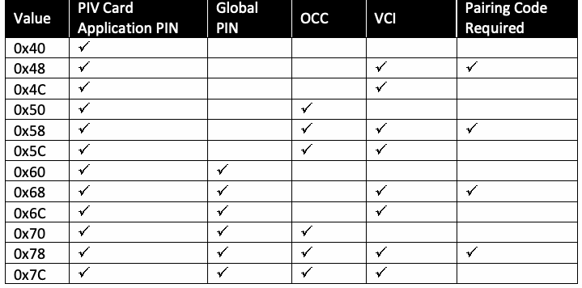
| 値 | PIVカード | グローバル | OCC | VCI | ペアリングコード |
| アプリケーションPIN | PIN | 必須 | |||
| 0x40 | | ||||
| 0x48 | | | | ||
| 0x4C | | | |||
| 0x50 | | | |||
| 0x58 | | | | | |
| 0x5C | | | | ||
| 0x60 | | | |||
| 0x68 | | | | | |
| 0x6C | | | | ||
| 0x70 | | | | ||
| 0x78 | | | | | |
| 0x7C | | | | |
The encoding of the 0x7E Discovery Object is as follows:
0x7E Discovery Objectの符号化は次のとおりです：
未レビュー訳{'7E 12' {'4F 0B A0 00 00 03 08 00 00 10 00 01 00'} {'5F 2F 02 xx yy'}}, where xx and yy encode the first and second byte of the PIN Usage Policy, as described in this section.
{'7E 12' {'4F 0B A0 00 00 03 08 00 00 10 00 01 00'} {'5F 2F 02 xx yy'}}, ここでxxおよびyyは、本節で説明したPIN使用ポリシーの第1バイトおよび第2バイトを符号化します。
未レビュー訳The Security Object enforces integrity of the Discovery Object according to the issuer.
Security Objectは、発行者に従ってDiscovery Objectの完全性を保証します。
未レビュー訳3.3.3. Key History Object
3.3.3. 鍵履歴オブジェクト
未レビュー訳Up to 20 retired key management private keys MAY be stored in the PIV Card Application. The Key History object provides information about the retired key management private keys that are present within the PIV Card Application.4 Retired key management private keys are private keys that correspond to X.509 Certificates for Key Management that have expired, have been revoked, or have otherwise been superseded. The Key History object SHALL be present in the PIV Card Application if the PIV Card Application contains any retired key management private keys but MAY be present even if no such keys are present in the PIV Card Application. For each retired key management private key in the PIV Card Application, the corresponding certificate MAY either be present within the PIV Card Application or MAY only be available from an online repository.
PIVカードアプリケーションには、最大20個の鍵管理用退役秘密鍵を保存してもよい（MAY）。Key Historyオブジェクトは、PIVカードアプリケーション内に存在する鍵管理用退役秘密鍵に関する情報を提供します。4 鍵管理用退役秘密鍵とは、有効期限が切れた、失効した、またはその他の理由で置き換えられた鍵管理用X.509証明書に対応する秘密鍵です。PIVカードアプリケーションに鍵管理用退役秘密鍵が含まれる場合、Key HistoryオブジェクトはPIVカードアプリケーションに存在しなければならない（SHALL）が、そのような鍵が存在しない場合でも存在してもよい（MAY）。PIVカードアプリケーション内の各鍵管理用退役秘密鍵について、対応する証明書はPIVカードアプリケーション内に存在してもよく（MAY）、オンラインリポジトリからのみ入手可能であってもよい（MAY）。
未レビュー訳The Key History object includes two mandatory fields, keysWithOnCardCerts and keysWithOffCardCerts, and one optional field, offCardCertURL. The keysWithOnCardCerts field indicates the number of retired private keys within the PIV Card Application for which the corresponding certificates are also stored within the PIV Card Application. The keysWithOffCardCerts field indicates the number of retired private keys within the PIV Card Application for which the corresponding certificates are not stored within the PIV Card Application. The numeric values in both keysWithOnCardCerts and keysWithOffCardCerts are represented as unsigned binary integers. The offCardCertURL field contains a URL that points to a file containing the certificates that corresponding to all of the retired private keys within the PIV Card Application, including those for which the corresponding certificate is also stored within the PIV Card Application. The offCardCertURL field SHALL be present if the keysWithOffCardCerts value is greater than zero and SHALL be absent if the values of both keysWithOnCardCerts and keysWithOffCardCerts are zero. The offCardCertURL field MAY be present if the keysWithOffCardCerts value is zero but the keysWithOnCardCerts value is greater than zero.
Key Historyオブジェクトには、keysWithOnCardCertsおよびkeysWithOffCardCertsという2つの必須フィールドと、offCardCertURLという1つの任意フィールドがあります。keysWithOnCardCertsフィールドは、対応する証明書もPIVカードアプリケーション内に保存されている、PIVカードアプリケーション内の退役秘密鍵の数を示します。keysWithOffCardCertsフィールドは、対応する証明書がPIVカードアプリケーション内に保存されていない、PIVカードアプリケーション内の退役秘密鍵の数を示します。keysWithOnCardCertsおよびkeysWithOffCardCertsの数値は、符号なし2進整数で表されます。offCardCertURLフィールドには、PIVカードアプリケーション内のすべての退役秘密鍵に対応する証明書を含むファイルのURLが格納されます。これには、対応する証明書がPIVカードアプリケーション内にも保存されている鍵の証明書も含まれます。keysWithOffCardCertsの値が0より大きい場合、offCardCertURLフィールドは存在しなければならず（SHALL）、keysWithOnCardCertsとkeysWithOffCardCertsの両方の値が0である場合は存在してはならない（SHALL）。keysWithOffCardCertsの値が0で、keysWithOnCardCertsの値が0より大きい場合、offCardCertURLフィールドは存在してもよい（MAY）。
未レビュー訳The file that is pointed to by the offCardCertURL field SHALL contain the DER encoding of the following data structure:
offCardCertURLフィールドが指すファイルには、次のデータ構造のDER符号化が含まれなければならない（SHALL）：
未レビュー訳OffCardKeyHistoryFile ::= SEQUENCE SIZE (1..20) OF SEQUENCE {
OffCardKeyHistoryFile ::= SEQUENCE SIZE (1..20) OF SEQUENCE {
未レビュー訳keyReference
keyReference
未レビュー訳OCTET STRING (SIZE(1))
OCTET STRING (SIZE(1))
未レビュー訳cert
cert
未レビュー訳Certificate
Certificate
未レビュー訳}
未レビュー訳where keyReference is the key reference for the private key on the card, and cert is the corresponding X.509 certificate.5 The offCardCertURL field SHALL have the following format:
ここでkeyReferenceはカード上の秘密鍵の鍵参照であり、certは対応するX.509証明書です。5 offCardCertURLフィールドは、次の形式でなければならない（SHALL）：
未レビュー訳"http://" <DNS name> "/" <ASCII-HEX encoded SHA-256 hash of OffCardKeyHistoryFile>
"http://" <DNS name> "/" <OffCardKeyHistoryFileのASCII-HEX符号化SHA-256ハッシュ>
未レビュー訳The private keys for which the corresponding certificates are stored within the PIV Card Application SHALL be assigned to the lowest numbered key references reserved for retired key management private keys. For example, if keysWithOnCardCerts is 5, then the corresponding private keys SHALL be assigned to key references '82', '83', '84', '85', and '86'.
対応する証明書がPIVカードアプリケーション内に保存されている秘密鍵は、鍵管理用退役秘密鍵に割り当てられた鍵参照のうち、番号の最も小さいものに割り当てなければならない（SHALL）。たとえば、keysWithOnCardCertsが5の場合、対応する秘密鍵は鍵参照'82'、'83'、'84'、'85'、および'86'に割り当てなければならない（SHALL）。
未レビュー訳The private keys for which the corresponding certificates are not stored within the PIV Card Application SHALL be assigned to the highest-numbered key references reserved for retired key management private keys. For example, if keysWithOffCardCerts is 3, then the corresponding private keys SHALL be assigned to key references '93', '94', and '95'.
対応する証明書がPIVカードアプリケーション内に保存されていない秘密鍵は、鍵管理用退役秘密鍵に割り当てられた鍵参照のうち、番号の最も大きいものに割り当てなければならない（SHALL）。たとえば、keysWithOffCardCertsが3の場合、対応する秘密鍵は鍵参照'93'、'94'、および'95'に割り当てなければならない（SHALL）。
未レビュー訳Private keys do not have to be stored within the PIV Card Application in the order of their age. However, if the certificates that corresponding to only some of the retired key management private keys are available within the PIV Card Application, then the certificates that are stored in the PIV Card Application SHALL be the ones that were most recently issued.
秘密鍵は、その古さの順にPIVカードアプリケーション内に保存する必要はありません。ただし、鍵管理用退役秘密鍵の一部のみに対応する証明書がPIVカードアプリケーション内で利用可能な場合、PIVカードアプリケーションに保存される証明書は、最も最近発行されたものでなければならない（SHALL）。
未レビュー訳The Key History object is only available over the contact interface and VCI. The read access control rule for the Key History object is “Always,” meaning that it CAN be read without access control restrictions.
Key Historyオブジェクトは、接触型インターフェースおよびVCIを介してのみ利用できます。Key Historyオブジェクトの読み取りアクセス制御規則は「Always」であり、アクセス制御の制限なしに読み取ることができる（CAN）ことを意味します。
未レビュー訳The Security Object enforces integrity of the Key History object according to the issuer.
Security Objectは、発行者に従ってKey Historyオブジェクトの完全性を保証します。
未レビュー訳3.3.4. Retired X.509 Certificates for Key Management
3.3.4. 鍵管理用退役X.509証明書
未レビュー訳These objects hold the X.509 Certificates for Key Management that corresponding to retired key management private keys, as described in Sec. 3.3.3. Retired key management private keys and their corresponding certificates are only available over the contact interface or VCI. The read access control rule for these certificates is “Always,” meaning that the certificates CAN be read without access control restrictions. The PKI cryptographic function (see Table 5) for all of the retired key management private keys is protected with a “PIN” or “OCC” access rule. In other words, once the PIN or OCC data is submitted and verified, subsequent key management key operations CAN be performed with any of the retired key management private keys without requiring the PIN or OCC data again. This enables multiple private key operations without additional cardholder consent.
これらのオブジェクトには、3.3.3節で説明した、鍵管理用退役秘密鍵に対応する鍵管理用X.509証明書が格納されます。鍵管理用退役秘密鍵および対応する証明書は、接触型インターフェースまたはVCIを介してのみ利用できます。これらの証明書の読み取りアクセス制御規則は「Always」であり、アクセス制御の制限なしに読み取ることができる（CAN）ことを意味します。すべての鍵管理用退役秘密鍵に対するPKI暗号機能（表5を参照）は、「PIN」または「OCC」アクセス規則によって保護されます。つまり、PINまたはOCCデータを一度提出して検証すれば、その後の鍵管理鍵操作はPINまたはOCCデータを再度要求せずに、いずれの鍵管理用退役秘密鍵でも実行できる（CAN）。これにより、カード保有者の追加同意なしに複数の秘密鍵操作が可能になります。
未レビュー訳3.3.5. Cardholder Iris Images
3.3.5. カード保有者の虹彩画像
未レビュー訳The iris images data object specifies compact images of the cardholder’s irises. The images are suitable for use in iris recognition systems for automated identity verification. The iris images data object SHALL be encoded as specified in [SP800-76].
虹彩画像データオブジェクトは、カード保有者の虹彩の圧縮画像を指定します。これらの画像は、自動本人確認のための虹彩認識システムで使用するのに適しています。虹彩画像データオブジェクトは[SP800-76]に規定されたとおりに符号化しなければならない（SHALL）。
未レビュー訳3.3.6. Biometric Information Templates Group Template
3.3.6. 生体情報テンプレートグループテンプレート
未レビュー訳The Biometric Information Templates (BIT) Group data object encodes the configuration information of the OCC data. The encoding of the BIT Group Template SHALL be as specified in Table 7 of [SP800-76]. When OCC satisfies the PIV ACRs for PIV data objects access and command execution, both the Discovery Object and the BIT Group Template data object SHALL be present, and bit 5 of the first byte of the PIN Usage Policy SHALL be set. The BIT Group Template MAY be present when OCC does not satisfy the PIV ACRs for PIV data objects access but, if present, SHALL contain no BITs.6 The Security Object enforces integrity of the BIT Group Template data object according to the issuer.
生体情報テンプレート（BIT）グループデータオブジェクトは、OCCデータの構成情報を符号化します。BIT Group Templateの符号化は、[SP800-76]の表7に従わなければならない（SHALL）。OCCがPIVデータオブジェクトアクセスおよびコマンド実行に関するPIV ACRを満たす場合、Discovery ObjectとBIT Group Templateデータオブジェクトの両方が存在しなければならず（SHALL）、PIN使用ポリシーの第1バイトのビット5を設定しなければならない（SHALL）。OCCがPIVデータオブジェクトアクセスに関するPIV ACRを満たさない場合、BIT Group Templateは存在してもよい（MAY）が、存在する場合はBITを含んではならない（SHALL）。6 Security Objectは、発行者に従ってBIT Group Templateデータオブジェクトの完全性を保証します。
未レビュー訳3.3.7. Secure Messaging Certificate Signer
3.3.7. セキュアメッセージング証明書署名者
未レビュー訳The Secure Messaging Certificate Signer data object, which SHALL be present if the PIV Card supports secure messaging for non-card management operations, contains the certificates needed to verify the signature on the secure messaging card verifiable certificate (CVC), as specified in SP 800-73-5 Part 2, Sec. 4.1.5.
セキュアメッセージング証明書署名者データオブジェクトは、PIVカードがカード管理以外の操作でセキュアメッセージングをサポートする場合に存在しなければならない（SHALL）。このデータオブジェクトには、SP 800-73-5 Part 2, Sec. 4.1.5に規定されたセキュアメッセージングカード検証可能証明書（CVC）の署名検証に必要な証明書が含まれます。
未レビュー訳The public key required to verify the digital signature of the secure messaging CVC is an ECC key. It SHALL be provided in either an X.509 Certificate for Content Signing or an Intermediate CVC. If the public key required to verify the digital signature of the secure messaging CVC is provided in an Intermediate CVC, then the format of the Intermediate CVC SHALL be as specified in SP 800-73-5 Part 2, Sec. 4.1.5, and the public key required to verify the digital signature of the Intermediate CVC SHALL be provided in an X.509 Certificate for Content Signing.
セキュアメッセージングCVCのデジタル署名検証に必要な公開鍵はECC鍵です。この公開鍵は、コンテンツ署名用X.509証明書または中間CVCのいずれかで提供しなければならない（SHALL）。セキュアメッセージングCVCのデジタル署名検証に必要な公開鍵が中間CVCで提供される場合、中間CVCの形式はSP 800-73-5 Part 2, Sec. 4.1.5に従わなければならず（SHALL）、中間CVCのデジタル署名検証に必要な公開鍵はコンテンツ署名用X.509証明書で提供されなければならない（SHALL）。
未レビュー訳The X.509 Certificate for Content Signing SHALL be a digital signature certificate issued under the id-fpki-common-piv-contentSigning policy of [COMMON]. The X.509 Certificate for Content
コンテンツ署名用X.509証明書は、[COMMON]のid-fpki-common-piv-contentSigningポリシーに基づいて発行されたデジタル署名証明書でなければならない（SHALL）。コンテンツ署名用X.509証明書
未レビュー訳Signing SHALL also include an extended key usage (extKeyUsage) extension asserting id-PIV-content-signing. Additional descriptions for the PIV object identifiers are provided in Appendix B of FIPS 201-3. The X.509 Certificate for Content Signing needed to verify the digital signature of a secure messaging CVC or Intermediate CVC of a valid PIV Card7 SHALL NOT be expired.
は、id-PIV-content-signingを示す拡張鍵用途（extKeyUsage）拡張も含まなければならない（SHALL）。PIVオブジェクト識別子に関する追加説明は、FIPS 201-3の付録Bに記載されています。有効なPIVカード7のセキュアメッセージングCVCまたは中間CVCのデジタル署名を検証するために必要なコンテンツ署名用X.509証明書は、期限切れであってはならない（SHALL NOT）。
未レビュー訳Note that the option to include an Intermediate CVC is included as a temporary measure to accommodate the use of certification authorities that do not support the issuance of X.509 certificates that contain elliptic curve subject public keys. A future version of SP 800-73 is expected to deprecate the Intermediate CVC data element.
中間CVCを含める選択肢は、楕円曲線のサブジェクト公開鍵を含むX.509証明書を発行できない認証局の利用に対応するための暫定措置として含まれていることに注意してください。将来のSP 800-73の版では、中間CVCデータ要素が非推奨になる見込みです。
未レビュー訳3.3.8. Pairing Code Reference Data Container
3.3.8. ペアリングコード参照データコンテナ
未レビュー訳The Pairing Code Reference Data Container, which SHALL be present if the PIV Card supports the virtual contact interface, includes a copy of the PIV Card’s pairing code (see Sec. 5.1.3). The Security Object enforces the integrity of the Pairing Code Reference Data Container according to the issuer.
ペアリングコード参照データコンテナは、PIVカードが仮想接触型インターフェースをサポートする場合に存在しなければならない（SHALL）ものであり、PIVカードのペアリングコードのコピーを含みます（5.1.3節を参照）。Security Objectは、発行者に従ってペアリングコード参照データコンテナの完全性を保証します。
未レビュー訳3.4. Inclusion of Universally Unique Identifiers (UUIDs)
3.4. 汎用一意識別子（UUID）の格納
未レビュー訳This specification provides support for two UUIDs on a PIV Card. The Card UUID is unique for each card, and it SHALL be present on all PIV Cards. The Cardholder UUID is a persistent identifier for the cardholder, and it is optional to implement. The requirements for these UUIDs are provided in the following subsections.
本仕様は、PIVカード上の2つのUUIDをサポートします。カードUUIDはカードごとに一意であり、すべてのPIVカードに存在しなければならない（SHALL）。カード保有者UUIDはカード保有者の永続的な識別子であり、実装は任意です。これらのUUIDに関する要件を次の各節に示します。
未レビュー訳3.4.1. Card UUID
3.4.1. カードUUID
未レビュー訳FIPS 201 requires PIV Cards to include a Card UUID. The Card UUID SHALL be included on PIV Cards as follows:
FIPS 201は、PIVカードにカードUUIDを含めることを要求しています。カードUUIDは、PIVカードに次のように含めなければならない（SHALL）：
未レビュー訳1.The value of the GUID data element of the CHUID data object SHALL be a 16-byte binary representation of a valid UUID [RFC4122]. The UUID SHALL be version 1, 4, or 5, as specified in [RFC4122, Section 4.1.3].
1.CHUIDデータオブジェクトのGUIDデータ要素の値は、有効なUUID [RFC4122]の16バイトの2進表現でなければならない（SHALL）。UUIDは[RFC4122, Section 4.1.3]に規定されたバージョン1、4、または5でなければならない（SHALL）。
未レビュー訳2.The same 16-byte binary representation of the UUID value SHALL be present as the value of an entryUUID attribute, as defined in [RFC4530], in any CMS-signed data object that is required to contain a pivFASC-N attribute on a PIV Card (i.e., in the mandatory cardholder fingerprint template and facial image data objects as well as in the optional cardholder iris images data object when present.
2.同じUUIDの16バイトの2進表現は、PIVカード上でpivFASC-N属性を含む必要があるすべてのCMS署名付きデータオブジェクト（すなわち、必須のカード保有者指紋テンプレートおよび顔画像データオブジェクト、ならびに存在する場合は任意のカード保有者虹彩画像データオブジェクトにおいて、[RFC4530]で定義されたentryUUID属性の値として存在しなければならない（SHALL）。
未レビュー訳3.If the PIV Card supports secure messaging and/or authentication using the secure messaging key, then the same 16-byte binary representation of the UUID value SHALL be used as the Subject Identifier in the secure messaging CVC, as specified in SP 800-73-5 Part 2, Sec. 4.1.5.
3.PIVカードがセキュアメッセージングおよび／またはセキュアメッセージング鍵を使用する認証をサポートする場合、同じUUIDの16バイトの2進表現を、SP 800-73-5 Part 2, Sec. 4.1.5に規定されたセキュアメッセージングCVC内のSubject Identifierとして使用しなければならない（SHALL）。
未レビュー訳4.The string representation of the same UUID value SHALL be present in the X.509 Certificate for PIV Authentication and the X.509 Certificate for Card Authentication in the subjectAltName extension encoded as a URI, as specified by [RFC4122, Section 3].
4.同じUUID値の文字列表現は、[RFC4122, Section 3]の規定に従い、URIとして符号化されたsubjectAltName拡張内のPIV認証用X.509証明書およびカード認証用X.509証明書に存在しなければならない（SHALL）。
未レビュー訳3.4.2. Cardholder UUID
3.4.2. カード保有者UUID
未レビュー訳Optionally, a Cardholder UUID value MAY be included in the SAN extension of the X.509 certificate for PIV Authentication. The Cardholder UUID value SHALL be a 16-byte binary representation of a valid UUID encoded as a Uniform Resource Name (URN) and version 4, as specified in [RFC4122, Section 4.1.3]. The identifier should be limited in scope to identify a PIV credential holder to their PIV credentials issued during PIV eligibility. The same Cardholder UUID value MAY optionally be present in the CHUID data object, as defined in Sec. 3.1.2.
任意で、カード保有者UUID値をPIV認証用X.509証明書のSAN拡張に含めてもよい（MAY）。カード保有者UUID値は、有効なUUIDの16バイトの2進表現を、[RFC4122, Section 4.1.3]に規定されたバージョン4のUniform Resource Name（URN）として符号化したものでなければならない（SHALL）。この識別子の適用範囲は、PIV適格期間中に発行された本人のPIV資格情報を識別する範囲に限定すべきである（should）。3.1.2節で定義されるとおり、同じカード保有者UUID値をCHUIDデータオブジェクトに任意で含めてもよい（MAY）。
未レビュー訳3.5. Data Object Containers and Associated Access Rules and Interface Modes
3.5. データオブジェクトコンテナ、関連するアクセス規則、およびインターフェースモード
未レビュー訳Table 2 defines a high-level view of the data model. Each on-card storage container is labeled as mandatory (M), optional (O), or conditional (C). The conditional data objects are the digital signature key and the key management key, which are mandatory if the cardholder has a government-issued email account at the time of credential issuance. This data model is designed to enable and support dual interface cards. For dual chip implementations for any container that can be accessed over both the contact interface and the contactless interface (including the virtual contact interface), the data object SHALL be copied into the corresponding containers on both chips.8
表2はデータモデルの概要を示します。各カード内ストレージコンテナには、必須（M）、任意（O）、または条件付き（C）のラベルが付されています。条件付きデータオブジェクトはデジタル署名鍵および鍵管理鍵であり、カード保有者が資格情報の発行時に政府発行の電子メールアカウントを持つ場合に必須となります。このデータモデルは、デュアルインターフェースカードを実現し、サポートするよう設計されています。デュアルチップ実装において、接触型インターフェースと非接触型インターフェース（仮想接触型インターフェースを含む）の両方からアクセスできる（can）コンテナについては、そのデータオブジェクトを両方のチップ上の対応するコンテナに複製しなければならない（SHALL）。8
未レビュー訳Table 2. Data Model Containers
表2. データモデルのコンテナ
未レビュー訳| Container Name | ContainerID | Access Rule for Read | M/O/C | |
| Contact | Contactless9 | |||
| Card Capability Container | 0xDB00 | Always | VCI | M |
| Card Holder Unique Identifier | 0x3000 | Always | Always | M |
| X.509 Certificate for PIV Authentication | 0x0101 | Always | VCI | M |
| Cardholder Fingerprints | 0x6010 | PIN | VCI and PIN | M |
| Security Object | 0x9000 | Always | VCI | M |
| Cardholder Facial Image | 0x6030 | PIN | VCI and PIN | M |
| X.509 Certificate for Card Authentication | 0x0500 | Always | Always | M |
| X.509 Certificate for Digital Signature | 0x0100 | Always | VCI | C |
| X.509 Certificate for Key Management | 0x0102 | Always | VCI | C |
| Printed Information | 0x3001 | PIN or OCC | VCI and (PIN or OCC) | O |
原本PDFの抜粋画像
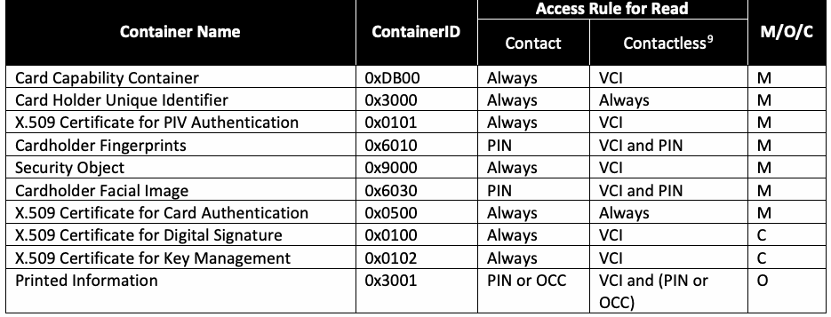
| コンテナ名 | ContainerID | 読み取りアクセス規則 | M/O/C | |
| 接触 | 非接触9 | |||
| カード機能コンテナ | 0xDB00 | Always | VCI | M |
| カード保有者一意識別子 | 0x3000 | Always | Always | M |
| PIV認証用X.509証明書 | 0x0101 | Always | VCI | M |
| カード保有者の指紋 | 0x6010 | PIN | VCI and PIN | M |
| セキュリティオブジェクト | 0x9000 | Always | VCI | M |
| カード保有者の顔画像 | 0x6030 | PIN | VCI and PIN | M |
| カード認証用X.509証明書 | 0x0500 | Always | Always | M |
| デジタル署名用X.509証明書 | 0x0100 | Always | VCI | C |
| 鍵管理用X.509証明書 | 0x0102 | Always | VCI | C |
| 印刷情報 | 0x3001 | PIN or OCC | VCI and (PIN or OCC) | O |
| Container Name | ContainerID | Access Rule for Read | M/O/C | |
| Contact | Contactless9 | |||
| Discovery Object | 0x6050 | Always | Always | O |
| Key History Object | 0x6060 | Always | VCI | O |
| Retired X.509 Certificate for Key Management 1 | 0x1001 | Always | VCI | O |
| Retired X.509 Certificate for Key Management 2 | 0x1002 | Always | VCI | O |
| Retired X.509 Certificate for Key Management 3 | 0x1003 | Always | VCI | O |
| Retired X.509 Certificate for Key Management 4 | 0x1004 | Always | VCI | O |
| Retired X.509 Certificate for Key Management 5 | 0x1005 | Always | VCI | O |
| Retired X.509 Certificate for Key Management 6 | 0x1006 | Always | VCI | O |
| Retired X.509 Certificate for Key Management 7 | 0x1007 | Always | VCI | O |
| Retired X.509 Certificate for Key Management 8 | 0x1008 | Always | VCI | O |
| Retired X.509 Certificate for Key Management 9 | 0x1009 | Always | VCI | O |
| Retired X.509 Certificate for Key Management 10 | 0x100A | Always | VCI | O |
| Retired X.509 Certificate for Key Management 11 | 0x100B | Always | VCI | O |
| Retired X.509 Certificate for Key Management 12 | 0x100C | Always | VCI | O |
| Retired X.509 Certificate for Key Management 13 | 0x100D | Always | VCI | O |
| Retired X.509 Certificate for Key Management 14 | 0x100E | Always | VCI | O |
| Retired X.509 Certificate for Key Management 15 | 0x100F | Always | VCI | O |
| Retired X.509 Certificate for Key Management 16 | 0x1010 | Always | VCI | O |
| Retired X.509 Certificate for Key Management 17 | 0x1011 | Always | VCI | O |
| Retired X.509 Certificate for Key Management 18 | 0x1012 | Always | VCI | O |
| Retired X.509 Certificate for Key Management 19 | 0x1013 | Always | VCI | O |
| Retired X.509 Certificate for Key Management 20 | 0x1014 | Always | VCI | O |
| Cardholder Iris Images | 0x1015 | PIN | VCI and PIN | O |
| Biometric Information Templates Group Template | 0x1016 | Always | Always | O |
| Secure Messaging Certificate Signer | 0x1017 | Always | Always | O |
原本PDFの抜粋画像
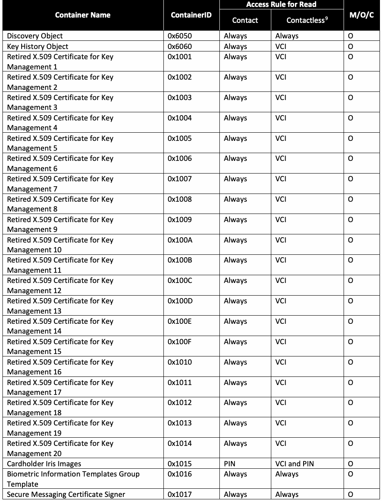
| コンテナ名 | ContainerID | 読み取りアクセス規則 | M/O/C | |
| 接触 | 非接触9 | |||
| 検出オブジェクト | 0x6050 | Always | Always | O |
| 鍵履歴オブジェクト | 0x6060 | Always | VCI | O |
| 鍵管理用退役X.509証明書 1 | 0x1001 | Always | VCI | O |
| 鍵管理用退役X.509証明書 2 | 0x1002 | Always | VCI | O |
| 鍵管理用退役X.509証明書 3 | 0x1003 | Always | VCI | O |
| 鍵管理用退役X.509証明書 4 | 0x1004 | Always | VCI | O |
| 鍵管理用退役X.509証明書 5 | 0x1005 | Always | VCI | O |
| 鍵管理用退役X.509証明書 6 | 0x1006 | Always | VCI | O |
| 鍵管理用退役X.509証明書 7 | 0x1007 | Always | VCI | O |
| 鍵管理用退役X.509証明書 8 | 0x1008 | Always | VCI | O |
| 鍵管理用退役X.509証明書 9 | 0x1009 | Always | VCI | O |
| 鍵管理用退役X.509証明書 10 | 0x100A | Always | VCI | O |
| 鍵管理用退役X.509証明書 11 | 0x100B | Always | VCI | O |
| 鍵管理用退役X.509証明書 12 | 0x100C | Always | VCI | O |
| 鍵管理用退役X.509証明書 13 | 0x100D | Always | VCI | O |
| 鍵管理用退役X.509証明書 14 | 0x100E | Always | VCI | O |
| 鍵管理用退役X.509証明書 15 | 0x100F | Always | VCI | O |
| 鍵管理用退役X.509証明書 16 | 0x1010 | Always | VCI | O |
| 鍵管理用退役X.509証明書 17 | 0x1011 | Always | VCI | O |
| 鍵管理用退役X.509証明書 18 | 0x1012 | Always | VCI | O |
| 鍵管理用退役X.509証明書 19 | 0x1013 | Always | VCI | O |
| 鍵管理用退役X.509証明書 20 | 0x1014 | Always | VCI | O |
| カード保有者の虹彩画像 | 0x1015 | PIN | VCI and PIN | O |
| 生体情報テンプレートグループテンプレート | 0x1016 | Always | Always | O |
| セキュアメッセージング証明書署名者 | 0x1017 | Always | Always | O |
| Container Name | ContainerID | Access Rule for Read | M/O/C | |
| Contact | Contactless9 | |||
| Pairing Code Reference Data Container | 0x1018 | PIN or OCC | VCI and (PIN or OCC) | O |
原本PDFの抜粋画像
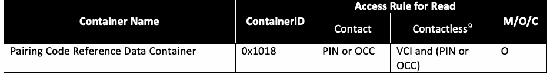
| コンテナ名 | ContainerID | 読み取りアクセス規則 | M/O/C | |
| 接触 | 非接触9 | |||
| ペアリングコード参照データコンテナ | 0x1018 | PIN or OCC | VCI and (PIN or OCC) | O |
Appendix A provides a detailed spreadsheet for the data model. ContainerIDs and tags within the containers for each data object are defined by this data model in accordance with SP 800-73-5 naming conventions.
付録Aには、データモデルの詳細なスプレッドシートが記載されています。各データオブジェクトのコンテナ内のContainerIDおよびタグは、SP 800-73-5の命名規約に従い、このデータモデルによって定義されます。
未レビュー訳4. PIV Data Objects Representation
4. PIVデータオブジェクトの表現
未レビュー訳4.1. Data Objects Definition
4.1. データオブジェクトの定義
未レビュー訳A data object is an item of information seen on the card command interface that has a specified name, a description of logical content, a format, and a coding. Each data object has a globally unique name called its object identifier (OID), as defined in ISO/IEC 8824-2:2002 [ISO8824].
データオブジェクトとは、カードコマンドインターフェース上で認識される情報項目であり、定められた名前、論理的内容の説明、形式、および符号化を持つものです。各データオブジェクトには、ISO/IEC 8824-2:2002 [ISO8824]で定義されるオブジェクト識別子（OID）という、グローバルに一意な名前が付与されます。
未レビュー訳A data object whose data content is encoded as a BER-TLV data structure, as in ISO/IEC 8825-1:2002 [ISO8825], is called a BER-TLV data object.
ISO/IEC 8825-1:2002 [ISO8825]のように、データ内容がBER-TLVデータ構造として符号化されるデータオブジェクトを、BER-TLVデータオブジェクトと呼びます。
未レビュー訳4.1.1. Data Object Content
4.1.1. データオブジェクトの内容
未レビュー訳The content of a data object is the sequence of bytes that are said to be contained in or to be the value of the data object. The number of bytes in this byte sequence is referred to as the length of the data content as well as the size of the data object. The first byte in the sequence is regarded as being at byte position or offset zero in the content of the data object.
データオブジェクトの内容とは、データオブジェクトに含まれる、またはその値を構成するとされるバイト列です。このバイト列のバイト数は、データ内容の長さ、およびデータオブジェクトのサイズと呼ばれます。この列の先頭バイトは、データオブジェクトの内容内のバイト位置またはオフセット0にあるものとみなされます。
未レビュー訳The data content of a BER-TLV data object MAY consist of other BER-TLV data objects. In this case, the tag of the data object indicates that the data object is a constructed data object. A BER-TLV data object that is not a constructed data object is called a primitive data object.
BER-TLVデータオブジェクトのデータ内容は、他のBER-TLVデータオブジェクトから構成されてもよい（MAY）。この場合、データオブジェクトのタグは、そのデータオブジェクトが構築型データオブジェクトであることを示します。構築型データオブジェクトではないBER-TLVデータオブジェクトを、プリミティブデータオブジェクトと呼びます。
未レビュー訳The PIV data objects are BER-TLV objects encoded as per [ISO8825]. However, tag values of the PIV data object’s inner tag assignments do not conform to BER-TLV requirements10 due to the need to accommodate legacy tags inherited from [GSC-IS].
PIVデータオブジェクトは、[ISO8825]に従って符号化されたBER-TLVオブジェクトです。ただし、[GSC-IS]から継承したレガシータグに対応する必要があるため、PIVデータオブジェクトの内部タグ割り当てのタグ値はBER-TLV要件10に準拠しません。
未レビュー訳Before the card is issued, data objects that are created but not used SHALL be set to zero-length value.
カード発行前に作成されたものの使用されないデータオブジェクトは、長さ0の値に設定しなければならない（SHALL）。
未レビュー訳4.2. OIDs and Tags of PIV Card Application Data Objects
4.2. PIVカードアプリケーションのデータオブジェクトのOIDおよびタグ
未レビュー訳Table 3 lists the ASN.1 object identifiers and BER-TLV tags of the thirty-six PIV Card Application data objects. For the purpose of constructing PIV Card Application data object names in the CardApplicationURL in the CCC of the PIV Card Application, the NIST RID ('A0 00 00 03 08') SHALL be used and the card application type SHALL be set to '00'.
表3に、36個のPIVカードアプリケーションデータオブジェクトのASN.1オブジェクト識別子およびBER-TLVタグを示します。PIVカードアプリケーションのCCC内にあるCardApplicationURLでPIVカードアプリケーションのデータオブジェクト名を構築する目的では、NIST RID（'A0 00 00 03 08'）を使用しなければならず（SHALL）、カードアプリケーション型を'00'に設定しなければならない（SHALL）。
未レビュー訳4.3. Object Identifiers
4.3. オブジェクト識別子
未レビュー訳Each of the data objects in the PIV Card Application has been provided with a BER-TLV tag and an ASN.1 OID from the NIST personal identity verification arc. These object identifier assignments are given in Table 3.
PIVカードアプリケーションの各データオブジェクトには、NIST個人識別検証アークからBER-TLVタグおよびASN.1 OIDが割り当てられています。これらのオブジェクト識別子の割り当てを表3に示します。
未レビュー訳A data object SHALL be identified on the PIV client-application programming interface using its OID. An object identifier on the PIV client-application programming interface SHALL be a dot-delimited string of the integer components of the OID. For example, the representation of the OID of the CHUID on the PIV client-application programming interface is “2.16.840.1.101.3.7.2.48.0.”
データオブジェクトは、そのOIDを使用してPIVクライアントアプリケーションプログラミングインターフェース上で識別しなければならない（SHALL）。PIVクライアントアプリケーションプログラミングインターフェース上のオブジェクト識別子は、OIDの整数成分をドットで区切った文字列でなければならない（SHALL）。たとえば、PIVクライアントアプリケーションプログラミングインターフェースにおけるCHUIDのOID表現は「2.16.840.1.101.3.7.2.48.0」です。
未レビュー訳A data object SHALL be identified on the PIV Card Application card command interface using its BER-TLV tag. For example, the CHUID is identified on the card command interface to the PIV Card Application by the three-byte identifier '5FC102'.
データオブジェクトは、そのBER-TLVタグを使用してPIVカードアプリケーションのカードコマンドインターフェース上で識別しなければならない（SHALL）。たとえば、PIVカードアプリケーションのカードコマンドインターフェースでは、CHUIDは3バイト識別子'5FC102'で識別されます。
未レビュー訳Table 2 lists the ACRs of the thirty-six PIV Card Application data objects.
表2に、36個のPIVカードアプリケーションデータオブジェクトのACRを示します。
未レビュー訳Table 3. Object identifiers of the PIV data objects for interoperable use
表3. 相互運用可能な使用のためのPIVデータオブジェクトのオブジェクト識別子
未レビュー訳| Data Object for Interoperable Use | ASN.1 OID | BER-TLV | M/O/C |
| Tag | |||
| Card Capability Container | 2.16.840.1.101.3.7.1.219.0 | '5FC107' | M |
| Card Holder Unique Identifier | 2.16.840.1.101.3.7.2.48.0 | '5FC102' | M |
| X.509 Certificate for PIV Authentication | 2.16.840.1.101.3.7.2.1.1 | '5FC105' | M |
| Cardholder Fingerprints | 2.16.840.1.101.3.7.2.96.16 | '5FC103' | M |
| Security Object | 2.16.840.1.101.3.7.2.144.0 | '5FC106' | M |
| Cardholder Facial Image | 2.16.840.1.101.3.7.2.96.48 | '5FC108' | M |
| X.509 Certificate for Card Authentication | 2.16.840.1.101.3.7.2.5.0 | '5FC101' | M |
| X.509 Certificate for Digital Signature | 2.16.840.1.101.3.7.2.1.0 | '5FC10A' | C |
| X.509 Certificate for Key Management | 2.16.840.1.101.3.7.2.1.2 | '5FC10B' | C |
| Printed Information | 2.16.840.1.101.3.7.2.48.1 | '5FC109' | O |
| Discovery Object | 2.16.840.1.101.3.7.2.96.80 | '7E' | O |
| Key History Object | 2.16.840.1.101.3.7.2.96.96 | '5FC10C' | O |
| Retired X.509 Certificate for Key Management 1 | 2.16.840.1.101.3.7.2.16.1 | '5FC10D' | O |
| Retired X.509 Certificate for Key Management 2 | 2.16.840.1.101.3.7.2.16.2 | '5FC10E' | O |
| Retired X.509 Certificate for Key Management 3 | 2.16.840.1.101.3.7.2.16.3 | '5FC10F' | O |
| Retired X.509 Certificate for Key Management 4 | 2.16.840.1.101.3.7.2.16.4 | '5FC110' | O |
| Retired X.509 Certificate for Key Management 5 | 2.16.840.1.101.3.7.2.16.5 | '5FC111' | O |
| Retired X.509 Certificate for Key Management 6 | 2.16.840.1.101.3.7.2.16.6 | '5FC112' | O |
| Retired X.509 Certificate for Key Management 7 | 2.16.840.1.101.3.7.2.16.7 | '5FC113' | O |
| Retired X.509 Certificate for Key Management 8 | 2.16.840.1.101.3.7.2.16.8 | '5FC114' | O |
| Retired X.509 Certificate for Key Management 9 | 2.16.840.1.101.3.7.2.16.9 | '5FC115' | O |
| Retired X.509 Certificate for Key Management 10 | 2.16.840.1.101.3.7.2.16.10 | '5FC116' | O |
| Retired X.509 Certificate for Key Management 11 | 2.16.840.1.101.3.7.2.16.11 | '5FC117' | O |
原本PDFの抜粋画像
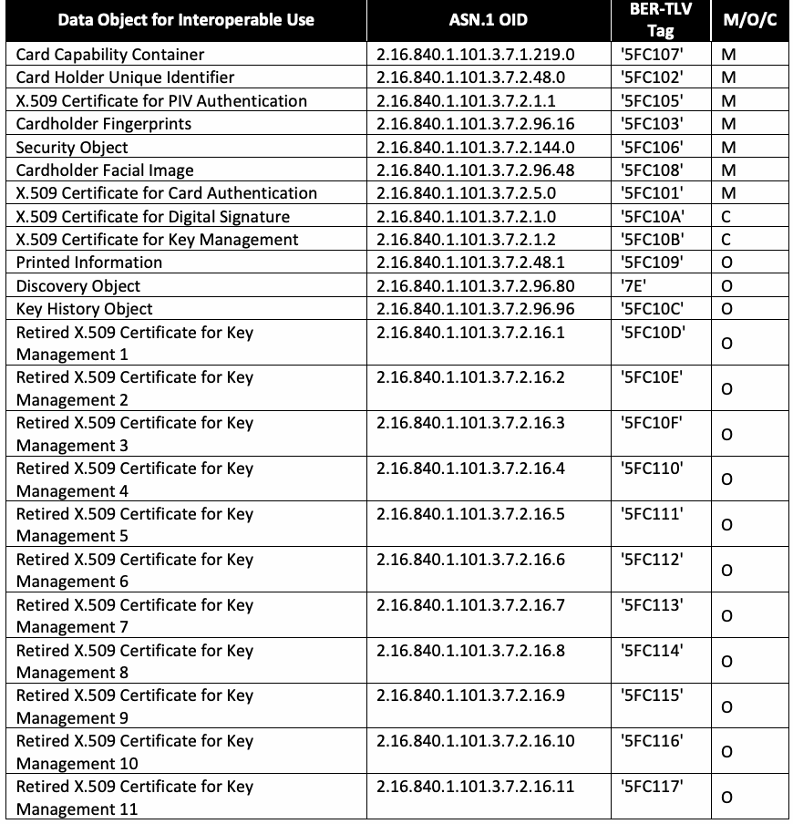
| 相互運用可能な使用のためのデータオブジェクト | ASN.1 OID | BER-TLV | M/O/C |
| タグ | |||
| カード機能コンテナ | 2.16.840.1.101.3.7.1.219.0 | '5FC107' | M |
| カード保有者一意識別子 | 2.16.840.1.101.3.7.2.48.0 | '5FC102' | M |
| PIV認証用X.509証明書 | 2.16.840.1.101.3.7.2.1.1 | '5FC105' | M |
| カード保有者の指紋 | 2.16.840.1.101.3.7.2.96.16 | '5FC103' | M |
| セキュリティオブジェクト | 2.16.840.1.101.3.7.2.144.0 | '5FC106' | M |
| カード保有者の顔画像 | 2.16.840.1.101.3.7.2.96.48 | '5FC108' | M |
| カード認証用X.509証明書 | 2.16.840.1.101.3.7.2.5.0 | '5FC101' | M |
| デジタル署名用X.509証明書 | 2.16.840.1.101.3.7.2.1.0 | '5FC10A' | C |
| 鍵管理用X.509証明書 | 2.16.840.1.101.3.7.2.1.2 | '5FC10B' | C |
| 印刷情報 | 2.16.840.1.101.3.7.2.48.1 | '5FC109' | O |
| 検出オブジェクト | 2.16.840.1.101.3.7.2.96.80 | '7E' | O |
| 鍵履歴オブジェクト | 2.16.840.1.101.3.7.2.96.96 | '5FC10C' | O |
| 鍵管理用退役X.509証明書 1 | 2.16.840.1.101.3.7.2.16.1 | '5FC10D' | O |
| 鍵管理用退役X.509証明書 2 | 2.16.840.1.101.3.7.2.16.2 | '5FC10E' | O |
| 鍵管理用退役X.509証明書 3 | 2.16.840.1.101.3.7.2.16.3 | '5FC10F' | O |
| 鍵管理用退役X.509証明書 4 | 2.16.840.1.101.3.7.2.16.4 | '5FC110' | O |
| 鍵管理用退役X.509証明書 5 | 2.16.840.1.101.3.7.2.16.5 | '5FC111' | O |
| 鍵管理用退役X.509証明書 6 | 2.16.840.1.101.3.7.2.16.6 | '5FC112' | O |
| 鍵管理用退役X.509証明書 7 | 2.16.840.1.101.3.7.2.16.7 | '5FC113' | O |
| 鍵管理用退役X.509証明書 8 | 2.16.840.1.101.3.7.2.16.8 | '5FC114' | O |
| 鍵管理用退役X.509証明書 9 | 2.16.840.1.101.3.7.2.16.9 | '5FC115' | O |
| 鍵管理用退役X.509証明書 10 | 2.16.840.1.101.3.7.2.16.10 | '5FC116' | O |
| 鍵管理用退役X.509証明書 11 | 2.16.840.1.101.3.7.2.16.11 | '5FC117' | O |
| Data Object for Interoperable Use | ASN.1 OID | BER-TLV | M/O/C |
| Tag | |||
| Retired X.509 Certificate for Key Management 12 | 2.16.840.1.101.3.7.2.16.12 | '5FC118' | O |
| Retired X.509 Certificate for Key Management 13 | 2.16.840.1.101.3.7.2.16.13 | '5FC119' | O |
| Retired X.509 Certificate for Key Management 14 | 2.16.840.1.101.3.7.2.16.14 | '5FC11A' | O |
| Retired X.509 Certificate for Key Management 15 | 2.16.840.1.101.3.7.2.16.15 | '5FC11B' | O |
| Retired X.509 Certificate for Key Management 16 | 2.16.840.1.101.3.7.2.16.16 | '5FC11C' | O |
| Retired X.509 Certificate for Key Management 17 | 2.16.840.1.101.3.7.2.16.17 | '5FC11D' | O |
| Retired X.509 Certificate for Key Management 18 | 2.16.840.1.101.3.7.2.16.18 | '5FC11E' | O |
| Retired X.509 Certificate for Key Management 19 | 2.16.840.1.101.3.7.2.16.19 | '5FC11F' | O |
| Retired X.509 Certificate for Key Management 20 | 2.16.840.1.101.3.7.2.16.20 | '5FC120' | O |
| Cardholder Iris Images | 2.16.840.1.101.3.7.2.16.21 | '5FC121' | O |
| Biometric Information Templates Group Template | 2.16.840.1.101.3.7.2.16.22 | '7F61' | O |
| Secure Messaging Certificate Signer | 2.16.840.1.101.3.7.2.16.23 | '5FC122' | O |
| Pairing Code Reference Data Container | 2.16.840.1.101.3.7.2.16.24 | '5FC123' | O |
原本PDFの抜粋画像
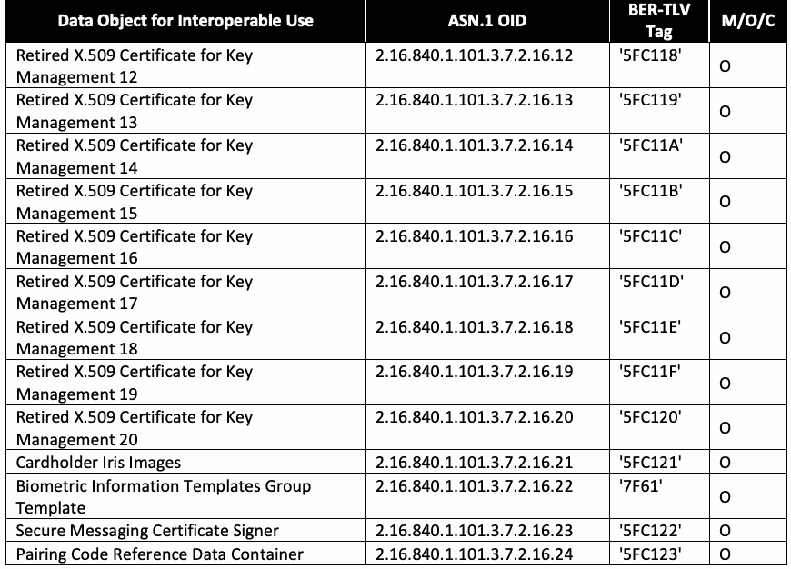
| 相互運用可能な使用のためのデータオブジェクト | ASN.1 OID | BER-TLV | M/O/C |
| タグ | |||
| 鍵管理用退役X.509証明書 12 | 2.16.840.1.101.3.7.2.16.12 | '5FC118' | O |
| 鍵管理用退役X.509証明書 13 | 2.16.840.1.101.3.7.2.16.13 | '5FC119' | O |
| 鍵管理用退役X.509証明書 14 | 2.16.840.1.101.3.7.2.16.14 | '5FC11A' | O |
| 鍵管理用退役X.509証明書 15 | 2.16.840.1.101.3.7.2.16.15 | '5FC11B' | O |
| 鍵管理用退役X.509証明書 16 | 2.16.840.1.101.3.7.2.16.16 | '5FC11C' | O |
| 鍵管理用退役X.509証明書 17 | 2.16.840.1.101.3.7.2.16.17 | '5FC11D' | O |
| 鍵管理用退役X.509証明書 18 | 2.16.840.1.101.3.7.2.16.18 | '5FC11E' | O |
| 鍵管理用退役X.509証明書 19 | 2.16.840.1.101.3.7.2.16.19 | '5FC11F' | O |
| 鍵管理用退役X.509証明書 20 | 2.16.840.1.101.3.7.2.16.20 | '5FC120' | O |
| カード保有者の虹彩画像 | 2.16.840.1.101.3.7.2.16.21 | '5FC121' | O |
| 生体情報テンプレートグループテンプレート | 2.16.840.1.101.3.7.2.16.22 | '7F61' | O |
| セキュアメッセージング証明書署名者 | 2.16.840.1.101.3.7.2.16.23 | '5FC122' | O |
| ペアリングコード参照データコンテナ | 2.16.840.1.101.3.7.2.16.24 | '5FC123' | O |
5. Data Types and Their Representation
5. データ型とその表現
未レビュー訳This section describes the data types used in the PIV Client Application Programming Interface (SP 800-73-5, Part 3) and PIV Card Command Interface (SP 800-73-5, Part 2). Unless otherwise indicated, the representation SHALL be the same on both interfaces.
本節では、PIVクライアントアプリケーションプログラミングインターフェース（SP 800-73-5, Part 3）およびPIVカードコマンドインターフェース（SP 800-73-5, Part 2）で使用するデータ型について説明します。特に指定のない限り、両インターフェースで同じ表現を使用しなければならない（SHALL）。
未レビュー訳The data types are defined in Part 1 rather than in Parts 2 and 3 in order to achieve smart card platform independence from Part 1. Thus, non-government smart card programs can readily adopt the interface specifications in Parts 2 and 3 while customizing Part 1 to their own data model, data types, and namespaces.
データ型はPart 2およびPart 3ではなくPart 1で定義されます。これにより、Part 1をスマートカードプラットフォームから独立させます。したがって、政府機関以外のスマートカードプログラムも、Part 1を独自のデータモデル、データ型、および名前空間に合わせてカスタマイズしながら、Part 2およびPart 3のインターフェース仕様を容易に採用できます（can）。
未レビュー訳5.1. Key References
5.1. 鍵参照
未レビュー訳A key reference is a 1-byte reference data identifier that specifies a cryptographic key or PIN according to its PIV Key Type. Table 4, Table 5, and SP 800-78, Table 8, define the key reference values that SHALL be used on the PIV interfaces. For example, the key reference values are used in a cryptographic protocol, such as an authentication or a signing protocol. Key references are only assigned to private and secret (symmetric) keys, PINs, PIN Unblocking Keys (PUKs), OCC, and the pairing code. All other PIV Card Application key reference values are reserved for future use.
鍵参照は、PIV鍵種別に従って暗号鍵またはPINを指定する1バイトの参照データ識別子です。表4、表5、およびSP 800-78の表8では、PIVインターフェースで使用しなければならない（SHALL）鍵参照値を定義しています。たとえば、鍵参照値は認証プロトコルや署名プロトコルなどの暗号プロトコルで使用されます。鍵参照は、秘密鍵および秘密（対称）鍵、PIN、PINブロック解除鍵（PUK）、OCC、およびペアリングコードにのみ割り当てられます。その他すべてのPIVカードアプリケーションの鍵参照値は、将来の使用のために予約されています。
未レビュー訳In accordance with FIPS 201, no more than 10 consecutive activation retries for each of the activation methods (i.e., PIN and OCC attempts) SHALL be permitted. Issuers MAY further restrict the maximum retry limit to a lower value, as indicated in Table 4 below.
FIPS 201に従い、各アクティベーション方式（すなわち、PINおよびOCCの試行）について、連続するアクティベーション再試行は10回を超えて許可してはならない（SHALL）。発行者は、表4に示すように、最大再試行回数をさらに低い値に制限してもよい（MAY）。
未レビュー訳Table 4. PIV Card Application authentication data references
表4. PIVカードアプリケーションの認証データ参照
未レビュー訳| Key | PIV Reference Data Type | Authenticable Entity | Security Condition for Use | Retry | Number | |
| Reference | Counter | of | ||||
| Value | Value | Unblocks | ||||
| Contact | Contactless | |||||
| '00' | Global PIN | Cardholder | Always | VCI | 10 or lower | Platform Specific |
| '80' | PIV Card Application PIN | Cardholder | Always | VCI | 10 or lower | Issuer Specific |
| '81' | PIN Unblocking Key | PIV Card Application Administrator | Always | Never | Issuer Specific | Issuer Specific |
| '96' | Primary Finger OCC | Cardholder | Always | SM | 10 or lower | Issuer Specific |
| '97' | Secondary Finger OCC | Cardholder | Always | SM | 10 or lower | Issuer Specific |
| '98' | Pairing Code | Cardholder | Always11 | SM | Issuer Specific | Issuer Specific |
原本PDFの抜粋画像
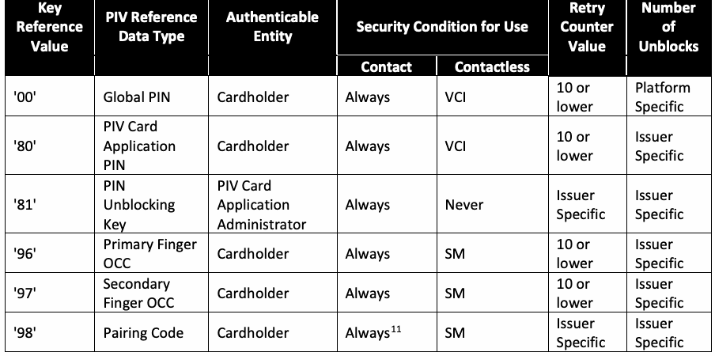
| 鍵 | PIV参照データ型 | 認証主体 | 使用時のセキュリティ条件 | 再試行 | 解除 | |
| 参照 | カウンター | の | ||||
| 値 | 値 | 回数 | ||||
| 接触型 | 非接触型 | |||||
| '00' | グローバルPIN | カード保有者 | Always | VCI | 10以下 | プラットフォーム固有 |
| '80' | PIVカードアプリケーションPIN | カード保有者 | Always | VCI | 10以下 | 発行者固有 |
| '81' | PINブロック解除鍵 | PIVカードアプリケーション管理者 | Always | Never | 発行者固有 | 発行者固有 |
| '96' | 一次指OCC | カード保有者 | Always | SM | 10以下 | 発行者固有 |
| '97' | 二次指OCC | カード保有者 | Always | SM | 10以下 | 発行者固有 |
| '98' | ペアリングコード | カード保有者 | Always11 | SM | 発行者固有 | 発行者固有 |
原本PDFの抜粋画像
原本PDFの抜粋画像
Table 5. PIV Card Application key references
表5. PIVカードアプリケーションの鍵参照
未レビュー訳| Key Reference | PIV Key Type | Administrator | Security Condition for Use | |
| Value (i.e., Key ID) | ||||
| Contact | Contactless | |||
| '04' | PIV Secure Messaging Key | PIV Card Application Administrator | Always | Always |
| '9A' | PIV Authentication Key | PIV Card Application Administrator | PIN or OCC | VCI and (PIN or OCC) |
| '9B' | PIV Card Application Administration Key | PIV Card Application Administrator | Always | Never |
| '9C' | Digital Signature Key | PIV Card Application Administrator | PIN Always or OCC Always | VCI and (PIN Always or OCC Always) |
| '9D' | Key Management Key | PIV Card Application Administrator | PIN or OCC | VCI and (PIN or OCC) |
| '9E' | Card Authentication Key12 | PIV Card Application Administrator | Always | Always |
| '82', '83', '84', '85', '86', '87', '88', '89', '8A', '8B', '8C', '8D', '8E', '8F', '90', '91', '92', '93', '94', '95' | Retired Key Management Key | PIV Card Application Administrator | PIN or OCC | VCI and (PIN or OCC) |
原本PDFの抜粋画像
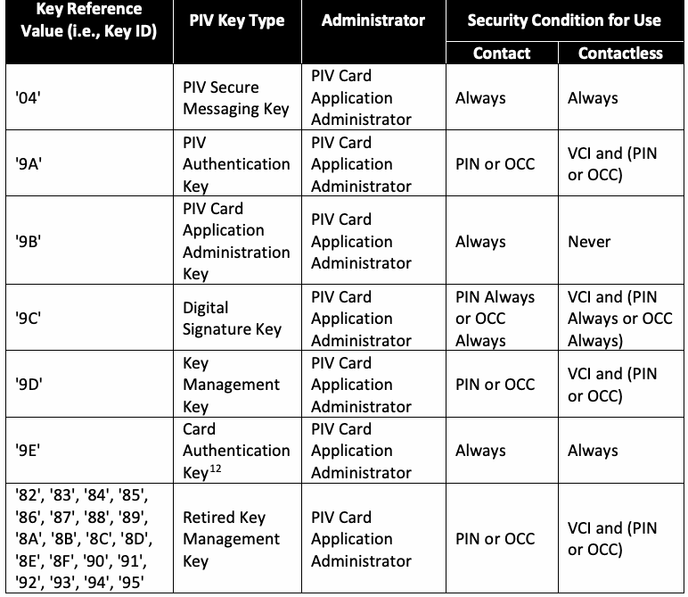
| 鍵参照 | PIV鍵種別 | 管理者 | 使用時のセキュリティ条件 | |
| 値（すなわち鍵ID） | ||||
| 接触型 | 非接触型 | |||
| '04' | PIVセキュアメッセージング鍵 | PIVカードアプリケーション管理者 | Always | Always |
| '9A' | PIV認証鍵 | PIVカードアプリケーション管理者 | PIN or OCC | VCI and (PIN or OCC) |
| '9B' | PIVカードアプリケーション管理鍵 | PIVカードアプリケーション管理者 | Always | Never |
| '9C' | デジタル署名鍵 | PIVカードアプリケーション管理者 | PIN Always or OCC Always | VCI and (PIN Always or OCC Always) |
| '9D' | 鍵管理鍵 | PIVカードアプリケーション管理者 | PIN or OCC | VCI and (PIN or OCC) |
| '9E' | カード認証鍵12 | PIVカードアプリケーション管理者 | Always | Always |
| '82', '83', '84', '85', '86', '87', '88', '89', '8A', '8B', '8C', '8D', '8E', '8F', '90', '91', '92', '93', '94', '95' | 退役鍵管理鍵 | PIVカードアプリケーション管理者 | PIN or OCC | VCI and (PIN or OCC) |
Secure messaging (SM) is defined in Sec. 5.4, and VCI is defined in Sec. 5.5. Table 2 of SP 800-73-5 Part 2 specifies the security conditions for each command.
セキュアメッセージング（SM）は5.4節で定義され、VCIは5.5節で定義されています。SP 800-73-5 Part 2の表2では、各コマンドのセキュリティ条件を規定しています。
未レビュー訳When represented as a byte, the key reference occupies bits b8 and b5-b1, while b7 and b6 SHALL be set to 0. If b8 is 0, then the key reference names global reference data. If b8 is 1, then the key reference names application-specific reference data.
バイトで表す場合、鍵参照はビットb8およびb5～b1を占め、b7およびb6は0に設定しなければならない（SHALL）。b8が0の場合、鍵参照はグローバル参照データを示します。b8が1の場合、鍵参照はアプリケーション固有の参照データを示します。
未レビュー訳The access control rules for PIV data object access SHALL reference the PIV Card Application PIN and MAY optionally reference the cardholder Global PIN or OCC data. If the Global PIN is used by the PIV Card Application, then the Global PIN format SHALL follow the PIV Card Application PIN format defined in Sec. 2.4.3 of SP 800-73-5 Part 2.
PIVデータオブジェクトへのアクセス制御規則では、PIVカードアプリケーションPINを参照しなければならず（SHALL）、任意でカード保有者のグローバルPINまたはOCCデータを参照してもよい（MAY）。PIVカードアプリケーションがグローバルPINを使用する場合、グローバルPINの形式はSP 800-73-5 Part 2の2.4.3節で定義されたPIVカードアプリケーションPINの形式に従わなければならない（SHALL）。
未レビュー訳PIV Card Applications with the Discovery Object and Bit 6 of the first byte of the PIN Usage Policy value set to one, as per Sec. 3.3.2, SHALL reference the PIV Card Application PIN and the cardholder Global PIN in the access control rules for PIV data object access. Additionally, the
3.3.2節に従いDiscovery Objectがあり、PIN使用ポリシー値の第1バイトのビット6が1に設定されたPIVカードアプリケーションは、PIVデータオブジェクトアクセス用のアクセス制御規則でPIVカードアプリケーションPINとカード保有者のグローバルPINを参照しなければならない（SHALL）。さらに、
未レビュー訳PIV Card Application card commands CAN change the status of the Global PIN and MAY change its reference data while the PIV Card Application is the currently selected application.
PIVカードアプリケーションが現在選択されている間、そのカードコマンドはグローバルPINの状態を変更でき（CAN）、その参照データも変更してよい（MAY）。
未レビュー訳The rest of the document uses “PIN” to mean either the PIV Card Application PIN or the Global
本書の残りの部分では、「PIN」はPIVカードアプリケーションPINまたはグローバル
未レビュー訳PIN.
PINのいずれかを意味します。
未レビュー訳5.1.1. OCC Data
5.1.1. OCCデータ
未レビュー訳This document does not specify how the biometric reference data and comparison parameters are stored internally on the card. Moreover, the export of the biometric reference data SHALL NOT be allowed. Configuration data related to the biometric reference data MAY be read from the tag 0x7F61 BIT Group template data object (see Sec. 3.3.6). Configuration data is defined in Table 7 of [SP800-76]. The fingerprints used for OCC MAY be taken from the full set of fingerprints collected for PIV background investigations and SHOULD be imaged from fingers not imaged for off-card one-to-one comparison.
本書では、生体参照データおよび照合パラメータをカード内でどのように保存するかは規定しません。また、生体参照データのエクスポートは許可してはならない（SHALL NOT）。生体参照データに関連する構成データは、タグ0x7F61のBIT Groupテンプレートデータオブジェクトから読み取ってもよい（MAY）（3.3.6節を参照）。構成データは[SP800-76]の表7で定義されています。OCCに使用する指紋は、PIV身元調査のために採取された指紋の全セットから選んでもよく（MAY）、カード外の1対1照合のために撮像されていない指から撮像することが望ましい（SHOULD）。
未レビュー訳5.1.2. PIV Secure Messaging Key
5.1.2. PIVセキュアメッセージング鍵
未レビュー訳If the PIV Card supports secure messaging, the PIV Secure Messaging key SHALL be generated on the PIV Card, and the PIV Card SHALL NOT permit exportation of the PIV Secure Messaging key. The cryptographic operations that use the PIV Secure Messaging key SHALL be available through the contact and contactless interfaces of the PIV Card. The PKI cryptographic function (see Table 5) is under an “Always” access rule, and, thus private key operations (i.e., use of the key to establish session keys for secure messaging) CAN be performed without access control restrictions.
PIVカードがセキュアメッセージングをサポートする場合、PIVセキュアメッセージング鍵はPIVカード上で生成しなければならず（SHALL）、PIVカードはこの鍵のエクスポートを許可してはならない（SHALL NOT）。この鍵を使用する暗号操作は、PIVカードの接触型および非接触型インターフェースで利用可能でなければならない（SHALL）。PKI暗号機能（表5を参照）には「Always」アクセス規則が適用されるため、秘密鍵操作（すなわち、セキュアメッセージング用セッション鍵を確立するために鍵を使用する操作）は、アクセス制御の制限なしに実行できる（CAN）。
未レビュー訳The PIV Card SHALL store a corresponding secure messaging CVC to support validation of the public key by the relying party. The format for the secure messaging CVC SHALL be as specified in SP 800-73-5 Part 2, Sec. 4.1.5. The public key required to verify the digital signature of the secure messaging CVC SHALL be provided in a certificate in the Secure Messaging Certificate Signer data object, as specified in Sec. 3.3.7.
PIVカードは、依拠当事者が公開鍵を検証できるよう、対応するセキュアメッセージングCVCを保存しなければならない（SHALL）。セキュアメッセージングCVCの形式は、SP 800-73-5 Part 2, Sec. 4.1.5に従わなければならない（SHALL）。セキュアメッセージングCVCのデジタル署名を検証するために必要な公開鍵は、3.3.7節に規定されるセキュアメッセージング証明書署名者データオブジェクト内の証明書で提供しなければならない（SHALL）。
未レビュー訳5.1.3. Pairing Code
5.1.3. ペアリングコード
未レビュー訳If the PIV Card supports the virtual contact interface, then it SHALL implement support for the pairing code. If implemented, the pairing code SHALL consist of eight decimal digits, and it SHALL be generated at random by the PIV Card Issuer. The results of each random pairing code generation SHALL be loaded onto — at most — one PIV Card and CANNOT be changed by the cardholder. The pairing code value for a PIV Card SHALL be stored in the Pairing Code Reference Data Container (see Sec. 3.3.8) on the card and MAY be printed on the back of the card in an agency-specific text area (i.e., Zones 9B or 10B). PIV Card Issuers MAY choose to provide the pairing code value to the cardholder in another manner, such as printing it on a slip of paper rather than printing it on the back of the card.13
PIVカードが仮想接触型インターフェースをサポートする場合、ペアリングコードのサポートを実装しなければならない（SHALL）。実装する場合、ペアリングコードは8桁の十進数字で構成しなければならず（SHALL）、PIVカード発行者がランダムに生成しなければならない（SHALL）。ランダムなペアリングコードを生成するたびに、その結果は最大1枚のPIVカードにロードしなければならず（SHALL）、カード保有者は変更できない（CANNOT）。PIVカードのペアリングコード値は、カード上のペアリングコード参照データコンテナ（3.3.8節を参照）に保存しなければならず（SHALL）、機関固有のテキスト領域（ゾーン9Bまたは10B）に印刷してもよい（MAY）。PIVカード発行者は、カード裏面への印刷に代えて紙片に印刷するなど、別の方法でカード保有者にペアリングコード値を提供してもよい（MAY）。13
未レビュー訳Unlike the PIV Card Application PIN or the Global PIN, there are no restrictions on the caching of the pairing code by client applications. It is recommended that a client application that needs to communicate with a PIV Card over its virtual contact interface obtain the card’s pairing code during a registration step by asking the cardholder to enter the value or by reading it from the card over the contact interface from the Pairing Code Reference Data Container and then cache the pairing code until the card expires.14 The client application MAY then connect to the card and establish a virtual contact interface with it whenever the card is within read-range of the client application’s contactless card reader without needing to prompt the cardholder.
PIVカードアプリケーションPINやグローバルPINとは異なり、クライアントアプリケーションによるペアリングコードのキャッシュには制限がありません。仮想接触型インターフェースを介してPIVカードと通信する必要があるクライアントアプリケーションは、登録時にカード保有者に値を入力してもらうか、接触型インターフェース経由でペアリングコード参照データコンテナから読み取り、そのペアリングコードをカードの有効期限までキャッシュすることが推奨されます。14 その後、クライアントアプリケーションはペアリングコードの入力をカード保有者に求めることなく、カードがクライアントアプリケーションの非接触型カードリーダーの読み取り範囲内にあるときにカードへ接続し、仮想接触型インターフェースを確立してもよい（MAY）。
未レビュー訳5.2. PIV Algorithm Identifier
5.2. PIVアルゴリズム識別子
未レビュー訳A PIV algorithm identifier is a 1-byte identifier of a cryptographic algorithm. The identifier specifies a cryptographic algorithm and key size. For symmetric cryptographic operations, the algorithm identifier also specifies a mode of operation (i.e., ECB). SP 800-78, Table 9 lists the PIV algorithm identifiers for the cryptographic algorithms that MAY be recognized on the PIV interfaces.
PIVアルゴリズム識別子は、暗号アルゴリズムを示す1バイトの識別子です。この識別子は暗号アルゴリズムと鍵サイズを指定します。対称暗号操作の場合、アルゴリズム識別子は動作モード（すなわちECB）も指定します。SP 800-78の表9には、PIVインターフェースで認識してもよい（MAY）暗号アルゴリズムに対応するPIVアルゴリズム識別子が列挙されています。
未レビュー訳5.3. Cryptographic Mechanism Identifiers
5.3. 暗号メカニズム識別子
未レビュー訳Cryptographic mechanism identifiers are defined in Table 6. These identifiers serve as inputs to the GENERATE ASYMMETRIC KEY PAIR card command and the SP 800-73-5 Part 3 pivGenerateKeyPair() client API function call, which initiates the generation and storage of the asymmetric key pair.
暗号メカニズム識別子は表6で定義されています。これらの識別子は、GENERATE ASYMMETRIC KEY PAIRカードコマンドおよびSP 800-73-5 Part 3のpivGenerateKeyPair()クライアントAPI関数呼び出しへの入力として使用され、非対称鍵ペアの生成と保存を開始します。
未レビュー訳Table 6. Cryptographic mechanism identifiers
表6. 暗号メカニズム識別子
未レビュー訳| Cryptographic | Description | Parameter |
| Mechanism | ||
| Identifier | ||
| ‘05’ | RSA 3072 | Optional public exponent encoded big-endian |
| '07' | RSA 2048 | Optional public exponent encoded big-endian |
| '11' | ECC: Curve P-256 | None |
| '14' | ECC: Curve P-384 | None |
原本PDFの抜粋画像
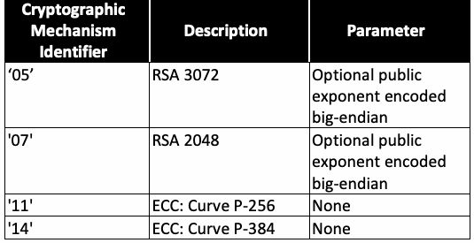
| 暗号 | 説明 | パラメータ |
| メカニズム | ||
| 識別子 | ||
| ‘05’ | RSA 3072 | ビッグエンディアンで符号化された任意の公開指数 |
| '07' | RSA 2048 | ビッグエンディアンで符号化された任意の公開指数 |
| '11' | ECC：P-256曲線 | なし |
| '14' | ECC：P-384曲線 | なし |
Higher strength keys are advised per SP 800-56 Part 1 starting in 2031. See SP 800-78-5, Tables 9 and 10, which reflect support for higher strength keys for PIV cards and supporting systems, where applicable.
SP 800-56 Part 1に従い、2031年以降はより高強度の鍵が推奨されます。適用される場合に、PIVカードおよびサポートシステムのより高強度の鍵への対応を反映したSP 800-78-5の表9および表10を参照してください。
未レビュー訳All other cryptographic mechanism identifier values are reserved for future use.
その他すべての暗号メカニズム識別子の値は、将来の使用のために予約されています。
未レビュー訳5.4. Secure Messaging and Authentication Using a Secure Messaging Key (SM-AUTH)
5.4. セキュアメッセージングおよびセキュアメッセージング鍵を用いた認証（SM-AUTH）
未レビュー訳A PIV Card Application MAY optionally support SM. When secure messaging is established, the PIV Card Application is authenticated to the relying system, and a set of symmetric session keys are established. The symmetric session keys are used to provide confidentiality and integrity protection for the card commands that are sent to the card using secure messaging as well as for the responses from the PIV Card.
PIVカードアプリケーションは、任意でSMをサポートしてもよい（MAY）。セキュアメッセージングが確立されると、依拠システムに対してPIVカードアプリケーションが認証され、対称セッション鍵のセットが確立されます。対称セッション鍵は、セキュアメッセージングを使用してカードに送信されるカードコマンド、およびPIVカードからの応答に機密性と完全性保護を提供するために使用されます。
未レビュー訳If implemented, SM for non-card management operations SHALL only be established using the PIV Secure Messaging key specified in Table 5 and the SM protocol in accordance with the specifications in Sec. 4 of SP 800-73-5 Part 2.
実装する場合、カード管理以外の操作に対するSMは、表5に規定されたPIVセキュアメッセージング鍵と、SP 800-73-5 Part 2の4節の仕様に従ったSMプロトコルを使用してのみ確立しなければならない（SHALL）。
未レビュー訳A PIV Card Application may optionally support authentication using the Secure Messaging key (SM-AUTH). When SM-AUTH is supported, the PIV Card and, therefore the cardholder is authenticated to the relying system.
PIVカードアプリケーションは、任意でセキュアメッセージング鍵を使用した認証（SM-AUTH）をサポートしてもよい（may）。SM-AUTHをサポートする場合、PIVカード、したがってカード保有者は、依拠システムに対して認証されます。
未レビュー訳5.5. Virtual Contact Interface
5.5. 仮想接触型インターフェース
未レビュー訳The term “virtual contact interface (VCI)” is used in this document as shorthand for a security condition. As described in access control rules in this document and in SP 800-73-5 Part 2, all non-card management operations that are allowed over the contact interface MAY be carried out over the contactless interface if the VCI security condition is satisfied. Support for the VCI is optional.
本書では、「仮想接触型インターフェース（VCI）」という用語をセキュリティ条件の略称として使用します。本書およびSP 800-73-5 Part 2のアクセス制御規則に記載されているとおり、VCIセキュリティ条件が満たされていれば、接触型インターフェースで許可されるすべてのカード管理以外の操作を、非接触型インターフェース経由で実行してもよい（MAY）。VCIのサポートは任意です。
未レビュー訳The VCI security condition supports two different configurations for the establishment of the VCI. In the default (and recommended) configuration, the VCI is only established after both secure messaging has been established and the pairing code has been presented to the card using secure messaging. In the non-default configuration, the VCI is established through secure messaging without any further steps.
VCIセキュリティ条件は、VCIを確立するための2つの異なる構成をサポートします。既定（かつ推奨）の構成では、セキュアメッセージングが確立され、ペアリングコードがセキュアメッセージングを使用してカードに提示された後にのみVCIが確立されます。既定ではない構成では、追加手順なしにセキュアメッセージングを通じてVCIが確立されます。
未レビュー訳The VCI security condition is:
VCIセキュリティ条件は次のとおりです：
未レビュー訳(command is submitted over secure messaging) AND (the Discovery Object is present) AND (Bit 4 of the first byte of the PIN Usage Policy is one) AND ((the security status indicator associated with the pairing code is TRUE) OR (Bit 3 of the first byte of the PIN Usage Policy is one))
(コマンドがセキュアメッセージングを介して送信されている) AND (Discovery Objectが存在する) AND (PIN Usage Policyの第1バイトのBit 4が1である) AND ((ペアリングコードに関連付けられたセキュリティ状態インジケーターがTRUEである) OR (PIN Usage Policyの第1バイトのBit 3が1である))
未レビュー訳PIV Card Applications that support the VCI SHALL support the configuration in which Bit 3 of the first byte of the PIN Usage Policy is set to zero (i.e., the configuration in which submission of the pairing code to the PIV Card Application is required to establish the VCI) and MAY additionally support the configuration in which Bit 3 of the first byte of the PIN Usage Policy is set to one. Card management systems (CMS) SHALL be configured to set Bit 3 of the first byte of the PIN Usage Policy to zero by default whenever the Discovery Object is present.
VCIをサポートするPIVカードアプリケーションは、PIN Usage Policyの第1バイトのBit 3を0に設定した構成（すなわち、VCIを確立するためにペアリングコードをPIVカードアプリケーションに送信する必要がある構成）をサポートしなければならず、Bit 3を1に設定した構成も追加でサポートしてもよい。Discovery Objectが存在する場合、カード管理システム（CMS）は、既定でPIN Usage Policyの第1バイトのBit 3を0に設定しなければならない。 (SHALL) (MAY) (SHALL)
未レビュー訳Requiring that the pairing code be submitted to the PIV Card Application in order to establish the VCI protects the previously contact-restricted X.509 certificates from skimming15 and also protects PIN-based card activation from being blocked. While it is recommended that the default configuration of CMSs remain unchanged, the configuration of a CMS MAY be changed to set Bit 3 of the first byte of the PIN Usage Policy to one (i.e., to configure PIV Cards to establish VCIs without the submission of a pairing code) if the configuration change is approved by the designated approving authority (DAA) and if compensating controls are implemented to ensure that personally identifiable information (e.g., name, email address, and organization) CANNOT be skimmed from the PIV Card when in close proximity when the card is outside of its protective sleeve.
VCIを確立するためにペアリングコードをPIVカードアプリケーションに送信することを必須とすれば、以前は接触型インターフェースに限定されていたX.509証明書がスキミングされることを防ぎ15、PINベースのカード有効化が阻止されることも防ぐ。CMSの既定構成を変更しないことが推奨されるが、指定承認機関（DAA）が構成変更を承認し、カードが保護スリーブの外にあるときに近距離からPIVカードの個人識別情報（例：氏名、電子メールアドレス、組織）がスキミングされないよう補完的管理策を実施する場合、CMSの構成を変更してPIN Usage Policyの第1バイトのBit 3を1に設定してもよい（すなわち、ペアリングコードを送信せずにVCIを確立するようPIVカードを構成してもよい）。 (MAY) (CANNOT)
未レビュー訳A DAA’s decision to approve the issuance of PIV Cards that implement the VCI without requiring the pairing code SHALL be based on a risk assessment that weighs the perceived benefit against the risk of unauthorized disclosure of cardholder data exposing previously contact-restricted X.509 certificates to skimming. The previously contact-restricted X.509 certificates include information about the cardholder, such as name and email address. Compensating controls SHALL be captured in the appropriate system security plan.16 Systems that accept externally issued PIV Cards SHALL be able to accept PIV Cards with either VCI configuration.
ペアリングコードを要求せずにVCIを実装するPIVカードの発行を承認するDAAの決定は、認識される便益と、カード保有者データが不正に開示され、以前は接触型に限定されていたX.509証明書がスキミングされるリスクとを比較衡量するリスク評価に基づかなければならない。以前は接触型に限定されていたX.509証明書には、氏名や電子メールアドレスなど、カード保有者に関する情報が含まれる。補完的管理策は、適切なシステムセキュリティ計画に記録しなければならない。16 外部発行のPIVカードを受け入れるシステムは、いずれのVCI構成のPIVカードも受け入れられなければならない。 (SHALL) (SHALL) (SHALL)
未レビュー訳5.6. Status Words
5.6. ステータスワード
未レビュー訳A status word (SW) is a 2-byte value returned by a card command at the card edge. The first byte of a status word is referred to as SW1, and the second byte of a status word is referred to as SW2.
ステータスワード（SW）は、カードコマンドによってカード境界で返される2バイト値である。ステータスワードの第1バイトをSW1、第2バイトをSW2と呼ぶ。
未レビュー訳Recognized values of all SW1-SW2 pairs used as return values on the card command interface and their interpretation are given in Table 7. The descriptions of individual card commands provide additional information for interpreting returned status words.
カードコマンドインターフェースで戻り値として使用されるすべてのSW1-SW2ペアの認識済み値とその解釈を表7に示す。個々のカードコマンドの説明には、返されたステータスワードの解釈に関する追加情報が記載されている。
未レビュー訳Table 7. Status words
表7. ステータスワード
未レビュー訳| SW1 | SW2 | Meaning |
| '61' | 'xx' | Successful execution where SW2 encodes the number of response data bytes still available |
| '63' | '00' | Verification failed |
| '63' | 'CX' | Verification failed, X indicates the number of further allowed retries or resets |
| '68' | '82' | Secure messaging not supported |
| '69' | '82' | Security status not satisfied |
原本PDFの抜粋画像
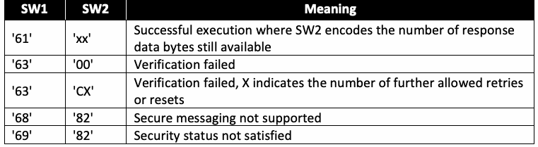
| SW1 | SW2 | 意味 |
| '61' | 'xx' | 正常に実行。SW2は、まだ利用可能な応答データバイト数を符号化する |
| '63' | '00' | 検証失敗 |
| '63' | 'CX' | 検証失敗。Xは、許可される残りの再試行またはリセット回数を示す |
| '68' | '82' | セキュアメッセージングはサポートされていない |
| '69' | '82' | セキュリティ状態が満たされていない |
| SW1 | SW2 | Meaning |
| '69' | '83' | Authentication method blocked |
| '69' | '87' | Expected secure messaging data objects are missing |
| '69' | '88' | Secure messaging data objects are incorrect |
| '6A' | '80' | Incorrect parameter in command data field |
| '6A' | '81' | Function not supported |
| '6A' | '82' | Data object or application not found |
| '6A' | '84' | Not enough memory |
| '6A' | '86' | Incorrect parameter in P1 or P2 |
| '6A' | '88' | Referenced data or reference data not found |
| '90' | '00' | Successful execution |
原本PDFの抜粋画像
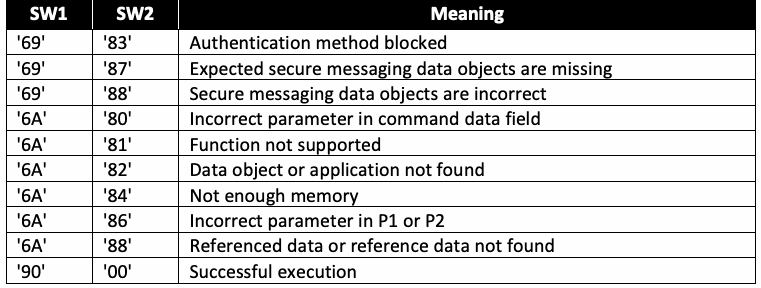
| SW1 | SW2 | 意味 |
| '69' | '83' | 認証方式がブロックされている |
| '69' | '87' | 必要なセキュアメッセージングデータオブジェクトがない |
| '69' | '88' | セキュアメッセージングデータオブジェクトが正しくない |
| '6A' | '80' | コマンドデータフィールドのパラメーターが正しくない |
| '6A' | '81' | 機能がサポートされていない |
| '6A' | '82' | データオブジェクトまたはアプリケーションが見つからない |
| '6A' | '84' | メモリが不足している |
| '6A' | '86' | P1またはP2のパラメーターが正しくない |
| '6A' | '88' | 参照されたデータまたは参照データが見つからない |
| '90' | '00' | 正常に実行 |
References
参考文献
未レビュー訳[COMMON] Federal Public Key Infrastructure Policy Authority (2024) X.509 Certificate
[COMMON] Federal Public Key Infrastructure Policy Authority (2024) X.509 Certificate
未レビュー訳Policy for the U.S. Federal PKI Common Policy Framework, Version 2.8, May 8, 2024 [or as amended]. Available at https://www.idmanagement.gov/docs/fpki-x509-cert-policy-common.pdf.
Policy for the U.S. Federal PKI Common Policy Framework, Version 2.8, May 8, 2024 [or as amended]. Available at https://www.idmanagement.gov/docs/fpki-x509-cert-policy-common.pdf.
未レビュー訳[FIPS180]
[FIPS180]
未レビュー訳National Institute of Standards and Technology (2015) Secure Hash Standard (SHS). (Department of Commerce, Washington, DC), Federal Information Processing Standards Publication (FIPS) 180-4 [or as amended]. https://doi.org/10.6028/NIST.FIPS.180-4
National Institute of Standards and Technology (2015) Secure Hash Standard (SHS). (Department of Commerce, Washington, DC), Federal Information Processing Standards Publication (FIPS) 180-4 [or as amended]. https://doi.org/10.6028/NIST.FIPS.180-4
未レビュー訳[FIPS201]
[FIPS201]
未レビュー訳National Institute of Standards and Technology (2022) Personal Identity Verification (PIV) of Federal Employees and Contractors. (Department of Commerce, Washington, DC), Federal Information Processing Standards Publication (FIPS) 201-3. https://doi.org/10.6028/NIST.FIPS.201-3
National Institute of Standards and Technology (2022) Personal Identity Verification (PIV) of Federal Employees and Contractors. (Department of Commerce, Washington, DC), Federal Information Processing Standards Publication (FIPS) 201-3. https://doi.org/10.6028/NIST.FIPS.201-3
未レビュー訳[GSC-IS]
[GSC-IS]
未レビュー訳Schwarzhoff TT, Dray JF, Jr., Wack JP, Dalci E, Goldfine A, Iorga M (2003) Government Smart Card Interoperability Specification, Version 2.1. (National Institute of Standards and Technology, Gaithersburg, MD), NIST Interagency or Internal Report (IR) 6887, 2003 Edition [or as amended]. https://doi.org/10.6028/NIST.IR.6887e2003
Schwarzhoff TT, Dray JF, Jr., Wack JP, Dalci E, Goldfine A, Iorga M (2003) Government Smart Card Interoperability Specification, Version 2.1. (National Institute of Standards and Technology, Gaithersburg, MD), NIST Interagency or Internal Report (IR) 6887, 2003 Edition [or as amended]. https://doi.org/10.6028/NIST.IR.6887e2003
未レビュー訳[IR7676]
[IR7676]
未レビュー訳Cooper DA (2010) Maintaining and Using Key History on Personal Identity Verification (PIV) Cards. (National Institute of Standards and Technology, Gaithersburg, MD), NIST Interagency or Internal Report (IR) 7676. https://doi.org/10.6028/NIST.IR.7676
Cooper DA (2010) Maintaining and Using Key History on Personal Identity Verification (PIV) Cards. (National Institute of Standards and Technology, Gaithersburg, MD), NIST Interagency or Internal Report (IR) 7676. https://doi.org/10.6028/NIST.IR.7676
未レビュー訳[IR7863]
[IR7863]
未レビュー訳Polk WT, Ferraiolo H, Cooper DA (2015) Cardholder Authentication for the PIV Digital Signature Key. (National Institute of Standards and Technology, Gaithersburg, MD), NIST Interagency or Internal Report (IR) 7863. https://doi.org/10.6028/NIST.IR.7863
Polk WT, Ferraiolo H, Cooper DA (2015) Cardholder Authentication for the PIV Digital Signature Key. (National Institute of Standards and Technology, Gaithersburg, MD), NIST Interagency or Internal Report (IR) 7863. https://doi.org/10.6028/NIST.IR.7863
未レビュー訳[ISO7816]
[ISO7816]
未レビュー訳International Organization for Standardization/International Electrotechnical Commission (2004-2020) ISO/IEC 7816 — Identification cards — Integrated circuit cards. (multiple parts): International Organization for Standardization/International Electrotechnical Commission (2020) ISO/IEC 7816-4:2020 — Identification cards — Integrated circuit cards — Part 4: Organization, security and commands for interchange. (International Organization for Standardization, Geneva, Switzerland) [or as amended]. Available at https://www.iso.org/standard/77180.html International Organization for Standardization/International Electrotechnical Commission (2004) ISO/IEC 7816-5:2004 — Identification cards — Integrated circuit cards — Part 5: Registration of application providers. (International Organization for Standardization, Geneva, Switzerland) [or as amended]. Available at https://www.iso.org/standard/34259.html
International Organization for Standardization/International Electrotechnical Commission (2004-2020) ISO/IEC 7816 — Identification cards — Integrated circuit cards. (multiple parts): International Organization for Standardization/International Electrotechnical Commission (2020) ISO/IEC 7816-4:2020 — Identification cards — Integrated circuit cards — Part 4: Organization, security and commands for interchange. (International Organization for Standardization, Geneva, Switzerland) [or as amended]. Available at https://www.iso.org/standard/77180.html International Organization for Standardization/International Electrotechnical Commission (2004) ISO/IEC 7816-5:2004 — Identification cards — Integrated circuit cards — Part 5: Registration of application providers. (International Organization for Standardization, Geneva, Switzerland) [or as amended]. Available at https://www.iso.org/standard/34259.html
未レビュー訳 International Organization for Standardization/International Electrotechnical Commission (2023) ISO/IEC 7816-6:2023 — Identification cards — Integrated circuit cards — Part 6: Interindustry data elements for interchange. (International Organization for Standardization, Geneva, Switzerland) [or as amended]. Available at https://www.iso.org/standard/77181.html International Organization for Standardization/International Electrotechnical Commission (2021) ISO/IEC 7816-8:2021 — Identification cards — Integrated circuit cards — Part 8: Commands and mechanisms for security operations. (International Organization for Standardization, Geneva, Switzerland) [or as amended]. Available at https://www.iso.org/standard/79893.html International Organization for Standardization/International Electrotechnical Commission (2017) ISO/IEC 7816-9:2017 — Identification cards — Integrated circuit cards — Part 9: Commands for card management. (International Organization for Standardization, Geneva, Switzerland) [or as amended]. Available at https://www.iso.org/standard/67802.html
International Organization for Standardization/International Electrotechnical Commission (2023) ISO/IEC 7816-6:2023 — Identification cards — Integrated circuit cards — Part 6: Interindustry data elements for interchange. (International Organization for Standardization, Geneva, Switzerland) [or as amended]. Available at https://www.iso.org/standard/77181.html International Organization for Standardization/International Electrotechnical Commission (2021) ISO/IEC 7816-8:2021 — Identification cards — Integrated circuit cards — Part 8: Commands and mechanisms for security operations. (International Organization for Standardization, Geneva, Switzerland) [or as amended]. Available at https://www.iso.org/standard/79893.html International Organization for Standardization/International Electrotechnical Commission (2017) ISO/IEC 7816-9:2017 — Identification cards — Integrated circuit cards — Part 9: Commands for card management. (International Organization for Standardization, Geneva, Switzerland) [or as amended]. Available at https://www.iso.org/standard/67802.html
未レビュー訳[ISO8824]
[ISO8824]
未レビュー訳International Organization for Standardization/International Electrotechnical Commission (2021) ISO/IEC 8824-2:2021 — Information technology — Abstract Syntax Notation One (ASN.1) – Part 2: Information object specification. (International Organization for Standardization, Geneva, Switzerland) [or as amended]. Available at https://www.iso.org/standard/81417.html
International Organization for Standardization/International Electrotechnical Commission (2021) ISO/IEC 8824-2:2021 — Information technology — Abstract Syntax Notation One (ASN.1) – Part 2: Information object specification. (International Organization for Standardization, Geneva, Switzerland) [or as amended]. Available at https://www.iso.org/standard/81417.html
未レビュー訳[ISO8825]
[ISO8825]
未レビュー訳International Organization for Standardization/International Electrotechnical Commission (2015) ISO/IEC 8825-1:2015— Information technology — ASN.1 encoding rules: Specification of Basic Encoding Rules (BER), Canonical Encoding Rules (CER) and Distinguished Encoding Rules (DER) Part 1. (International Organization for Standardization, Geneva, Switzerland) [or as amended]. Available at https://www.iso.org/standard/81420.html
International Organization for Standardization/International Electrotechnical Commission (2015) ISO/IEC 8825-1:2015— Information technology — ASN.1 encoding rules: Specification of Basic Encoding Rules (BER), Canonical Encoding Rules (CER) and Distinguished Encoding Rules (DER) Part 1. (International Organization for Standardization, Geneva, Switzerland) [or as amended]. Available at https://www.iso.org/standard/81420.html
未レビュー訳[MRTD10]
[MRTD10]
未レビュー訳International Civil Aviation Organization (2021) Machine Readable Travel Documents, Part 10: Logical Data Structure (LDS) for Storage of Biometrics and Other Data in the Contactless Integrated Circuit (IC). (International Civil Aviation Organization, Montreal, Quebec, Canada), ICAO Document 9303, Eighth Edition.
International Civil Aviation Organization (2021) Machine Readable Travel Documents, Part 10: Logical Data Structure (LDS) for Storage of Biometrics and Other Data in the Contactless Integrated Circuit (IC). (International Civil Aviation Organization, Montreal, Quebec, Canada), ICAO Document 9303, Eighth Edition.
未レビュー訳[RFC2616] Fielding R, Gettys J, Mogul J, Frstk H, Masinter L, Leach P, Berners-Lee T
[RFC2616] Fielding R, Gettys J, Mogul J, Frstk H, Masinter L, Leach P, Berners-Lee T
未レビュー訳(1999) Hypertext Transfer Protocol -- HTTP/1.1. (Internet Engineering Task Force (IETF)), IETF Request for Comments (RFC) 2616. https://doi.org/10.17487/RFC2616
(1999) Hypertext Transfer Protocol -- HTTP/1.1. (Internet Engineering Task Force (IETF)), IETF Request for Comments (RFC) 2616. https://doi.org/10.17487/RFC2616
未レビュー訳[RFC2585] Housley R, Hoffman P (1999) Internet X.509 Public Key Infrastructure
[RFC2585] Housley R, Hoffman P (1999) Internet X.509 Public Key Infrastructure
未レビュー訳Operational Protocols: FTP and HTTP. (Internet Engineering Task Force (IETF)), IETF Request for Comments (RFC) 2585. https://doi.org/10.17487/RFC2585
Operational Protocols: FTP and HTTP. (Internet Engineering Task Force (IETF)), IETF Request for Comments (RFC) 2585. https://doi.org/10.17487/RFC2585
未レビュー訳[RFC4122] Leach P, Mealling M, Salz R (2005) A Universally Unique IDentifier (UUID)
[RFC4122] Leach P, Mealling M, Salz R (2005) A Universally Unique IDentifier (UUID)
未レビュー訳URN Namespace. (Internet Engineering Task Force (IETF)), IETF Request for Comments (RFC) 4122. https://doi.org/10.17487/RFC4122
URN Namespace. (Internet Engineering Task Force (IETF)), IETF Request for Comments (RFC) 4122. https://doi.org/10.17487/RFC4122
未レビュー訳[RFC4530] Zeilenga K, (2006) Lightweight Directory Access Protocol (LDAP) entryUUID
[RFC4530] Zeilenga K, (2006) Lightweight Directory Access Protocol (LDAP) entryUUID
未レビュー訳Operational Attribute. (Internet Engineering Task Force (IETF)), IETF Request for Comments (RFC) 4530. https://doi.org/10.17487/RFC4530
Operational Attribute. (Internet Engineering Task Force (IETF)), IETF Request for Comments (RFC) 4530. https://doi.org/10.17487/RFC4530
未レビュー訳[RFC5280] Cooper D, Santesson S, Farrell S, Boeyen S, Housley R, Polk W (2008) Internet
[RFC5280] Cooper D, Santesson S, Farrell S, Boeyen S, Housley R, Polk W (2008) Internet
未レビュー訳X.509 Public Key Infrastructure Certification and Certificate Revocation List (CRL) Profile. (Internet Engineering Task Force (IETF)), IETF Request for Comments (RFC) 5280. https://doi.org/10.17487/RFC5280
X.509 Public Key Infrastructure Certification and Certificate Revocation List (CRL) Profile. (Internet Engineering Task Force (IETF)), IETF Request for Comments (RFC) 5280. https://doi.org/10.17487/RFC5280
未レビュー訳[RFC5652] Housley R (2009) Cryptographic Message Syntax (CMS). (Internet Engineering Task Force (IETF)), IETF Request for Comments (RFC) 5652.
[RFC5652] Housley R (2009) Cryptographic Message Syntax (CMS). (Internet Engineering Task Force (IETF)), IETF Request for Comments (RFC) 5652.
未レビュー訳https://doi.org/10.17487/RFC5652
https://doi.org/10.17487/RFC5652
未レビュー訳[SP800-76] Grother PJ, Salamon WJ, Chandramouli R (2013) Biometric Specifications for Personal Identity Verification. (National Institute of Standards and
[SP800-76] Grother PJ, Salamon WJ, Chandramouli R (2013) Biometric Specifications for Personal Identity Verification. (National Institute of Standards and
未レビュー訳Technology, Gaithersburg, MD), NIST Special Publication (SP) 800-76-2 [or as amended]. https://doi.org/10.6028/NIST.SP.800-76-2
Technology, Gaithersburg, MD), NIST Special Publication (SP) 800-76-2 [or as amended]. https://doi.org/10.6028/NIST.SP.800-76-2
未レビュー訳[SP800-78] Ferraiolo H, Regenscheid A (2024) Cryptographic Algorithms and Key Sizes for Personal Identity Verification. (National Institute of Standards and
[SP800-78] Ferraiolo H, Regenscheid A (2024) Cryptographic Algorithms and Key Sizes for Personal Identity Verification. (National Institute of Standards and
未レビュー訳Technology, Gaithersburg, MD), NIST Special Publication (SP) 800-78-5 [or as amended]. https://doi.org/10.6028/NIST.SP.800-78-5
Technology, Gaithersburg, MD), NIST Special Publication (SP) 800-78-5 [or as amended]. https://doi.org/10.6028/NIST.SP.800-78-5
未レビュー訳[SP800-85A-4] Cooper D, Ferraiolo H, Chandramouli R, Mohler J (2016) PIV Card Application and Middleware Interface Test Guidelines (SP 800-73-4 Compliance).
[SP800-85A-4] Cooper D, Ferraiolo H, Chandramouli R, Mohler J (2016) PIV Card Application and Middleware Interface Test Guidelines (SP 800-73-4 Compliance).
未レビュー訳(National Institute of Standards and Technology, Gaithersburg, MD), NIST Special Publication (SP) 800-85A-4 [or as amended]. https://doi.org/10.6028/NIST.SP.800-85A-4
(National Institute of Standards and Technology, Gaithersburg, MD), NIST Special Publication (SP) 800-85A-4 [or as amended]. https://doi.org/10.6028/NIST.SP.800-85A-4
未レビュー訳[SP800-87] Ferraiolo H (2018) Codes for Identification of Federal and Federally-Assisted Organizations. (National Institute of Standards and Technology, Gaithersburg, MD), NIST Special Publication (SP) 800-87, Rev. 2 [or as amended]. https://doi.org/10.6028/NIST.SP.800-87r2 [TIG SCEPACS] Government Smart Card Interagency Advisory Board (2005) PACS v2.2,
[SP800-87] Ferraiolo H (2018) Codes for Identification of Federal and Federally-Assisted Organizations. (National Institute of Standards and Technology, Gaithersburg, MD), NIST Special Publication (SP) 800-87, Rev. 2 [or as amended]. https://doi.org/10.6028/NIST.SP.800-87r2 [TIG SCEPACS] Government Smart Card Interagency Advisory Board (2005) PACS v2.2,
未レビュー訳Technical Implementation Guidance: Smart Card Enabled Physical Access Control Systems, Version 2.3, The Government Smart Card Interagency Advisory Board’s Physical Access Interagency Interoperability Working Group. Available at https://www.idmanagement.gov/docs/pacs-tig-scepacs.pdf
Technical Implementation Guidance: Smart Card Enabled Physical Access Control Systems, Version 2.3, The Government Smart Card Interagency Advisory Board’s Physical Access Interagency Interoperability Working Group. Available at https://www.idmanagement.gov/docs/pacs-tig-scepacs.pdf
未レビュー訳Appendix A. PIV Data Model
付録A. PIVデータモデル
未レビュー訳The PIV data model number is 0x10, and the data model version number is 0x01.
PIVデータモデル番号は0x10、データモデルのバージョン番号は0x01である。
未レビュー訳The SP 800-73-5 specification does not provide mechanisms to read partial contents of a PIV data object. Individual access to the TLV elements within a container is not supported. For each container, compliant cards SHALL return all TLV elements of the container in the order listed in this appendix.
SP 800-73-5仕様には、PIVデータオブジェクトの内容の一部を読み取る仕組みは規定されていない。コンテナ内のTLV要素を個別にアクセスすることはサポートされない。適合カードは、各コンテナについて、本付録に記載された順序ですべてのTLV要素を返さなければならない。 (SHALL)
未レビュー訳Both single-chip/dual-interface and dual-chip implementations are feasible. In the single-chip/dual-interface configuration, the PIV Card Application SHALL be provided with information regarding which interface is in use. In the dual-chip configuration, a separate PIV Card Application SHALL be loaded on each chip.
単一チップ／デュアルインターフェース実装とデュアルチップ実装のいずれも実現可能である。単一チップ／デュアルインターフェース構成では、PIVカードアプリケーションに、どのインターフェースが使用中かを示す情報を提供しなければならない。デュアルチップ構成では、各チップに個別のPIVカードアプリケーションをロードしなければならない。 (SHALL) (SHALL)
未レビュー訳Table 8. PIV data containers
表8. PIVデータコンテナ
未レビュー訳| Container Description | ContainerID | BER-TLV Tag | Container | Access Rule for Read | M/O/C | |
| Minimum | Contact | Contactless | ||||
| Capacity | ||||||
| (Bytes)17 | ||||||
| Card Capability Container | 0xDB00 | '5FC107' | 170 | Always | VCI | M |
| Card Holder Unique Identifier | 0x3000 | '5FC102' | 2881 | Always | Always | M |
| X.509 Certificate for PIV Authentication (Key Reference '9A') | 0x0101 | '5FC105' | 1857 | Always | VCI | M |
| Cardholder Fingerprints | 0x6010 | '5FC103' | 4006 | PIN | VCI and PIN | M |
| Security Object | 0x9000 | '5FC106' | 1336 | Always | VCI | M |
| Cardholder Facial Image | 0x6030 | '5FC108' | 12710 | PIN | VCI and PIN | M |
| X.509 Certificate for Card Authentication (Key Reference '9E') | 0x0500 | '5FC101' | 1857 | Always | Always | M |
| X.509 Certificate for Digital Signature (Key Reference '9C') | 0x0100 | '5FC10A' | 1857 | Always | VCI | C |
| X.509 Certificate for Key Management (Key Reference '9D') | 0x0102 | '5FC10B' | 1857 | Always | VCI | C |
| Printed Information | 0x3001 | '5FC109' | 245 | PIN or OCC | VCI and (PIN or OCC) | O |
| Discovery Object | 0x6050 | '7E' | 19 | Always | Always | O |
| Key History Object | 0x6060 | '5FC10C' | 128 | Always | VCI | O |
| Retired X.509 Certificate for Key Management 1 (Key reference '82') | 0x1001 | '5FC10D' | 1895 | Always | VCI | O |
原本PDFの抜粋画像
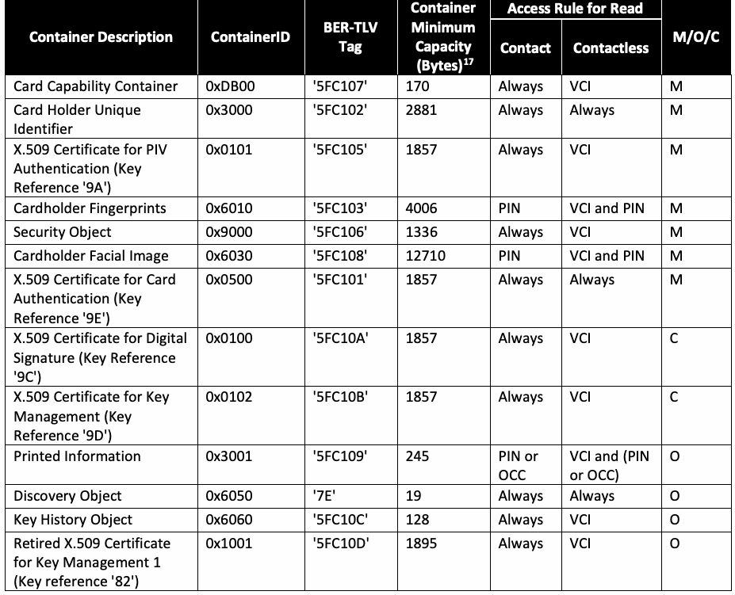
| コンテナの説明 | ContainerID | BER-TLV Tag | Container | 読取りアクセス規則 | M/O/C | |
| 最小 | 接触型 | 非接触型 | ||||
| 容量 | ||||||
| （バイト）17 | ||||||
| カード能力コンテナ | 0xDB00 | '5FC107' | 170 | 常時 | VCI | M |
| カード保有者一意識別子 | 0x3000 | '5FC102' | 2881 | 常時 | 常時 | M |
| PIV認証用X.509証明書（鍵参照'9A'） | 0x0101 | '5FC105' | 1857 | 常時 | VCI | M |
| カード保有者の指紋 | 0x6010 | '5FC103' | 4006 | PIN | VCIおよびPIN | M |
| セキュリティオブジェクト | 0x9000 | '5FC106' | 1336 | 常時 | VCI | M |
| カード保有者の顔画像 | 0x6030 | '5FC108' | 12710 | PIN | VCIおよびPIN | M |
| カード認証用X.509証明書（鍵参照'9E'） | 0x0500 | '5FC101' | 1857 | 常時 | 常時 | M |
| デジタル署名用X.509証明書（鍵参照'9C'） | 0x0100 | '5FC10A' | 1857 | 常時 | VCI | C |
| 鍵管理用X.509証明書（鍵参照'9D'） | 0x0102 | '5FC10B' | 1857 | 常時 | VCI | C |
| 印字情報 | 0x3001 | '5FC109' | 245 | PINまたはOCC | VCIおよび（PINまたはOCC） | O |
| Discovery Object | 0x6050 | '7E' | 19 | 常時 | 常時 | O |
| Key History Object | 0x6060 | '5FC10C' | 128 | 常時 | VCI | O |
| 廃止済み鍵管理用X.509証明書1（鍵参照'82'） | 0x1001 | '5FC10D' | 1895 | 常時 | VCI | O |
原本PDFの抜粋画像
17The values in this column denote the guaranteed minimum capacities of the on-card storage containers in bytes. Cards with larger containers may be produced and determined conformant.
17 この列の値は、カード上のストレージコンテナについて保証される最小容量をバイト単位で示す。これより大きいコンテナを備えたカードを製造し、適合と判定してもよい。
未レビュー訳| Container Description | ContainerID | BER-TLV Tag | Container | Access Rule for Read | M/O/C | |
| Minimum | Contact | Contactless | ||||
| Capacity | ||||||
| (Bytes)17 | ||||||
| Retired X.509 Certificate for Key Management 2 (Key reference '83') | 0x1002 | '5FC10E' | 1895 | Always | VCI | O |
| Retired X.509 Certificate for Key Management 3 (Key reference '84') | 0x1003 | '5FC10F' | 1895 | Always | VCI | O |
| Retired X.509 Certificate for Key Management 4 (Key reference '85') | 0x1004 | '5FC110' | 1895 | Always | VCI | O |
| Retired X.509 Certificate for Key Management 5 (Key reference '86') | 0x1005 | '5FC111' | 1895 | Always | VCI | O |
| Retired X.509 Certificate for Key Management 6 (Key reference '87') | 0x1006 | '5FC112' | 1895 | Always | VCI | O |
| Retired X.509 Certificate for Key Management 7(Key reference '88') | 0x1007 | '5FC113' | 1895 | Always | VCI | O |
| Retired X.509 Certificate for Key Management 8(Key reference '89') | 0x1008 | '5FC114' | 1895 | Always | VCI | O |
| Retired X.509 Certificate for Key Management 9 (Key reference '8A') | 0x1009 | '5FC115' | 1895 | Always | VCI | O |
| Retired X.509 Certificate for Key Management 10 (Key reference '8B') | 0x100A | '5FC116' | 1895 | Always | VCI | O |
| Retired X.509 Certificate for Key Management 11 (Key reference '8C') | 0x100B | '5FC117' | 1895 | Always | VCI | O |
| Retired X.509 Certificate for Key Management 12 (Key reference '8D') | 0x100C | '5FC118' | 1895 | Always | VCI | O |
| Retired X.509 Certificate for Key Management 13 (Key reference '8E') | 0x100D | '5FC119' | 1895 | Always | VCI | O |
| Retired X.509 Certificate for Key Management 14 (Key reference '8F') | 0x100E | '5FC11A' | 1895 | Always | VCI | O |
| Retired X.509 Certificate for Key Management 15 (Key reference '90') | 0x100F | '5FC11B' | 1895 | Always | VCI | O |
| Retired X.509 Certificate for Key Management 16 (Key reference '91') | 0x1010 | '5FC11C' | 1895 | Always | VCI | O |
原本PDFの抜粋画像
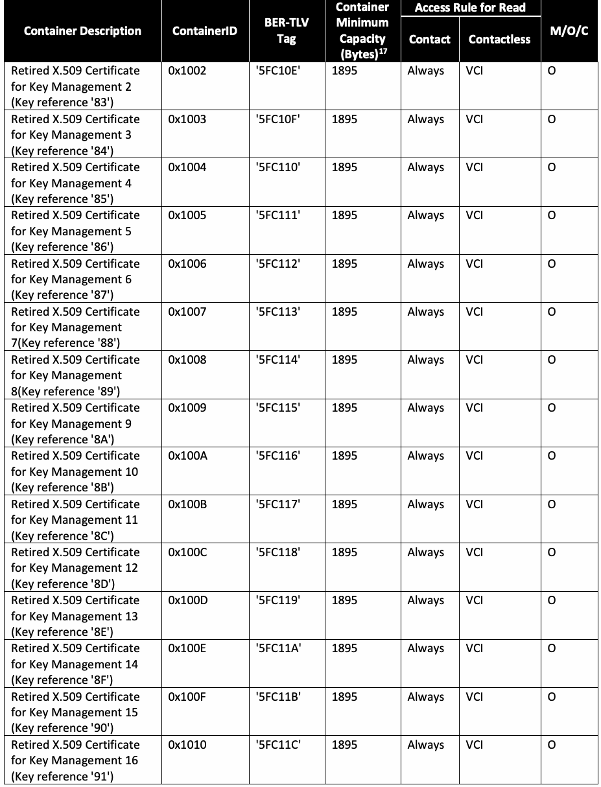
| コンテナの説明 | ContainerID | BER-TLV Tag | Container | 読取りアクセス規則 | M/O/C | |
| 最小 | 接触型 | 非接触型 | ||||
| 容量 | ||||||
| （バイト）17 | ||||||
| Retired X.509 Certificate for Key Management 2 (Key reference '83') | 0x1002 | '5FC10E' | 1895 | 常時 | VCI | O |
| Retired X.509 Certificate for Key Management 3 (Key reference '84') | 0x1003 | '5FC10F' | 1895 | 常時 | VCI | O |
| Retired X.509 Certificate for Key Management 4 (Key reference '85') | 0x1004 | '5FC110' | 1895 | 常時 | VCI | O |
| Retired X.509 Certificate for Key Management 5 (Key reference '86') | 0x1005 | '5FC111' | 1895 | 常時 | VCI | O |
| Retired X.509 Certificate for Key Management 6 (Key reference '87') | 0x1006 | '5FC112' | 1895 | 常時 | VCI | O |
| Retired X.509 Certificate for Key Management 7(Key reference '88') | 0x1007 | '5FC113' | 1895 | 常時 | VCI | O |
| Retired X.509 Certificate for Key Management 8(Key reference '89') | 0x1008 | '5FC114' | 1895 | 常時 | VCI | O |
| Retired X.509 Certificate for Key Management 9 (Key reference '8A') | 0x1009 | '5FC115' | 1895 | 常時 | VCI | O |
| Retired X.509 Certificate for Key Management 10 (Key reference '8B') | 0x100A | '5FC116' | 1895 | 常時 | VCI | O |
| Retired X.509 Certificate for Key Management 11 (Key reference '8C') | 0x100B | '5FC117' | 1895 | 常時 | VCI | O |
| Retired X.509 Certificate for Key Management 12 (Key reference '8D') | 0x100C | '5FC118' | 1895 | 常時 | VCI | O |
| Retired X.509 Certificate for Key Management 13 (Key reference '8E') | 0x100D | '5FC119' | 1895 | 常時 | VCI | O |
| Retired X.509 Certificate for Key Management 14 (Key reference '8F') | 0x100E | '5FC11A' | 1895 | 常時 | VCI | O |
| Retired X.509 Certificate for Key Management 15 (Key reference '90') | 0x100F | '5FC11B' | 1895 | 常時 | VCI | O |
| Retired X.509 Certificate for Key Management 16 (Key reference '91') | 0x1010 | '5FC11C' | 1895 | 常時 | VCI | O |
原本PDFの抜粋画像
| Container Description | ContainerID | BER-TLV Tag | Container Minimum Capacity (Bytes)17 | Access Rule for Read | M/O/C | |
| Contact | Contactless | |||||
| Retired X.509 Certificate for Key Management 17 (Key reference '92') | 0x1011 | '5FC11D' | 1895 | Always | VCI | O |
| Retired X.509 Certificate for Key Management 18 (Key reference '93') | 0x1012 | '5FC11E' | 1895 | Always | VCI | O |
| Retired X.509 Certificate for Key Management 19 (Key reference '94') | 0x1013 | '5FC11F' | 1895 | Always | VCI | O |
| Retired X.509 Certificate for Key Management 20 (Key reference '95') | 0x1014 | '5FC120' | 1895 | Always | VCI | O |
| Cardholder Iris Images | 0x1015 | '5FC121' | 7106 | PIN | VCI and PIN | O |
| Biometric Information Templates Group Template | 0x1016 | '7F61' | 65 | Always | Always | O |
| Secure Messaging Certificate Signer | 0x1017 | '5FC122' | 2471 | Always | Always | O |
| Pairing Code Reference Data Container | 0x1018 | '5FC123' | 12 | PIN or OCC | VCI and (PIN or OCC) | O |
原本PDFの抜粋画像
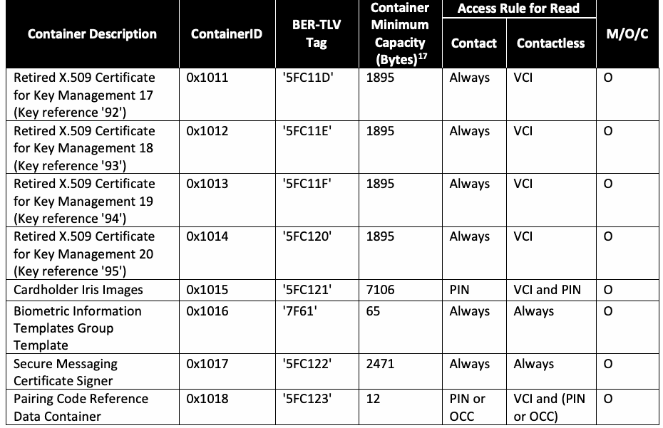
| コンテナの説明 | ContainerID | BER-TLV Tag | コンテナ最小容量（バイト）17 | 読取りアクセス規則 | M/O/C | |
| 接触型 | 非接触型 | |||||
| 廃止済み鍵管理用X.509証明書17（鍵参照'92'） | 0x1011 | '5FC11D' | 1895 | 常時 | VCI | O |
| 廃止済み鍵管理用X.509証明書18（鍵参照'93'） | 0x1012 | '5FC11E' | 1895 | 常時 | VCI | O |
| 廃止済み鍵管理用X.509証明書19（鍵参照'94'） | 0x1013 | '5FC11F' | 1895 | 常時 | VCI | O |
| 廃止済み鍵管理用X.509証明書20（鍵参照'95'） | 0x1014 | '5FC120' | 1895 | 常時 | VCI | O |
| カード保有者の虹彩画像 | 0x1015 | '5FC121' | 7106 | PIN | VCIおよびPIN | O |
| 生体情報テンプレートグループテンプレート | 0x1016 | '7F61' | 65 | 常時 | 常時 | O |
| セキュアメッセージング証明書署名者 | 0x1017 | '5FC122' | 2471 | 常時 | 常時 | O |
| ペアリングコード参照データコンテナ | 0x1018 | '5FC123' | 12 | PINまたはOCC | VCIおよび（PINまたはOCC） | O |
原本PDFの抜粋画像

Note that all data elements of the following data objects are mandatory unless specified as optional or conditional. Also note that in all tables that follow, the values in the “Max. Bytes” columns denote the lengths of the value (V) fields of BER-TLV elements.
注：以下のデータオブジェクトのデータ要素は、任意または条件付きと指定されていない限り、すべて必須である。また、以下のすべての表で「最大バイト数」列の値は、BER-TLV要素の値（V）フィールドの長さを示す。
未レビュー訳Table 9. Card Capability Container
表9. カード能力コンテナ
未レビュー訳| Card Capability Container | 0xDB00 | ||
| Data Element (TLV) | Tag | Type | Max. Bytes |
| Card Identifier | 0xF0 | Fixed | 0 or 21 |
| Capability Container version number | 0xF1 | Fixed | 0 or 1 |
| Capability Grammar version number | 0xF2 | Fixed | 0 or 1 |
| Applications CardURL | 0xF3 | Variable | 128 |
| PKCS#15 | 0xF4 | Fixed | 0 or 1 |
| Registered Data Model number | 0xF5 | Fixed | 1 |
| Access Control Rule Table | 0xF6 | Fixed | 0 or 17 |
| Card APDUs | 0xF7 | Fixed | 0 |
| Redirection Tag | 0xFA | Fixed | 0 |
| Capability Tuples (CTs) | 0xFB | Fixed | 0 |
| Status Tuples (STs) | 0xFC | Fixed | 0 |
| Next CCC | 0xFD | Fixed | 0 |
| Error Detection Code | 0xFE | LRC | 0 |
原本PDFの抜粋画像
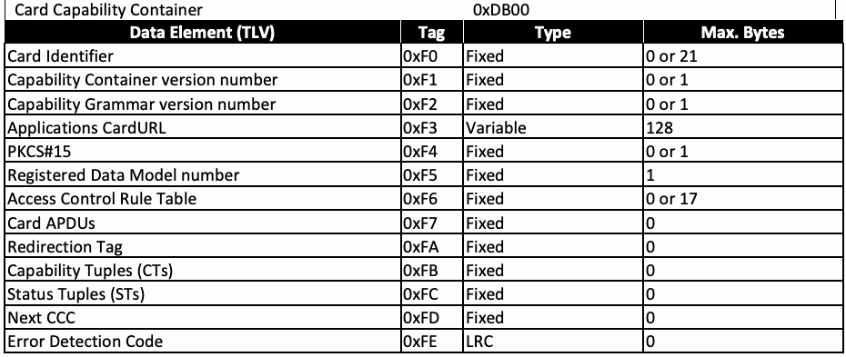
| カード能力コンテナ | 0xDB00 | ||
| データ要素（TLV） | タグ | 型 | 最大バイト数 |
| カード識別子 | 0xF0 | 固定 | 0 or 21 |
| 能力コンテナのバージョン番号 | 0xF1 | 固定 | 0 or 1 |
| 能力文法のバージョン番号 | 0xF2 | 固定 | 0 or 1 |
| アプリケーションCardURL | 0xF3 | 可変 | 128 |
| PKCS#15 | 0xF4 | 固定 | 0 or 1 |
| 登録データモデル番号 | 0xF5 | 固定 | 1 |
| アクセス制御規則テーブル | 0xF6 | 固定 | 0 or 17 |
| カードAPDU | 0xF7 | 固定 | 0 |
| リダイレクトタグ | 0xFA | 固定 | 0 |
| 能力タプル（CT） | 0xFB | 固定 | 0 |
| ステータスタプル（ST） | 0xFC | 固定 | 0 |
| 次のCCC | 0xFD | 固定 | 0 |
| エラー検出コード | 0xFE | LRC | 0 |
Table 10. Card Holder Unique Identifier (CHUID)
表10. カード保有者一意識別子（CHUID）
未レビュー訳| CHUID | 0x3000 | ||
| Data Element (TLV) | Tag | Type | Max. Bytes |
| FASC-N | 0x30 | Fixed | 25 |
| GUID | 0x34 | Fixed | 16 |
| Expiration Date | 0x35 | Date (YYYYMMDD) | 8 |
| Cardholder UUID (Optional) | 0x36 | Fixed | 16 |
| ssuer Asymmetric Signature | 0x3E | Variable | 281618 |
| Error Detection Code | 0xFE | LRC | 0 |
原本PDFの抜粋画像
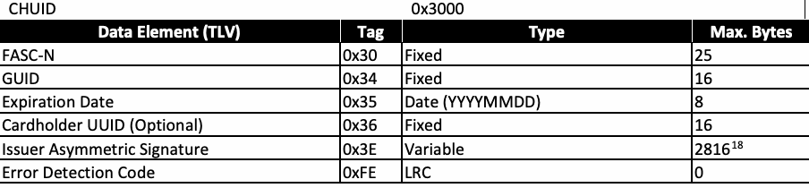
| CHUID | 0x3000 | ||
| データ要素（TLV） | タグ | 型 | 最大バイト数 |
| FASC-N | 0x30 | 固定 | 25 |
| GUID | 0x34 | 固定 | 16 |
| 有効期限 | 0x35 | 日付（YYYYMMDD） | 8 |
| カード保有者UUID（任意） | 0x36 | 固定 | 16 |
| 発行者の非対称署名 | 0x3E | 可変 | 281618 |
| エラー検出コード | 0xFE | LRC | 0 |
Note that the Buffer Length, Organizational Identifier, and DUNS data elements have been eliminated in this version of SP 800-73.
注：Buffer Length、Organizational Identifier、およびDUNSデータ要素は、この版のSP 800-73では削除されている。
未レビュー訳The Error Detection Code is the same element as the Longitudinal Redundancy Code (LRC) in [TIG SCEPACS]. It is present in the CHUID because TIG SCEPACS makes the LRC mandatory. However, this document makes no use of the Error Detection Code, and, therefore the length of the TLV value is set to 0 bytes (i.e., no value will be supplied).
エラー検出コードは、[TIG SCEPACS]のLongitudinal Redundancy Code（LRC）と同じ要素である。[TIG SCEPACS]がLRCを必須としているため、CHUIDに含まれる。ただし、本書ではエラー検出コードを使用しないため、TLV値の長さは0バイトに設定される（すなわち、値は提供されない）。
未レビュー訳Table 11. X.509 Certificate for PIV Authentication
表11. PIV認証用X.509証明書
未レビュー訳| X.509 Certificate for PIV Authentication | 0x0101 | ||
| Data Element (TLV) | Tag | Type | Max. Bytes |
| Certificate | 0x70 | Variable | 185619 |
| CertInfo | 0x71 | Fixed | 1 |
| Error Detection Code | 0xFE | LRC | 0 |
原本PDFの抜粋画像
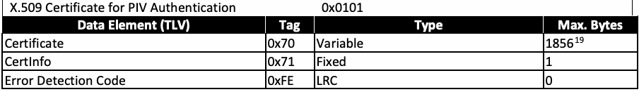
| PIV認証用X.509証明書 | 0x0101 | ||
| データ要素（TLV） | タグ | 型 | 最大バイト数 |
| 証明書 | 0x70 | 可変 | 185619 |
| CertInfo | 0x71 | 固定 | 1 |
| エラー検出コード | 0xFE | LRC | 0 |
Note that the MSCUID data element has been eliminated in this version.
注：MSCUIDデータ要素は、この版では削除されている。
未レビュー訳Table 12. Cardholder fingerprints
表12. カード保有者の指紋
未レビュー訳| Cardholder Fingerprints | 0x6010 | ||
| Data Element (TLV) | Tag | Type | Max. Bytes |
| Fingerprint I & II | 0xBC | Variable | 400020 |
| Error Detection Code | 0xFE | LRC | 0 |
原本PDFの抜粋画像
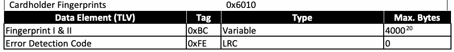
| カード保有者の指紋 | 0x6010 | ||
| データ要素（TLV） | タグ | 型 | 最大バイト数 |
| 指紋IおよびII | 0xBC | 可変 | 400020 |
| エラー検出コード | 0xFE | LRC | 0 |
Table 13. Security Object
表13. セキュリティオブジェクト
未レビュー訳| 0x9000 | |
| タグ | 型 |
| xBA V | ariable 3 |
| xBB V | ariable 1 |
| xFE L | RC 0 |
Security Object
セキュリティオブジェクト
未レビュー訳Data Element (TLV)
データ要素（TLV）
未レビュー訳Max. Bytes
最大バイト数
未レビュー訳Mapping of DG to ContainerID
DGとContainerIDの対応付け
未レビュー訳30
未レビュー訳Security Object
セキュリティオブジェクト
未レビュー訳1298
1298
未レビュー訳Error Detection Code
エラー検出コード
未レビュー訳Table 14. Cardholder facial image
表14. カード保有者の顔画像
未レビュー訳| Cardholder Facial Image | 0x6030 | ||
| Data Element (TLV) | Tag | Type | Max. Bytes |
| Facial Image | 0xBC | Variable | 1270421 |
| Error Detection Code | 0xFE | LRC | 0 |
原本PDFの抜粋画像
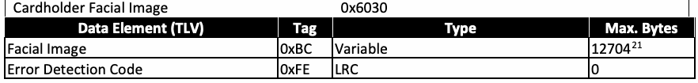
| カード保有者の顔画像 | 0x6030 | ||
| データ要素（TLV） | タグ | 型 | 最大バイト数 |
| 顔画像 | 0xBC | 可変 | 1270421 |
| エラー検出コード | 0xFE | LRC | 0 |
Table 15. Printed information
表15. 印字情報
未レビュー訳| Printed Information | 0x3001 | ||
| Data Element (TLV) | Tag | Type | Max. Bytes |
| Name | 0x01 | Text (ASCII) | 125 |
| Employee Affiliation | 0x02 | Text (ASCII) | 20 |
| Expiration date | 0x04 | Date (YYYYMMMDD) | 9 |
| Agency Card Serial Number | 0x05 | Text (ASCII) | 20 |
| Issuer Identification | 0x06 | Fixed Text (ASCII) | 15 |
| Organization Affiliation (Line 1) (Optional) | 0x07 | Text (ASCII) | 20 |
| Organization Affiliation (Line 2) (Optional) | 0x08 | Text (ASCII) | 20 |
| Error Detection Code | 0xFE | LRC | 0 |
原本PDFの抜粋画像
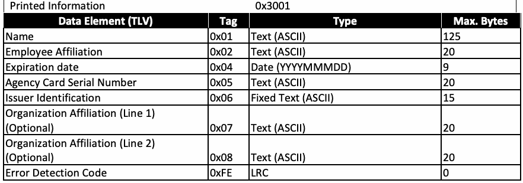
| 印字情報 | 0x3001 | ||
| データ要素（TLV） | タグ | 型 | 最大バイト数 |
| 氏名 | 0x01 | テキスト（ASCII） | 125 |
| 職員所属 | 0x02 | テキスト（ASCII） | 20 |
| 有効期限 | 0x04 | 日付（YYYYMMMDD） | 9 |
| 機関カードシリアル番号 | 0x05 | テキスト（ASCII） | 20 |
| 発行者識別情報 | 0x06 | 固定長テキスト（ASCII） | 15 |
| 組織所属（1行目）（任意） | 0x07 | テキスト（ASCII） | 20 |
| 組織所属（2行目）（任意） | 0x08 | テキスト（ASCII） | 20 |
| エラー検出コード | 0xFE | LRC | 0 |
Agencies SHOULD use tags 0x02, 0x07 and 0x08 to successfully match the printed information for verification on Zone 8F (Employee Affiliation) and Zone 10F (Agency, Department, or Organization) on the face of the card with the printed information stored electronically on the card.
機関は、カード表面のZone 8F（Employee Affiliation）およびZone 10F（Agency, Department, or Organization）に印字された情報と、カード上に電子的に格納された印字情報との照合を正常に行えるよう、タグ0x02、0x07、および0x08を使用すべきである。 (SHOULD)
未レビュー訳Table 16. X.509 Certificate for Digital Signature
表16. デジタル署名用X.509証明書
未レビュー訳| X.509 Certificate for Digital Signature | 0x0100 | ||
| Data Element (TLV) | Tag | Type | Max. Bytes |
| Certificate | 0x70 | Variable | 185622 |
| CertInfo | 0x71 | Fixed | 1 |
| Error Detection Code | 0xFE | LRC | 0 |
原本PDFの抜粋画像
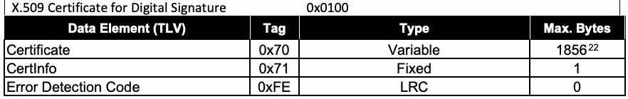
| デジタル署名用X.509証明書 | 0x0100 | ||
| データ要素（TLV） | タグ | 型 | 最大バイト数 |
| 証明書 | 0x70 | 可変 | 185622 |
| CertInfo | 0x71 | 固定 | 1 |
| エラー検出コード | 0xFE | LRC | 0 |
Note that the MSCUID data element has been eliminated in this version.
注：MSCUIDデータ要素はこの版で削除されている。
未レビュー訳Table 17. X.509 Certificate for Key Management
表17. 鍵管理用X.509証明書
未レビュー訳| X.509 Certificate for Key Management | 0x0102 | ||
| Data Element (TLV) | Tag | Type | Max. Bytes |
| Certificate | 0x70 | Variable | 185622 |
原本PDFの抜粋画像
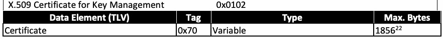
| 鍵管理用X.509証明書 | 0x0102 | ||
| データ要素（TLV） | タグ | 型 | 最大バイト数 |
| 証明書 | 0x70 | 可変 | 185622 |
| X.509 Certificate for Key Management | 0x0102 | ||
| Data Element (TLV) | Tag | Type | Max. Bytes |
| CertInfo | 0x71 | Fixed | 1 |
| Error Detection Code | 0xFE | LRC | 0 |
原本PDFの抜粋画像
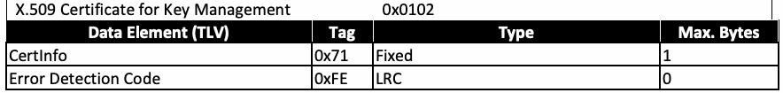
| 鍵管理用X.509証明書 | 0x0102 | ||
| データ要素（TLV） | タグ | 型 | 最大バイト数 |
| CertInfo | 0x71 | 固定 | 1 |
| エラー検出コード | 0xFE | LRC | 0 |
Note that the MSCUID data element has been eliminated in this version.
注：MSCUIDデータ要素はこの版で削除されている。
未レビュー訳Table 18. X.509 Certificate for Card Authentication
表18. カード認証用X.509証明書
未レビュー訳| X.509 Certificate for Card Authentication | 0x0500 | ||
| Data Element (TLV) | Tag | Type | Max. Bytes |
| Certificate | 0x70 | Variable | 185623 |
| CertInfo | 0x71 | Fixed | 1 |
| Error Detection Code | 0xFE | LRC | 0 |
原本PDFの抜粋画像
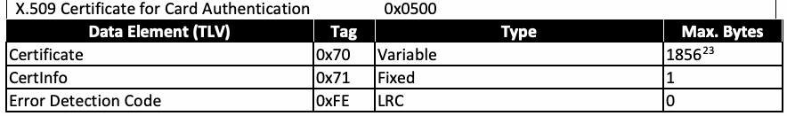
| カード認証用X.509証明書 | 0x0500 | ||
| データ要素（TLV） | タグ | 型 | 最大バイト数 |
| 証明書 | 0x70 | 可変 | 185623 |
| CertInfo | 0x71 | 固定 | 1 |
| エラー検出コード | 0xFE | LRC | 0 |
Note that the MSCUID data element has been eliminated in this version of SP 800-73.
注：MSCUIDデータ要素はこの版のSP 800-73で削除されている。
未レビュー訳Table 19. Discovery Object
表19. Discovery Object
未レビュー訳| Discovery Object (Tag '7E') | 0x6050 | ||
| Data El Data Element (TLV) | Tag | Type | Max. Bytes |
| PIV Card Application AID | 0x4F | Fixed | 12 |
| PIN Usage Policy | 0x5F2F | Fixed | 2 |
原本PDFの抜粋画像
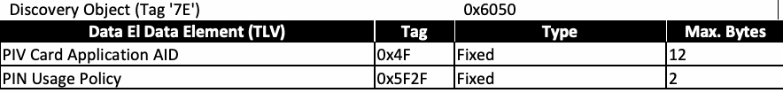
| Discovery Object（タグ'7E'） | 0x6050 | ||
| データ要素（TLV） | タグ | 型 | 最大バイト数 |
| PIVカードアプリケーションAID | 0x4F | 固定 | 12 |
| PIN Usage Policy | 0x5F2F | 固定 | 2 |
Table 20. Key History Object
表20. Key History Object
未レビュー訳| Key History Object | 0x6060 | ||
| Data Element (TLV) | Tag | Type | Max. Bytes |
| keysWithOnCardCerts | 0xC1 | Fixed | 1 |
| keysWithOffCardCerts | 0xC2 | Fixed | 124 |
| offCardCertURL (Conditional)25 | 0xF3 | Variable | 118 |
| Error Detection Code | 0xFE | LRC | 0 |
原本PDFの抜粋画像
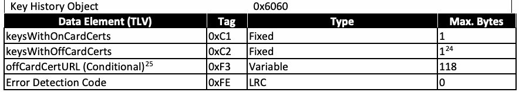
| Key History Object | 0x6060 | ||
| データ要素（TLV） | タグ | 型 | 最大バイト数 |
| keysWithOnCardCerts | 0xC1 | 固定 | 1 |
| keysWithOffCardCerts | 0xC2 | 固定 | 124 |
| offCardCertURL（条件付き）25 | 0xF3 | 可変 | 118 |
| エラー検出コード | 0xFE | LRC | 0 |
Table 21. Retired X.509 Certificate for Key Management 1
表21. 廃止済み鍵管理用X.509証明書1
未レビュー訳| Retired X.509 Certificate for Key Management 1 | 0x1001 | ||
| Data Element (TLV) | Tag | Type | Max. Bytes |
| Certificate | 0x70 | Variable | 185623 |
| CertInfo | 0x71 | Fixed | 1 |
| MSCUID (Optional) | 0x72 | Variable | 38 |
| Error Detection Code | 0xFE | LRC | 0 |
原本PDFの抜粋画像
| 廃止済み鍵管理用X.509証明書1 | 0x1001 | ||
| データ要素（TLV） | タグ | 型 | 最大バイト数 |
| 証明書 | 0x70 | 可変 | 185623 |
| CertInfo | 0x71 | 固定 | 1 |
| MSCUID（任意） | 0x72 | 可変 | 38 |
| エラー検出コード | 0xFE | LRC | 0 |
Note that the optional MSCUID data element was deprecated in a previous version and eliminated in this version of SP 800-73. However, historic retired key management certificates
注：任意のMSCUIDデータ要素は以前の版で非推奨となり、この版のSP 800-73で削除された。ただし、過去の廃止済み鍵管理証明書
未レビュー訳MAY still include the MSCUID element, so it is retained as an optional data element above. This applies to all of the retired key management key objects represented in Table 21 - Table 40.
MSCUIDは引き続き要素として含めてもよい (MAY) ため、上記では任意のデータ要素として保持されている。これは、表21～表40に示す廃止済み鍵管理鍵オブジェクトすべてに適用される。
未レビュー訳Table 22. Retired X.509 Certificate for Key Management 2
表22. 廃止済み鍵管理用X.509証明書2
未レビュー訳| Retired X.509 Certificate for Key Management 2 | 0x1002 | ||
| Data Element (TLV) | Tag | Type | Max. Bytes |
| Certificate | 0x70 | Variable | 185626 |
| CertInfo | 0x71 | Fixed | 1 |
| MSCUID (Optional) | 0x72 | Variable | 38 |
| Error Detection Code | 0xFE | LRC | 0 |
原本PDFの抜粋画像
| 廃止済み鍵管理用X.509証明書2 | 0x1002 | ||
| データ要素（TLV） | タグ | 型 | 最大バイト数 |
| 証明書 | 0x70 | 可変 | 185626 |
| CertInfo | 0x71 | 固定 | 1 |
| MSCUID（任意） | 0x72 | 可変 | 38 |
| エラー検出コード | 0xFE | LRC | 0 |
Table 23. Retired X.509 Certificate for Key Management 3
表23. 廃止済み鍵管理用X.509証明書3
未レビュー訳| Retired X.509 Certificate for Key Management 3 | 0x1003 | ||
| Data Element (TLV) | Tag | Type | Max. Bytes |
| Certificate | 0x70 | Variable | 185626 |
| CertInfo | 0x71 | Fixed | 1 |
| MSCUID (Optional) | 0x72 | Variable | 38 |
| Error Detection Code | 0xFE | LRC | 0 |
原本PDFの抜粋画像
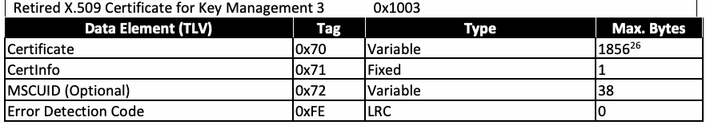
| 廃止済み鍵管理用X.509証明書3 | 0x1003 | ||
| データ要素（TLV） | タグ | 型 | 最大バイト数 |
| 証明書 | 0x70 | 可変 | 185626 |
| CertInfo | 0x71 | 固定 | 1 |
| MSCUID（任意） | 0x72 | 可変 | 38 |
| エラー検出コード | 0xFE | LRC | 0 |
Table 24. Retired X.509 Certificate for Key Management 4
表24. 廃止済み鍵管理用X.509証明書4
未レビュー訳| Retired X.509 Certificate for Key Management 4 | 0x1004 | ||
| Data Element (TLV) | Tag | Type | Max. Bytes |
| Certificate | 0x70 | Variable | 185626 |
| CertInfo | 0x71 | Fixed | 1 |
| MSCUID (Optional) | 0x72 | Variable | 38 |
| Error Detection Code | 0xFE | LRC | 0 |
原本PDFの抜粋画像
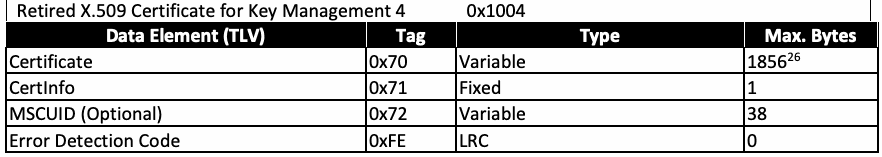
| 廃止済み鍵管理用X.509証明書4 | 0x1004 | ||
| データ要素（TLV） | タグ | 型 | 最大バイト数 |
| 証明書 | 0x70 | 可変 | 185626 |
| CertInfo | 0x71 | 固定 | 1 |
| MSCUID（任意） | 0x72 | 可変 | 38 |
| エラー検出コード | 0xFE | LRC | 0 |
Table 25. Retired X.509 Certificate for Key Management 5
表25. 廃止済み鍵管理用X.509証明書5
未レビュー訳| Retired X.509 Certificate for Key Management 5 | 0x1005 | ||
| Data Element (TLV) | Tag | Type | Max. Bytes |
| Certificate | 0x70 | Variable | 185626 |
| CertInfo | 0x71 | Fixed | 1 |
| MSCUID (Optional) | 0x72 | Variable | 38 |
| Error Detection Code | 0xFE | LRC | 0 |
原本PDFの抜粋画像
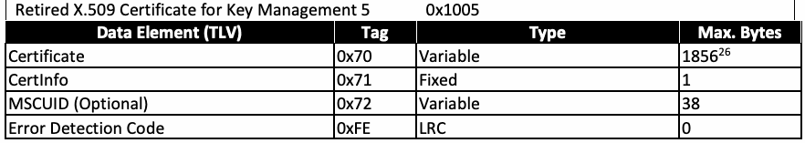
| 廃止済み鍵管理用X.509証明書5 | 0x1005 | ||
| データ要素（TLV） | タグ | 型 | 最大バイト数 |
| 証明書 | 0x70 | 可変 | 185626 |
| CertInfo | 0x71 | 固定 | 1 |
| MSCUID（任意） | 0x72 | 可変 | 38 |
| エラー検出コード | 0xFE | LRC | 0 |
Table 26. Retired X.509 Certificate for Key Management 6
表26. 廃止済み鍵管理用X.509証明書6
未レビュー訳| Retired X.509 Certificate for Key Management 6 | 0x1006 | ||
| Data Element (TLV) | Tag | Type | Max. Bytes |
| Certificate | 0x70 | Variable | 185626 |
| CertInfo | 0x71 | Fixed | 1 |
| MSCUID (Optional) | 0x72 | Variable | 38 |
| Error Detection Code | 0xFE | LRC | 0 |
原本PDFの抜粋画像
| 廃止済み鍵管理用X.509証明書6 | 0x1006 | ||
| データ要素（TLV） | タグ | 型 | 最大バイト数 |
| 証明書 | 0x70 | 可変 | 185626 |
| CertInfo | 0x71 | 固定 | 1 |
| MSCUID（任意） | 0x72 | 可変 | 38 |
| エラー検出コード | 0xFE | LRC | 0 |
Table 27. Retired X.509 Certificate for Key Management 7
表27. 廃止済み鍵管理用X.509証明書7
未レビュー訳| Retired X.509 Certificate for Key Management 7 | 0x1007 | ||
| Data Element (TLV) | Tag | Type | Max. Bytes |
| Certificate | 0x70 | Variable | 185626 |
| CertInfo | 0x71 | Fixed | 1 |
| MSCUID (Optional) | 0x72 | Variable | 38 |
| Error Detection Code | 0xFE | LRC | 0 |
原本PDFの抜粋画像
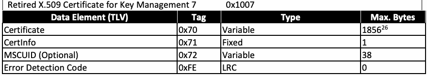
| 廃止済み鍵管理用X.509証明書7 | 0x1007 | ||
| データ要素（TLV） | タグ | 型 | 最大バイト数 |
| 証明書 | 0x70 | 可変 | 185626 |
| CertInfo | 0x71 | 固定 | 1 |
| MSCUID（任意） | 0x72 | 可変 | 38 |
| エラー検出コード | 0xFE | LRC | 0 |
Table 28. Retired X.509 Certificate for Key Management 8
表28. 廃止済み鍵管理用X.509証明書8
未レビュー訳| Retired X.509 Certificate for Key Management 8 | 0x1008 | ||
| Data Element (TLV) | Tag | Type | Max. Bytes |
| Certificate | 0x70 | Variable | 185627 |
| CertInfo | 0x71 | Fixed | 1 |
| MSCUID (Optional) | 0x72 | Variable | 38 |
| Error Detection Code | 0xFE | LRC | 0 |
原本PDFの抜粋画像
| 廃止済み鍵管理用X.509証明書8 | 0x1008 | ||
| データ要素（TLV） | タグ | 型 | 最大バイト数 |
| 証明書 | 0x70 | 可変 | 185627 |
| CertInfo | 0x71 | 固定 | 1 |
| MSCUID（任意） | 0x72 | 可変 | 38 |
| エラー検出コード | 0xFE | LRC | 0 |
Table 29. Retired X.509 Certificate for Key Management 9
表29. 廃止済み鍵管理用X.509証明書9
未レビュー訳| Retired X.509 Certificate for Key Management 9 | 0x1009 | ||
| Data Element (TLV) | Tag | Type | Max. Bytes |
| Certificate | 0x70 | Variable | 185627 |
| CertInfo | 0x71 | Fixed | 1 |
| MSCUID (Optional) | 0x72 | Variable | 38 |
| Error Detection Code | 0xFE | LRC | 0 |
原本PDFの抜粋画像
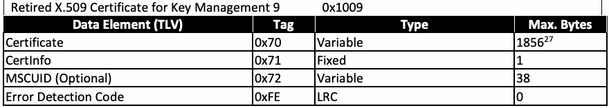
| 廃止済み鍵管理用X.509証明書9 | 0x1009 | ||
| データ要素（TLV） | タグ | 型 | 最大バイト数 |
| 証明書 | 0x70 | 可変 | 185627 |
| CertInfo | 0x71 | 固定 | 1 |
| MSCUID（任意） | 0x72 | 可変 | 38 |
| エラー検出コード | 0xFE | LRC | 0 |
Table 30. Retired X.509 Certificate for Key Management 10
表30. 廃止済み鍵管理用X.509証明書10
未レビュー訳| Retired X.509 Certificate for Key Management 10 | 0x100A | ||
| Data Element (TLV) | Tag | Type | Max. Bytes |
| Certificate | 0x70 | Variable | 185627 |
| CertInfo | 0x71 | Fixed | 1 |
| MSCUID (Optional) | 0x72 | Variable | 38 |
| Error Detection Code | 0xFE | LRC | 0 |
原本PDFの抜粋画像
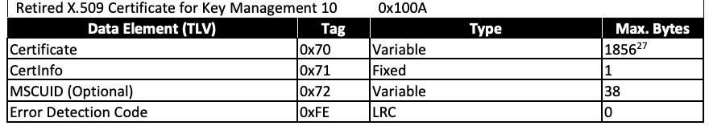
| 廃止済み鍵管理用X.509証明書10 | 0x100A | ||
| データ要素（TLV） | タグ | 型 | 最大バイト数 |
| 証明書 | 0x70 | 可変 | 185627 |
| CertInfo | 0x71 | 固定 | 1 |
| MSCUID（任意） | 0x72 | 可変 | 38 |
| エラー検出コード | 0xFE | LRC | 0 |
Table 31. Retired X.509 Certificate for Key Management 11
表31. 廃止済み鍵管理用X.509証明書11
未レビュー訳| Retired X.509 Certificate for Key Management 11 | 0x100B | ||
| Data Element (TLV) | Tag | Type | Max. Bytes |
| Certificate | 0x70 | Variable | 185627 |
| CertInfo | 0x71 | Fixed | 1 |
| MSCUID (Optional) | 0x72 | Variable | 38 |
| Error Detection Code | 0xFE | LRC | 0 |
原本PDFの抜粋画像
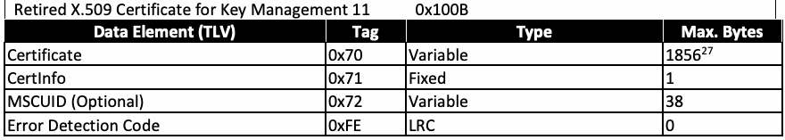
| 廃止済み鍵管理用X.509証明書11 | 0x100B | ||
| データ要素（TLV） | タグ | 型 | 最大バイト数 |
| 証明書 | 0x70 | 可変 | 185627 |
| CertInfo | 0x71 | 固定 | 1 |
| MSCUID（任意） | 0x72 | 可変 | 38 |
| エラー検出コード | 0xFE | LRC | 0 |
Table 32. Retired X.509 Certificate for Key Management 12
表32. 廃止済み鍵管理用X.509証明書12
未レビュー訳| Retired X.509 Certificate for Key Management 12 | 0x100C | ||
| Data Element (TLV) | Tag | Type | Max. Bytes |
| Certificate | 0x70 | Variable | 185627 |
原本PDFの抜粋画像
| 廃止済み鍵管理用X.509証明書12 | 0x100C | ||
| データ要素（TLV） | タグ | 型 | 最大バイト数 |
| 証明書 | 0x70 | 可変 | 185627 |
| Retired X.509 Certificate for Key Management 12 | 0x100C | ||
| Data Element (TLV) | Tag | Type | Max. Bytes |
| CertInfo | 0x71 | Fixed | 1 |
| MSCUID (Optional) | 0x72 | Variable | 38 |
| Error Detection Code | 0xFE | LRC | 0 |
原本PDFの抜粋画像
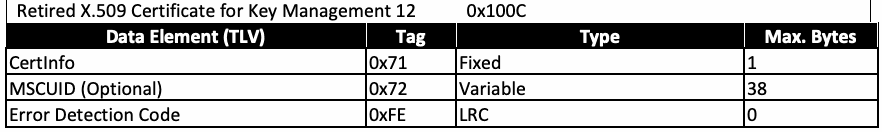
| 廃止済み鍵管理用X.509証明書12 | 0x100C | ||
| データ要素（TLV） | タグ | 型 | 最大バイト数 |
| CertInfo | 0x71 | 固定 | 1 |
| MSCUID（任意） | 0x72 | 可変 | 38 |
| エラー検出コード | 0xFE | LRC | 0 |
Table 33. Retired X.509 Certificate for Key Management 13
表33. 廃止済み鍵管理用X.509証明書13
未レビュー訳| Retired X.509 Certificate for Key Management 13 | 0x100D | ||
| Data Element (TLV) | Tag | Type | Max. Bytes |
| Certificate | 0x70 | Variable | 185628 |
| CertInfo | 0x71 | Fixed | 1 |
| MSCUID (Optional) | 0x72 | Variable | 38 |
| Error Detection Code | 0xFE | LRC | 0 |
原本PDFの抜粋画像
| 廃止済み鍵管理用X.509証明書13 | 0x100D | ||
| データ要素（TLV） | タグ | 型 | 最大バイト数 |
| 証明書 | 0x70 | 可変 | 185628 |
| CertInfo | 0x71 | 固定 | 1 |
| MSCUID（任意） | 0x72 | 可変 | 38 |
| エラー検出コード | 0xFE | LRC | 0 |
Table 34. Retired X.509 Certificate for Key Management 14
表34. 廃止済み鍵管理用X.509証明書14
未レビュー訳| Retired X.509 Certificate for Key Management 14 | 0x100E | ||
| Data Element (TLV) | Tag | Type | Max. Bytes |
| Certificate | 0x70 | Variable | 185628 |
| CertInfo | 0x71 | Fixed | 1 |
| MSCUID (Optional) | 0x72 | Variable | 38 |
| Error Detection Code | 0xFE | LRC | 0 |
原本PDFの抜粋画像
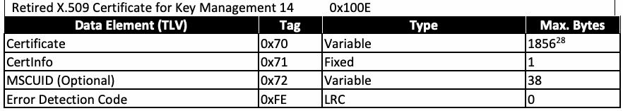
| 廃止済み鍵管理用X.509証明書14 | 0x100E | ||
| データ要素（TLV） | タグ | 型 | 最大バイト数 |
| 証明書 | 0x70 | 可変 | 185628 |
| CertInfo | 0x71 | 固定 | 1 |
| MSCUID（任意） | 0x72 | 可変 | 38 |
| エラー検出コード | 0xFE | LRC | 0 |
Table 35. Retired X.509 Certificate for Key Management 15
表35. 廃止済み鍵管理用X.509証明書15
未レビュー訳| Retired X.509 Certificate for Key Management 15 | 0x100F | ||
| Data Element (TLV) | Tag | Type | Max. Bytes |
| Certificate | 0x70 | Variable | 185628 |
| CertInfo | 0x71 | Fixed | 1 |
| MSCUID (Optional) | 0x72 | Variable | 38 |
| Error Detection Code | 0xFE | LRC | 0 |
原本PDFの抜粋画像
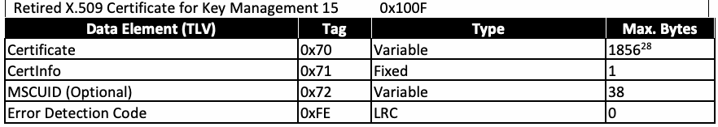
| 廃止済み鍵管理用X.509証明書15 | 0x100F | ||
| データ要素（TLV） | タグ | 型 | 最大バイト数 |
| 証明書 | 0x70 | 可変 | 185628 |
| CertInfo | 0x71 | 固定 | 1 |
| MSCUID（任意） | 0x72 | 可変 | 38 |
| エラー検出コード | 0xFE | LRC | 0 |
Table 36. Retired X.509 Certificate for Key Management 16
表36. 廃止済み鍵管理用X.509証明書16
未レビュー訳| Retired X.509 Certificate for Key Management 16 | 0x1010 | ||
| Data Element (TLV) | Tag | Type | Max. Bytes |
| Certificate | 0x70 | Variable | 185628 |
| CertInfo | 0x71 | Fixed | 1 |
| MSCUID (Optional) | 0x72 | Variable | 38 |
| Error Detection Code | 0xFE | LRC | 0 |
原本PDFの抜粋画像
| 廃止済み鍵管理用X.509証明書16 | 0x1010 | ||
| データ要素（TLV） | タグ | 型 | 最大バイト数 |
| 証明書 | 0x70 | 可変 | 185628 |
| CertInfo | 0x71 | 固定 | 1 |
| MSCUID（任意） | 0x72 | 可変 | 38 |
| エラー検出コード | 0xFE | LRC | 0 |
Table 37. Retired X.509 Certificate for Key Management 17
表37. 廃止済み鍵管理用X.509証明書17
未レビュー訳| Retired X.509 Certificate for Key Management 17 | 0x1011 | ||
| Data Element (TLV) | Tag | Type | Max. Bytes |
| Certificate | 0x70 | Variable | 185628 |
| CertInfo | 0x71 | Fixed | 1 |
| MSCUID (Optional) | 0x72 | Variable | 38 |
原本PDFの抜粋画像
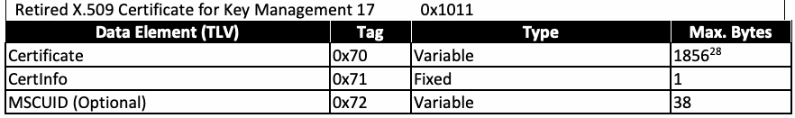
| 廃止済み鍵管理用X.509証明書17 | 0x1011 | ||
| データ要素（TLV） | タグ | 型 | 最大バイト数 |
| 証明書 | 0x70 | 可変 | 185628 |
| CertInfo | 0x71 | 固定 | 1 |
| MSCUID（任意） | 0x72 | 可変 | 38 |
| Retired X.509 Certificate for Key Management 17 | 0x1011 | ||
| Data Element (TLV) | Tag | Type | Max. Bytes |
| Error Detection Code | 0xFE | LRC | 0 |
原本PDFの抜粋画像
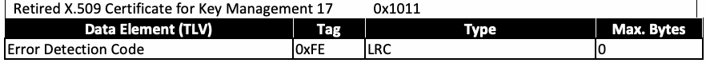
| 廃止済み鍵管理用X.509証明書17 | 0x1011 | ||
| データ要素（TLV） | タグ | 型 | 最大バイト数 |
| エラー検出コード | 0xFE | LRC | 0 |
Table 38. Retired X.509 Certificate for Key Management 18
表38. 廃止済み鍵管理用X.509証明書18
未レビュー訳| Retired X.509 Certificate for Key Management 18 | 0x1012 | ||
| Data Element (TLV) | Tag | Type | Max. Bytes |
| Certificate | 0x70 | Variable | 185628 |
| CertInfo | 0x71 | Fixed | 1 |
| MSCUID (Optional) | 0x72 | Variable | 38 |
| Error Detection Code | 0xFE | LRC | 0 |
原本PDFの抜粋画像
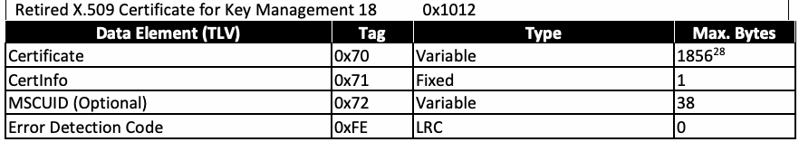
| 廃止済み鍵管理用X.509証明書18 | 0x1012 | ||
| データ要素（TLV） | タグ | 型 | 最大バイト数 |
| 証明書 | 0x70 | 可変 | 185628 |
| CertInfo | 0x71 | 固定 | 1 |
| MSCUID（任意） | 0x72 | 可変 | 38 |
| エラー検出コード | 0xFE | LRC | 0 |
Table 39. Retired X.509 Certificate for Key Management 19
表39. 廃止済み鍵管理用X.509証明書19
未レビュー訳| Retired X.509 Certificate for Key Management 19 | 0x1013 | ||
| Data Element (TLV) | Tag | Type | Max. Bytes |
| Certificate | 0x70 | Variable | 1856Error! Bookmark not defined. |
| CertInfo | 0x71 | Fixed | 1 |
| MSCUID (Optional) | 0x72 | Variable | 38 |
| Error Detection Code | 0xFE | LRC | 0 |
原本PDFの抜粋画像
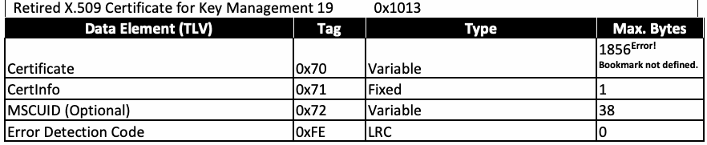
| Retired X.509 Certificate for Key Management 19 | 0x1013 | ||
| データ要素（TLV） | タグ | 型 | 最大バイト数 |
| Certificate | 0x70 | 可変 | 1856Error! Bookmark not defined. |
| CertInfo | 0x71 | 固定 | 1 |
| MSCUID (Optional) | 0x72 | 可変 | 38 |
| エラー検出コード | 0xFE | LRC | 0 |
Table 40. Retired X.509 Certificate for Key Management 20
表40. 廃止済み鍵管理用X.509証明書20
未レビュー訳| Retired X.509 Certificate for Key Management 20 | 0x1014 | ||
| Data Element (TLV) | Tag | Type | Max. Bytes |
| Certificate | 0x70 | Variable | 1856Error! Bookmark not defined. |
| CertInfo | 0x71 | Fixed | 1 |
| MSCUID (Optional) | 0x72 | Variable | 38 |
| Error Detection Code | 0xFE | LRC | 0 |
原本PDFの抜粋画像
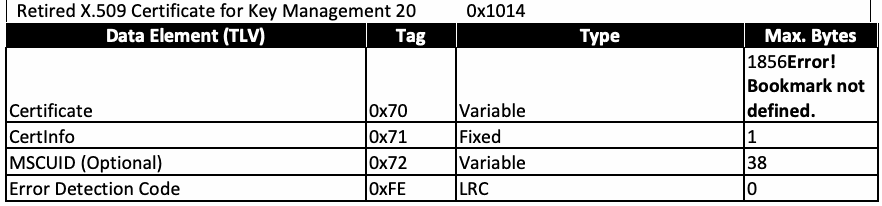
| 廃止済み鍵管理用X.509証明書20 | 0x1014 | ||
| データ要素（TLV） | タグ | 型 | 最大バイト数 |
| Certificate | 0x70 | 可変 | 1856Error! Bookmark not defined. |
| CertInfo | 0x71 | 固定 | 1 |
| MSCUID (Optional) | 0x72 | 可変 | 38 |
| エラー検出コード | 0xFE | LRC | 0 |
The CertInfo byte in the certificate data objects identified in this appendix SHALL be encoded as follows:
証明書データオブジェクトのCertInfoバイトは、以下のとおり符号化しなければならない。 (SHALL)
未レビュー訳b8 b7 b6 b5 b4 b3
b8 b7 b6 b5 b4 b3
未レビュー訳b2
未レビュー訳b1
未レビュー訳| RFU8 | RFU7 | RFU6 | RFU5 | RFU4 | IsX509 | CompressionTypeLsb | CompressionTypeMsb |
CompressionTypeMsb SHALL be 0 if the certificate is encoded in uncompressed form and 1 if the certificate is encoded using GZIP compression.29 CompressionTypeLsb and IsX509 SHALL be set to 0 for PIV Card Applications. Thus, for a certificate encoded in uncompressed form, CertInfo SHALL be 0x00. For a certificate encoded using GZIP compression, CertInfo SHALL be 0x01.
CompressionTypeMsbは、証明書が非圧縮形式で符号化されている場合は0、GZIP圧縮を用いて符号化されている場合は1でなければならない。29 PIVカードアプリケーションでは、CompressionTypeLsbおよびIsX509を0に設定しなければならない。したがって、非圧縮形式で符号化された証明書の場合、CertInfoは0x00でなければならない。GZIP圧縮を用いて符号化された証明書の場合、CertInfoは0x01でなければならない。 (SHALL) (SHALL) (SHALL) (SHALL)
未レビュー訳Table 41. Cardholder iris images
表41. カード保有者の虹彩画像
未レビュー訳| Cardholder Iris Images | 0x1015 | ||
| Data Element (TLV) | Tag | Type | Max. Bytes |
| Images for Iris | 0xBC | Variable | 710030 |
| Error Detection Code | 0xFE | LRC | 0 |
原本PDFの抜粋画像
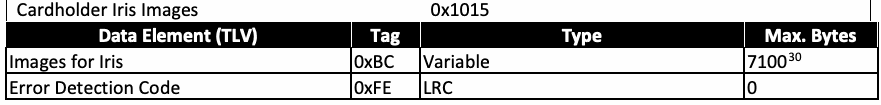
| カード保有者の虹彩画像 | 0x1015 | ||
| データ要素（TLV） | タグ | 型 | 最大バイト数 |
| 虹彩画像 | 0xBC | 可変 | 710030 |
| エラー検出コード | 0xFE | LRC | 0 |
Table 42. Biometric Information Templates Group template
表42. 生体情報テンプレートグループテンプレート
未レビュー訳| BIT Group template (Tag '7F61') | 0x1016 | ||
| Data Element (TLV) | Tag | Type | Max. Bytes |
| Number of Fingers | 0x02 | Fixed | 1 |
| BIT for first Finger | 0x7F60 | Variable | 28 |
| BIT for second Finger (Optional) | 0x7F60 | Variable | 28 |
原本PDFの抜粋画像
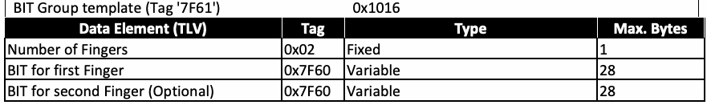
| BITグループテンプレート（タグ'7F61'） | 0x1016 | ||
| データ要素（TLV） | タグ | 型 | 最大バイト数 |
| 指の数 | 0x02 | 固定 | 1 |
| 第1指のBIT | 0x7F60 | 可変 | 28 |
| 第2指のBIT（任意） | 0x7F60 | 可変 | 28 |
Table 43. Secure Messaging Certificate Signer
表43. セキュアメッセージング証明書署名者
未レビュー訳| Secure Messaging Certificate Signer | 0x1017 | ||
| Data Element (TLV) | Tag | Type | Max. Bytes |
| X.509 Certificate for Content Signing | 0x70 | Variable | 1856 |
| CertInfo | 0x71 | Fixed | 1 |
| Intermediate CVC (Conditional)31 | 0x7F21 | Variable | 601 |
| Error Detection Code | 0xFE | LRC | 0 |
原本PDFの抜粋画像
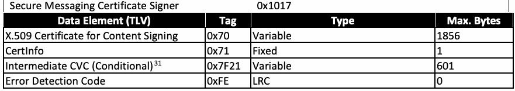
| セキュアメッセージング証明書署名者 | 0x1017 | ||
| データ要素（TLV） | タグ | 型 | 最大バイト数 |
| コンテンツ署名用X.509証明書 | 0x70 | 可変 | 1856 |
| CertInfo | 0x71 | 固定 | 1 |
| 中間CVC（条件付き）31 | 0x7F21 | 可変 | 601 |
| エラー検出コード | 0xFE | LRC | 0 |
The CertInfo byte in the Secure Messaging Certificate Signer data object SHALL provide information about the X.509 Certificate for Content Signing. The Intermediate CVC, if present, shall be stored in uncompressed form.
セキュアメッセージング証明書署名者データオブジェクトのCertInfoバイトは、コンテンツ署名用X.509証明書に関する情報を提供しなければならない。中間CVCが存在する場合は、非圧縮形式で格納しなければならない。 (SHALL)
未レビュー訳Table 44. Pairing Code Reference Data Container
表44. ペアリングコード参照データコンテナ
未レビュー訳| Pairing Code | 0x1018 | ||
| Data Element (TLV) | Tag | Type | Max. Bytes |
| Pairing Code | 0x99 | Fixed Text (ASCII) | 8 |
| Error Detection Code | 0xFE | LRC | 0 |
原本PDFの抜粋画像
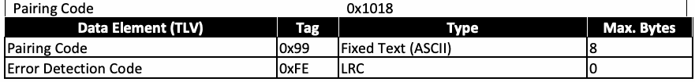
| ペアリングコード | 0x1018 | ||
| データ要素（TLV） | タグ | 型 | 最大バイト数 |
| ペアリングコード | 0x99 | 固定長テキスト（ASCII） | 8 |
| エラー検出コード | 0xFE | LRC | 0 |
Appendix B. PIV Authentication Mechanisms
付録B. PIV認証メカニズム
未レビュー訳PIV authentication mechanisms and application scenarios are described in this section to provide guidelines on the usage and behavior supported by the PIV Card. FIPS 201 describes PIV authentication as “the process of establishing confidence in the identity of the cardholder presenting a PIV Card” [FIPS201]. The fundamental goal of using the PIV Card is to authenticate the identity of the cardholder to a system or person that is controlling access to a protected resource or facility. This end goal MAY be reached by various combinations of one or more of the validation steps described below:
この節では、PIVカードがサポートする使用方法および動作に関するガイドラインを示すため、PIV認証メカニズムとアプリケーションシナリオを説明する。FIPS 201では、PIV認証を「PIVカードを提示するカード保有者の身元に対する信頼を確立するプロセス」と定義している[FIPS201]。PIVカードを使用する根本的な目的は、保護対象のリソースまたは施設へのアクセスを制御するシステムまたは個人に対して、カード保有者の身元を認証することである。この最終目的は、以下に示す検証ステップの1つ以上をさまざまに組み合わせて達成してもよい。 (MAY)
未レビュー訳•Card Validation (CardV) — This is the process of verifying that a PIV Card is authentic (i.e., not a counterfeit card). Card validation mechanisms include:
•カード検証（CardV）— PIVカードが真正であること（すなわち偽造カードでないこと）を検証するプロセスである。カード検証メカニズムには、以下が含まれる。
未レビュー訳Visual inspection of the tamper-proofing and tamper-resistant features of the o PIV Card, per Section 4.1.2 of FIPS 201
FIPS 201の4.1.2節に従い、PIVカードの改ざん防止および改ざん耐性機能を目視検査する。 o
未レビュー訳Use of cryptographic challenge-response schemes with symmetric keys o Use of asymmetric authentication schemes to validate private keys embedded o within the PIV Card
対称鍵を用いる暗号チャレンジ・レスポンス方式を使用する。 o PIVカード内に組み込まれた秘密鍵を検証するため、非対称認証方式を使用する。 o
未レビュー訳•Credential Validation (CredV) — This is the process of verifying the various types of credentials (e.g., visual credentials, biometrics, and certificates) held by the PIV Card. Credential validation mechanisms include:
•資格情報検証（CredV）— PIVカードが保持するさまざまな種類の資格情報（例：視覚的資格情報、生体情報、および証明書）を検証するプロセスである。資格情報検証メカニズムには、以下が含まれる。
未レビュー訳Verification of certificates on the PIV Card o Verification of signatures on the PIV biometrics and the CHUID o Checking the expiration date o Checking the revocation status of the credentials on the PIV Card o Visual inspection of PIV Card visual elements32 (e.g., the photo, the printed o name, rank).
PIVカード上の証明書を検証する。 o PIV生体情報およびCHUID上の署名を検証する。 o 有効期限を確認する。 o PIVカード上の資格情報の失効状態を確認する。 o PIVカードの視覚的要素32（例：写真、印字された氏名、階級）を目視検査する。 o
未レビュー訳•Cardholder Validation (HolderV) — This is the process of establishing that the PIV Card is in the possession of the individual to whom the card was issued. Classically, identity authentication is achieved using one or more of these factors: a) something you have, b) something you know, and c) something you are. The assurance of the authentication process increases with the number of factors used. In the case of the PIV Card, these three factors translate as follows: a) something you have — possession of a PIV Card, b) something you know — knowledge of the PIN, and c) something you are — the live fingerprint, facial image, or iris image samples provided by the cardholder. Thus, mechanisms for PIV cardholder validation include:
•カード保有者検証（HolderV）— PIVカードが、そのカードを発行された個人の所持下にあることを確立するプロセスである。従来、本人認証は次の要素の1つ以上を用いて行われる。a) 所有しているもの、b) 知っていること、c) 本人の身体的特徴である。使用する要素数が増えるほど、認証プロセスの保証度は高まる。PIVカードの場合、これら3要素は次のように対応する。a) 所有しているもの—PIVカードの所持、b) 知っていること—PINの知識、c) 本人の身体的特徴—カード保有者が提示するライブの指紋、顔画像、または虹彩画像サンプル。したがって、PIVカード保有者の検証メカニズムには以下が含まれる。
未レビュー訳Presentation of a PIV Card by the cardholder o
カード保有者がPIVカードを提示する。 o
未レビュー訳Matching the PIN provided with the PIN on the PIV Card o Matching the live fingerprint, facial image, or iris image samples provided by the o cardholder with the biometric information embedded within the PIV Card
提示されたPINとPIVカード上のPINを照合する。 o カード保有者が提示したライブの指紋、顔画像、または虹彩画像サンプルを、PIVカード内に埋め込まれた生体情報と照合する。 o
未レビュー訳Matching the visual characteristics of the cardholder with the photo on the PIV o Card33
カード保有者の視覚的特徴を、PIVカード上の写真と照合する。 o 33
未レビュー訳B.1. Authentication Mechanism Diagrams
B.1. 認証メカニズム図
未レビュー訳This section describes the activities and interactions involved in interoperable usage and authentication of the PIV Card. The authentication mechanisms represent how a relying party will authenticate the cardholder (regardless of which agency issued the card) in order to provide access to its systems or facilities. These activities and interactions are represented in functional authentication mechanism diagrams. These diagrams are not intended to provide syntactical commands or API function names.
この節では、PIVカードの相互運用可能な使用および認証に関わる活動と相互作用について説明する。認証メカニズムは、依拠当事者が（カードを発行した機関にかかわらず）カード保有者を認証し、自らのシステムまたは施設へのアクセスを許可する方法を表す。これらの活動と相互作用は、機能的な認証メカニズム図で表される。これらの図は、構文的なコマンドやAPI関数名を示すことを意図していない。
未レビュー訳Each of the PIV authentication mechanisms described in this section can be broken into a sequence of one or more validation steps where Card, Credential, and Cardholder validation is performed. In the illustrations, the validation steps are marked as CardV, CredV, and HolderV to signify Card, Credential, and Cardholder validation, respectively.
この節で説明する各PIV認証メカニズムは、カード、資格情報、およびカード保有者の検証を実施する1つ以上の検証ステップの連続として分解できる。図では、検証ステップをCardV、CredV、およびHolderVと表記し、それぞれカード検証、資格情報検証、およびカード保有者検証を示す。
未レビュー訳Depending on the assurance provided by the actual sequence of validation steps in a given PIV authentication mechanism, relying parties can make appropriate decisions for granting access to protected resources based on a risk analysis.
特定のPIV認証メカニズムにおける実際の検証ステップの連続が提供する保証に応じて、依拠当事者は、リスク分析に基づき、保護対象リソースへのアクセスを許可する適切な決定を行える。
未レビュー訳B.1.1. Authentication Using PIV Biometrics (BIO)
B.1.1. PIV生体情報（BIO）を用いた認証
未レビュー訳Figure 1 shows the general authentication mechanism that uses PIV biometrics for off-card matching .
図1は、カード外照合にPIV生体情報を使用する一般的な認証メカニズムを示す。
未レビュー訳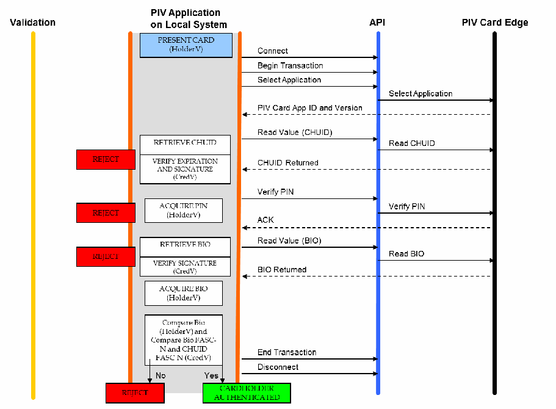
PIVカード処理のシーケンス図。CHUIDの取得、有効期限・署名の検証、PINと生体情報の確認を行い、結果に応じて拒否またはカード保持者認証へ進む。
Fig. 1. Authentication using PIV Biometrics (BIO)
図1. PIV生体情報（BIO）を用いた認証
未レビュー訳The assurance of authentication using PIV biometrics CAN be further increased if the live biometric sample is collected in an attended environment with a human overseeing the process. The attended biometric authentication mechanism (BIO-A) is illustrated in Fig. 2.
ライブ生体サンプルを、人がプロセスを監督する立会い環境で収集すれば、PIV生体情報を用いる認証の保証度をさらに高めることができる。 (CAN) 立会い生体認証メカニズム（BIO-A）を図2に示す。
未レビュー訳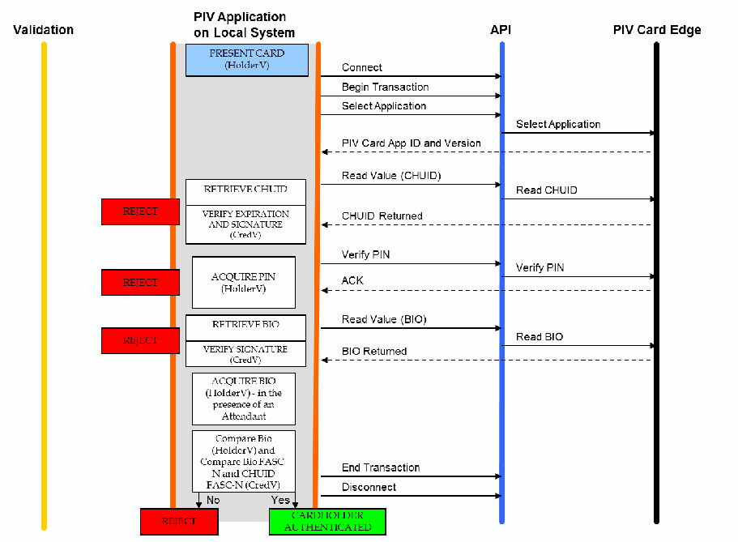
PIVカードからCHUIDを読み出してPINを検証するシーケンス。検証結果に応じて拒否またはカード保持者認証となる。
Fig. 2. Authentication using PIV Biometrics Attended (BIO-A)
図2. 立会いによるPIV生体情報認証（BIO-A）
未レビュー訳B.1.2. Authentication Using PIV Authentication Key
B.1.2. PIV認証鍵を用いた認証
未レビュー訳Figure 3 shows the authentication mechanism using the PIV Authentication key.
図3に、PIV認証鍵を用いる認証メカニズムを示す。
未レビュー訳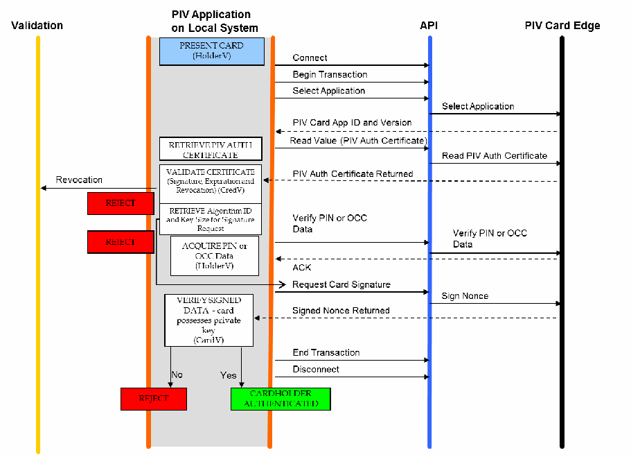
PIV認証証明書を取得・検証し、失効確認、PINまたはOCCの確認、カード署名によるnonceの検証を経て認証するシーケンス。
Fig. 3. Authentication using PIV Authentication Key
図3. PIV認証鍵を用いた認証
未レビュー訳B.1.3. Authentication Using Card Authentication Key
B.1.3. カード認証鍵を用いた認証
未レビュー訳Authentication mechanisms using the Card Authentication key are illustrated in Fig. 4 and Fig.
カード認証鍵を用いる認証メカニズムを図4および図
未レビュー訳5.Figure 4 illustrates the use of the mandatory asymmetric Card Authentication key, while Fig. 5 uses the deprecated, optional symmetric Card Authentication key for the authentication mechanism. Note that the symmetric card authentication key has been deprecated in FIPS 201-3 and MAY be removed in a future version of the standard.
5.図4は必須の非対称カード認証鍵の使用を示し、図5は認証メカニズムにおいて非推奨の任意の対称カード認証鍵を使用する。対称カード認証鍵はFIPS 201-3で非推奨となっており、規格の将来版から削除される可能性があることに注意する。 (MAY)
未レビュー訳カード認証証明書の検証と発行者確認を行い、カード署名でnonceへの応答を検証して秘密鍵の所持を確認するシーケンス。
Fig. 4. Authentication using an asymmetric Card Authentication Key
図4. 非対称カード認証鍵を用いた認証
未レビュー訳CHUIDとアルゴリズム情報を取得し、カードへチャレンジを送り、暗号化応答で秘密鍵の所持を確認するシーケンス。
Fig. 5. Authentication using a symmetric Card Authentication Key (DEPRECATED)
図5. 対称カード認証鍵を用いた認証（非推奨）
未レビュー訳B.1.4. Authentication Using OCC (OCC-AUTH)
B.1.4. OCCを用いた認証（OCC-AUTH）
未レビュー訳The OCC-AUTH authentication mechanism is implemented by performing OCC over secure messaging. The PIV Application authenticates the PIV Card as part of the process of establishing secure messaging. When the live-scan fingerprint biometric is supplied to the card for OCC over secure messaging, both the request and the response are protected using message authentication codes (MAC), allowing the PIV Application on the local system to verify that the response has not been altered and that it was created by the PIV Card that was authenticated during the establishment of secure messaging.
OCC-AUTH認証メカニズムは、セキュアメッセージングを介してOCCを実行することで実装される。セキュアメッセージングの確立プロセスの一環として、PIVアプリケーションはPIVカードを認証する。ライブスキャン指紋生体情報を、セキュアメッセージングを介したOCCのためにカードに送信すると、要求と応答の両方がメッセージ認証コード（MAC）で保護される。これにより、ローカルシステム上のPIVアプリケーションは、応答が改変されていないこと、およびセキュアメッセージングの確立時に認証されたPIVカードによって生成されたことを検証できる。
未レビュー訳The OCC-AUTH authentication mechanism is performed by establishing secure messaging as described in Sec. 4 of SP 800-73-5 Part 2 and then performing the VERIFY command, as illustrated in Fig. 6.
OCC-AUTH認証メカニズムは、SP 800-73-5 Part 2の4節に記載のとおりセキュアメッセージングを確立し、その後、図6に示すVERIFYコマンドを実行して行う。
未レビュー訳セキュアメッセージングを開始し、セッション鍵を確立した後にOCCとMAC付き応答を検証してカード保持者を認証するシーケンス。
Fig. 6. Authentication using OCC
図6. OCCを用いた認証
未レビュー訳B.1.5. Authentication Using PIV Visual Credentials (Deprecated)
B.1.5. PIV視覚的資格情報を用いた認証（非推奨）
未レビュー訳Figure 7 shows the deprecated authentication mechanism in which a human guard authenticates the cardholder using the visual credentials held by the PIV Card. The authentication mechanism has been deprecated in FIPS 201-3 and MAY be removed from a future edition of the standard.
図7は、人間の警備員がPIVカードに保持された視覚的資格情報を用いてカード保有者を認証する、非推奨となった認証メカニズムを示す。この認証メカニズムはFIPS 201-3で非推奨となっており、規格の将来版から削除される可能性がある。 (MAY)
未レビュー訳人によるPIVカード確認の流れ。偽造・改ざんの有無、カードの外観特性、カードの有効期限を確認し、拒否またはカード保持者認証へ進む。
Fig. 7. Authentication using PIV Visual Credentials (DEPRECATED)
図7. PIV視覚的資格情報を用いた認証（非推奨）
未レビュー訳B.1.6. Authentication Using PIV CHUID (Removed)
B.1.6. PIV CHUIDを用いた認証（削除）
未レビュー訳The content of this section has been removed since the CHUID as an authentication mechanism is no longer allowed under FIPS-201. However, the CHUID data element itself remains on-card to support other authentication mechanisms. For example, the BIO and BIO-A authentication mechanisms use the CHUID data element as a source for the card’s expiration date. The CHUID data element also provides the content signing certificate for these authentication mechanisms as well as unique identifiers for PACS ACLs.
この節の内容は、CHUIDがFIPS-201の下で認証メカニズムとして許可されなくなったため削除された。ただし、他の認証メカニズムを支援するため、CHUIDデータ要素自体はカード上に残る。例えば、BIOおよびBIO-A認証メカニズムは、カードの有効期限を取得する情報源としてCHUIDデータ要素を使用する。CHUIDデータ要素は、これらの認証メカニズム用のコンテンツ署名証明書、およびPACS ACL用の一意識別子も提供する。
未レビュー訳B.1.7. Authentication Using Secure Messaging Key (SM-AUTH)
B.1.7. セキュアメッセージング鍵（SM-AUTH）を用いた認証
未レビュー訳If the PIV Card supports the secure messaging protocol, then the secure messaging key, corresponding CVC, and key establishment protocol (see Sec. 4 of SP 800-73-5 Part 2) CAN be used for authentication of the PIV Card and the cardholder (SM-AUTH). The secure messaging protocol authenticates the PIV Card via the secure messaging key. Any established session keys SHALL be zeroized after authentication if bits b3 and b4 of subsequent command CLA bytes are set to zero.
PIVカードがセキュアメッセージングプロトコルをサポートしている場合、セキュアメッセージング鍵、対応するCVC、および鍵確立プロトコル（SP 800-73-5 Part 2の4節を参照）を、PIVカードおよびカード保有者の認証に使用できる（SM-AUTH）。 (CAN) セキュアメッセージングプロトコルは、セキュアメッセージング鍵を介してPIVカードを認証する。後続コマンドのCLAバイトのb3およびb4ビットが0に設定されている場合、確立されたセッション鍵は認証後にゼロ化しなければならない。 (SHALL)
未レビュー訳Figure 8 shows the authentication mechanism using the secure messaging key.
図8に、セキュアメッセージング鍵を用いた認証メカニズムを示す。
未レビュー訳PIVカードとのセキュアメッセージングを開始し、パラメーターとセッション鍵を認証した後、成功時はカード保持者を認証するシーケンス。
Fig. 8. Authentication using the secure messaging key
図8. セキュアメッセージング鍵を用いた認証
未レビュー訳B.2. Summary Table
B.2. 要約表
未レビュー訳Table 45 summarizes the types of validation activities that are included in each of the PIV authentication mechanisms described earlier in this section.
表45は、本節で前述した各PIV認証メカニズムに含まれる検証活動の種類を要約する。
未レビュー訳Table 45. Summary of PIV authentication mechanisms
表45. PIV認証メカニズムの要約
未レビュー訳| PIV Authentication | Card Validation | Credential Validation | Cardholder Validation |
| Mechanism | Steps (CardV) | Steps (CredV) | Steps (HolderV) |
| PIV Biometric | Expiration check CHUID signature check PIV Bio signature check Match CHUID FASC-N with PIV Bio FASC-N | Possession of Card Match PIN provided by Cardholder Match Cardholder bio with PIV bio | |
| PIV Biometric (Attended) | Expiration check CHUID signature check PIV Bio signature check Match CHUID FASC-N with PIV Bio FASC-N | Possession of Card Match PIN provided by Cardholder Match of Cardholder bio to PIV bio in view of attendant | |
| PIV Authentication Key | Perform challenge and response with a PIV asymmetric key, and validate signature on response | Certificate validation of a PIV certificate | Possession of Card Match PIN or OCC data provided by Cardholder |
| Asymmetric Card Authentication Key | Perform challenge and response with a PIV asymmetric Card Authentication key, and validate signature on response | Certificate validation of a PIV certificate | Possession of Card |
| Secure Messaging Key | Perform key agreement to establish session keys | Certificate validation of a Secure Messaging Card Verifiable Certificate | Possession of Card |
| Symmetric Card Authentication Key (Deprecated) | Perform challenge and response with a PIV symmetric key | Possession of Card | |
| On-card Biometric Comparison | Establish Secure Messaging | Certificate validation of a PIV certificate | Possession of Card Match OCC data provided by Cardholder |
| PIV Visual Authentication (Deprecated) | Counterfeit, tamper, and forgery check | Expiration check | Possession of Card Match of card visual characteristics with cardholder |
原本PDFの抜粋画像
| PIV認証 | カード検証 | 資格情報検証 | カード保有者検証 |
| メカニズム | ステップ（CardV） | ステップ（CredV） | ステップ（HolderV） |
| PIV生体情報 | 有効期限の確認、CHUID署名の確認、PIV生体情報の署名の確認、CHUIDのFASC-NとPIV生体情報のFASC-Nの照合 | カードの所持、カード保有者が提示したPINの照合、カード保有者の生体情報とPIV生体情報の照合 | |
| PIV生体情報（立会い） | 有効期限の確認、CHUID署名の確認、PIV生体情報の署名の確認、CHUIDのFASC-NとPIV生体情報のFASC-Nの照合 | カードの所持、カード保有者が提示したPINの照合、立会人の監視下でのカード保有者生体情報とPIV生体情報の照合 | |
| PIV認証鍵 | PIV非対称鍵でチャレンジ・レスポンスを実行し、応答の署名を検証する | PIV証明書の検証 | カードの所持、カード保有者が提示したPINまたはOCCデータの照合 |
| 非対称カード認証鍵 | PIV非対称カード認証鍵でチャレンジ・レスポンスを実行し、応答の署名を検証する | PIV証明書の検証 | カードの所持 |
| セキュアメッセージング鍵 | 鍵合意を実行してセッション鍵を確立する | セキュアメッセージング用カード検証可能証明書の検証 | カードの所持 |
| 対称カード認証鍵（非推奨） | PIV対称鍵でチャレンジ・レスポンスを実行する | カードの所持 | |
| カード内生体照合 | セキュアメッセージングを確立する | PIV証明書の検証 | カードの所持、カード保有者が提示したOCCデータの照合 |
| PIV視覚認証（非推奨） | 偽造、改ざん、および変造の確認 | 有効期限の確認 | カードの所持、カードの視覚的特徴とカード保有者との照合 |
Appendix C. PIV Algorithm Identifier Discovery
付録C. PIVアルゴリズム識別子の検出
未レビュー訳Relying parties interact with many PIV Cards with the same native key type implemented by different key sizes and algorithms.34 For example, a relying party performing the authentication mechanism described in Appendix B.1.2 CAN expect to perform a challenge and response cryptographic authentication with a 3072-bit or a 2048-bit RSA key or an ECDSA (Curve P-256 or Curve P-384) key.
依拠当事者は、異なる鍵サイズおよびアルゴリズムで実装された同じネイティブ鍵種別を持つ多数のPIVカードとやり取りする。34 例えば、付録B.1.2で説明する認証メカニズムを実行する依拠当事者は、3072ビットまたは2048ビットのRSA鍵、あるいはECDSA（Curve P-256またはCurve P-384）鍵を用いてチャレンジ・レスポンス暗号認証を行うことがある。 (CAN)
未レビュー訳This appendix describes recommended procedures for key size and algorithm discovery (PIV algorithm ID discovery) to facilitate cryptographic authentication initiated by the relying party to make appropriate decisions for granting access to logical networks and systems as well as physical access control systems. The discovery procedure is defined in terms of asymmetric and symmetric cryptographic authentication.
この付録では、依拠当事者が開始する暗号認証を容易にし、論理ネットワークおよびシステムならびに物理アクセス制御システムへのアクセスを許可する適切な判断を行えるようにするため、鍵サイズおよびアルゴリズムの検出（PIVアルゴリズムID検出）に関する推奨手順を説明する。検出手順は、非対称および対称暗号認証の観点から定義する。
未レビュー訳C.1. PIV Algorithm Identifier Discovery for Asymmetric Cryptographic Authentication
C.1. 非対称暗号認証におけるPIVアルゴリズム識別子の検出
未レビュー訳As illustrated in the authentication mechanisms in Appendix B, an asymmetric cryptographic authentication involves issuing a challenge (request to sign a nonce) to the PIV Card. The relying party issuing the command provides the nonce to be signed, the key reference, and the PIV algorithm identifier as parameters of the command. The nonce is random data generated by the relying party, and the key reference is known. In contrast, the PIV algorithm identifier is unknown to the relying party and needs to be identified in order to issue the challenge command. The PIV algorithm identifier CAN be derived from the previous steps of the authentication mechanism. Prior to issuing the challenge command, the relying party retrieved and parsed the X.509 certificate from the card to validate the certificate and extract the public key for the pending verification of the signed nonce once returned from the card. The PIV algorithm identifier CAN be identified during the parsing of the X.509 certificate in two steps:35
付録Bの認証メカニズムに示すとおり、非対称暗号認証ではPIVカードにチャレンジ（nonceへの署名要求）を発行する。コマンドを発行する依拠当事者は、署名対象nonce、鍵参照、およびPIVアルゴリズム識別子をコマンドのパラメーターとして指定する。nonceは依拠当事者が生成するランダムデータであり、鍵参照は既知である。これに対し、PIVアルゴリズム識別子は依拠当事者には未知であり、チャレンジコマンドを発行するために特定する必要がある。PIVアルゴリズム識別子は、認証メカニズムの前段階から導出できる。 (CAN) チャレンジコマンドを発行する前に、依拠当事者はカードからX.509証明書を取得して解析し、証明書を検証するとともに、カードから署名済みnonceが返された時点で検証できるよう公開鍵を抽出している。PIVアルゴリズム識別子は、X.509証明書の解析中に次の2段階で特定できる。35 (CAN)
未レビュー訳Step 1: Algorithm Type Discovery
ステップ1：アルゴリズム種別の検出
未レビュー訳The X.509 certificate stores the public key in the subjectPublicKeyInfo field. The subjectPublicKeyInfo data structure has an algorithm field, which includes an OID that identifies the public key’s algorithm (RSA or ECC), as listed in Table 4 of SP 800-78.
X.509証明書はsubjectPublicKeyInfoフィールドに公開鍵を格納する。subjectPublicKeyInfoデータ構造にはアルゴリズムフィールドがあり、表4（SP 800-78）に示すように、公開鍵のアルゴリズム（RSAまたはECC）を識別するOIDが含まれる。
未レビュー訳Step 2: Key Size Discovery
ステップ2：鍵サイズの検出
未レビュー訳If the algorithm type determined in Step 1 is ECC, then the key size is determined by the elliptic curve on which the key has been generated, which is P-256 or P-384 for all elliptic curve PIV Authentication keys and Card Authentication keys.
ステップ1で決定したアルゴリズム種別がECCの場合、鍵サイズは鍵の生成に用いられた楕円曲線によって決まり、すべての楕円曲線PIV認証鍵およびカード認証鍵ではP-256またはP-384である。
未レビュー訳If the algorithm type determined in Step 1 is RSA, then the key size is determined by the public key’s modulus. The public key appears in the subjectPublicKey field of subjectPublicKeyInfo and is encoded as a sequence that includes both the key’s modulus and public exponent.
ステップ1で決定したアルゴリズム種別がRSAの場合、鍵サイズは公開鍵のモジュラスによって決まる。公開鍵はsubjectPublicKeyInfoのsubjectPublicKeyフィールドにあり、鍵のモジュラスと公開指数の両方を含むシーケンスとして符号化される。
未レビュー訳As a final step, the discovered X.509 algorithm OID and key size are mapped to the PIV algorithm identifiers, as defined in Table 9 of SP 800-78. The relying party then proceeds to issue the GENERAL AUTHENTICATE command to the card.
最終ステップとして、検出したX.509アルゴリズムOIDおよび鍵サイズを、SP 800-78の表9に定義されているPIVアルゴリズム識別子に対応付ける。その後、依拠当事者はカードにGENERAL AUTHENTICATEコマンドを発行する。
未レビュー訳C.2. PIV Algorithm Identifier Discovery for Symmetric Cryptographic Authentication
C.2. 対称暗号認証におけるPIVアルゴリズム識別子の検出
未レビュー訳In the absence of an X.509 certificate, as is the case with symmetric cryptography, the PIV algorithm identifier discovery mechanism has to rely on a lookup table that resides on the local system. The table maps a unique card identifier and key reference (inputs) to an associated PIV algorithm identifier (output). The unique identifier supplied by the card MAY be the Agency Code || System Code || Credential Number of the FASC-N or the Card UUID.
対称暗号の場合のようにX.509証明書が存在しない場合、PIVアルゴリズム識別子の検出メカニズムは、ローカルシステムに格納されたルックアップテーブルに依存しなければならない。このテーブルは、一意のカード識別子および鍵参照（入力）を、対応するPIVアルゴリズム識別子（出力）に対応付ける。カードが提供する一意識別子には、FASC-NのAgency Code || System Code || Credential Number、またはCard UUIDを使用してもよい。 (MAY)
未レビュー訳The symmetric Card Authentication key is optional to implement, and a relying party has no prior knowledge of the key’s existence. The following routine discovers the Card Authentication key’s native implementation:
対称カード認証鍵の実装は任意であり、依拠当事者は鍵の存在を事前に知らない。以下の手順で、カード認証鍵のネイティブ実装を検出する。
未レビュー訳•Read the CHUID, and extract either the Card UUID or the Agency Code || System code || Credential Number from the CHUID’s FASC-N.
•CHUIDを読み取り、Card UUID、またはCHUIDのFASC-NからAgency Code || System Code || Credential Numberを抽出する。
未レビュー訳•Retrieve the PIV algorithm identifier from the local lookup table. If no algorithm identifier is returned, authentication CANNOT be performed using the optional symmetric Card Authentication key, either because the PIV Card does not implement the key or the local system CANNOT authenticate the response from the card.
•ローカルのルックアップテーブルからPIVアルゴリズム識別子を取得する。アルゴリズム識別子が返されない場合、任意の対称カード認証鍵を用いた認証は実行できない。これは、PIVカードが当該鍵を実装していないか、ローカルシステムがカードからの応答を認証できないためである。 (CANNOT) (CANNOT)
未レビュー訳C.3. PIV Algorithm Identifier Discovery for Secure Messaging
C.3. セキュアメッセージングにおけるPIVアルゴリズム識別子の検出
未レビュー訳The Application Property Template included in the response to the SELECT command optionally includes a tag 0xAC, which indicates what cryptographic algorithms the PIV Card Application supports. The presence of algorithm identifier '27' or '2E' indicates that the corresponding cipher suite is supported by the PIV Card Application for secure messaging and that the PIV Card Application possesses a PIV Secure Messaging key of the appropriate size for the specified cipher suite.
SELECTコマンドへの応答に含まれるApplication Property Templateには、PIVカードアプリケーションがサポートする暗号アルゴリズムを示すタグ0xACが任意で含まれる。アルゴリズム識別子'27'または'2E'が存在する場合、対応する暗号スイートがセキュアメッセージング用にPIVカードアプリケーションでサポートされており、PIVカードアプリケーションが指定された暗号スイートに適切なサイズのPIVセキュアメッセージング鍵を保有していることを示す。
未レビュー訳Appendix D. List of Symbols, Abbreviations, and Acronyms
付録D. 記号、略語、および頭字語の一覧
未レビュー訳ACR Access Control Rule
ACR アクセス制御規則（Access Control Rule）
未レビュー訳AID Application Identifier
AID アプリケーション識別子（Application Identifier）
未レビュー訳APDU Application Protocol Data Unit
APDU アプリケーションプロトコルデータ単位（Application Protocol Data Unit）
未レビュー訳API Application Programming Interface
API アプリケーションプログラミングインターフェース（Application Programming Interface）
未レビュー訳ASCII American Standard Code for Information Interchange
ASCII 情報交換用米国標準コード（American Standard Code for Information Interchange）
未レビュー訳ASN.1 Abstract Syntax Notation One
ASN.1 抽象構文記法1（Abstract Syntax Notation One）
未レビュー訳BER Basic Encoding Rules
BER 基本符号化規則（Basic Encoding Rules）
未レビュー訳BIT Biometric Information Template
BIT 生体情報テンプレート（Biometric Information Template）
未レビュー訳CAK Card Authentication Key
CAK カード認証鍵（Card Authentication Key）
未レビュー訳CBEFF Common Biometric Exchange Formats Framework
CBEFF 共通生体情報交換フォーマット枠組み（Common Biometric Exchange Formats Framework）
未レビュー訳CCC Card Capability Container
CCC カード能力コンテナ（Card Capability Container）
未レビュー訳CHUID Card Holder Unique Identifier
CHUID カード保有者一意識別子（Card Holder Unique Identifier）
未レビュー訳CMS Cryptographic Message Syntax
CMS 暗号メッセージ構文（Cryptographic Message Syntax）
未レビュー訳CVC Card Verifiable Certificate
CVC カード検証可能証明書（Card Verifiable Certificate）
未レビュー訳DER Distinguished Encoding Rules
DER 識別符号化規則（Distinguished Encoding Rules）
未レビュー訳DG Data Group
DG データグループ（Data Group）
未レビュー訳DTR Derived Test Requirement
DTR 導出試験要件（Derived Test Requirement）
未レビュー訳ECB Electronic Code Book
ECB 電子符号ブック（Electronic Code Book）
未レビュー訳ECC Elliptic Curve Cryptography
ECC 楕円曲線暗号（Elliptic Curve Cryptography）
未レビュー訳ECDH Elliptic Curve Diffie-Hellman
ECDH 楕円曲線Diffie-Hellman（Elliptic Curve Diffie-Hellman）
未レビュー訳ECDSA Elliptic Curve Digital Signature Algorithm
ECDSA 楕円曲線デジタル署名アルゴリズム（Elliptic Curve Digital Signature Algorithm）
未レビュー訳FASC-N Federal Agency Smart Credential Number
FASC-N 連邦機関スマート資格情報番号（Federal Agency Smart Credential Number）
未レビュー訳FIPS Federal Information Processing Standard
FIPS 連邦情報処理規格（Federal Information Processing Standard）
未レビュー訳FISMA Federal Information Security Management Act
FISMA 連邦情報セキュリティ管理法（Federal Information Security Management Act）
未レビュー訳GSC-IS Government Smart Card Interoperability Specification
GSC-IS 政府スマートカード相互運用仕様（Government Smart Card Interoperability Specification）
未レビュー訳GUID Global Unique Identification number
GUID グローバル一意識別番号（Global Unique Identification number）
未レビュー訳HSPD Homeland Security Presidential Directive
HSPD 国土安全保障大統領指令（Homeland Security Presidential Directive）
未レビュー訳ICC Integrated Circuit Card
ICC 集積回路カード（Integrated Circuit Card）
未レビュー訳IEC International Electrotechnical Commission
IEC 国際電気標準会議（International Electrotechnical Commission）
未レビュー訳INCITS InterNational Committee for Information Technology Standards
INCITS 情報技術規格国際委員会（InterNational Committee for Information Technology Standards）
未レビュー訳ISO International Organization for Standardization
ISO 国際標準化機構（International Organization for Standardization）
未レビュー訳ITL Information Technology Laboratory
ITL 情報技術研究所（Information Technology Laboratory）
未レビュー訳LSB Least Significant Bit
LSB 最下位ビット（Least Significant Bit）
未レビュー訳LRC Longitudinal Redundancy Code
LRC 縦方向冗長検査コード（Longitudinal Redundancy Code）
未レビュー訳MAC Message Authentication Code
MAC メッセージ認証コード（Message Authentication Code）
未レビュー訳MRTD Machine Readable Travel Document
MRTD 機械読取式渡航文書（Machine Readable Travel Document）
未レビュー訳MSB Most Significant Bit
MSB 最上位ビット（Most Significant Bit）
未レビュー訳NIST National Institute of Standards and Technology
NIST 米国国立標準技術研究所（National Institute of Standards and Technology）
未レビュー訳NPIVP NIST Personal Identity Verification Program
NPIVP NIST個人識別検証プログラム（NIST Personal Identity Verification Program）
未レビュー訳OCC On-Card Biometric Comparison
OCC カード内生体照合（On-Card Biometric Comparison）
未レビュー訳OID Object Identifier
OID オブジェクト識別子（Object Identifier）
未レビュー訳OMB Office of Management and Budget
OMB 行政管理予算局（Office of Management and Budget）
未レビュー訳PACS Physical Access Control System
PACS 物理アクセス制御システム（Physical Access Control System）
未レビュー訳PIN Personal Identification Number
PIN 個人識別番号（Personal Identification Number）
未レビュー訳PI Person Identifier, a field in the FASC-N
PI 個人識別子。FASC-N内のフィールド（Person Identifier, a field in the FASC-N）
未レビュー訳PIV Personal Identity Verification
PIV 個人識別検証（Personal Identity Verification）
未レビュー訳PIX Proprietary Identifier Extension
PIX 独自識別子拡張（Proprietary Identifier Extension）
未レビュー訳PKCS Public-Key Cryptography Standards
PKCS 公開鍵暗号規格（Public-Key Cryptography Standards）
未レビュー訳PKI Public Key Infrastructure
PKI 公開鍵基盤（Public Key Infrastructure）
未レビュー訳PUK PIN Unblocking Key
PUK PINブロック解除鍵（PIN Unblocking Key）
未レビュー訳RFU Reserved for Future Use
RFU 将来使用のために予約（Reserved for Future Use）
未レビュー訳RID Registered Application Provider Identifier
RID 登録済みアプリケーション提供者識別子（Registered Application Provider Identifier）
未レビュー訳RSA Rivest–Shamir–Adleman
RSA Rivest–Shamir–Adleman
未レビュー訳SCEPACS Smart Card Enabled Physical Access Control System
SCEPACS スマートカード対応物理アクセス制御システム（Smart Card Enabled Physical Access Control System）
未レビュー訳SHA Secure Hash Algorithm
SHA セキュアハッシュアルゴリズム（Secure Hash Algorithm）
未レビュー訳SP Special Publication
SP 特別刊行物（Special Publication）
未レビュー訳SM Secure Messaging
SM セキュアメッセージング（Secure Messaging）
未レビュー訳SW1 First byte of a two-byte status word
SW1 2バイトのステータスワードの第1バイト（First byte of a two-byte status word）
未レビュー訳SW2 Second byte of a two-byte status word
SW2 2バイトのステータスワードの第2バイト（Second byte of a two-byte status word）
未レビュー訳TIG Technical Implementation Guidance
TIG 技術実装ガイダンス（Technical Implementation Guidance）
未レビュー訳TLV Tag-Length-Value
TLV タグ・長さ・値（Tag-Length-Value）
未レビュー訳URL Uniform Resource Locator
URL 統一資源位置指定子（Uniform Resource Locator）
未レビュー訳UUID Universally Unique Identifier
UUID 汎用一意識別子（Universally Unique Identifier）
未レビュー訳VCI Virtual Contact Interface
VCI 仮想接触インターフェース（Virtual Contact Interface）
未レビュー訳Appendix E. Glossary
付録E. 用語集
未レビュー訳algorithm identifier A 1-byte identifier that specifies a cryptographic algorithm and key size. For symmetric cryptographic operations, the algorithm identifier also specifies a mode of operation (i.e., ECB).
アルゴリズム識別子 暗号アルゴリズムおよび鍵サイズを指定する1バイトの識別子。対称暗号操作の場合、アルゴリズム識別子は動作モード（すなわちECB）も指定する。
未レビュー訳application identifier A globally unique identifier of a card application, as adapted from ISO/IEC 7816-4.
アプリケーション識別子 ISO/IEC 7816-4を基にした、カードアプリケーションのグローバルに一意な識別子。
未レビュー訳authenticable entity An entity that can successfully participate in an authentication protocol with a card application.
認証可能エンティティ カードアプリケーションとの認証プロトコルに正常に参加できるエンティティ。
未レビュー訳BER-TLV data object A data object coded according to ISO/IEC 8824-2:2021
BER-TLVデータオブジェクト ISO/IEC 8824-2:2021に従って符号化されたデータオブジェクト。
未レビュー訳card An integrated circuit card.
カード 集積回路カード。
未レビュー訳card application A set of data objects and card commands that can be selected using an application identifier.
カードアプリケーション アプリケーション識別子を用いて選択できるデータオブジェクトおよびカードコマンドの集合。
未レビュー訳client application A program running on a computer in communication with a card interface device.
クライアントアプリケーション カードインターフェース装置と通信するコンピューター上で実行されるプログラム。
未レビュー訳card management operation Any operation involving the PIV Card Application Administrator.
カード管理操作 PIVカードアプリケーション管理者が関与するあらゆる操作。
未レビュー訳Card Verifiable Certificate A certificate stored on the card that includes a public key, the signature of certification authority, and the information needed to verify the certificate.
カード検証可能証明書 公開鍵、認証局の署名、および証明書の検証に必要な情報を含む、カード上に格納された証明書。
未レビュー訳data object An item of information seen at the card command interface with a specified a name, a description of logical content, a format, and a coding.
データオブジェクト カードコマンドインターフェースで認識される情報項目であり、指定された名前、論理的内容の説明、形式、および符号化を持つ。
未レビュー訳key reference A 1-byte identifier that specifies a cryptographic key according to its PIV Key Type. The identifier is part of the cryptographic material used in a cryptographic protocol, such as an authentication or a signing protocol.
鍵参照 PIV鍵種別に従って暗号鍵を指定する1バイトの識別子。この識別子は、認証または署名プロトコルなど、暗号プロトコルで使用される暗号材料の一部である。
未レビュー訳MSCUID A deprecated (previously optional legacy) identifier included for compatibility with Common Access Card and Government Smart Card Interoperability Specifications.
MSCUID Common Access CardおよびGovernment Smart Card Interoperability Specificationsとの互換性のために含まれる、非推奨の（以前は任意であったレガシー）識別子。
未レビュー訳object identifier A globally unique identifier of a data object, as adapted from ISO/IEC 8824-2:2021
オブジェクト識別子 ISO/IEC 8824-2:2021を基にした、データオブジェクトのグローバルに一意な識別子。
未レビュー訳pairing code An 8-digit code used to establish a relationship between the PIV Card and a device for the purpose of creating the virtual contact interface after secure messaging has been established.
ペアリングコード セキュアメッセージング確立後に仮想接触インターフェースを作成する目的で、PIVカードと装置との関係を確立するために使用される8桁のコード。
未レビュー訳PIV Key Type The type of a key. The PIV Key Types are 1) PIV Authentication key, 2) Card Authentication key, 3) digital signature key, 4) key management key, 5) retired key management key, 6) PIV Secure Messaging key, and 7) PIV Card Application Administration key. relying party An entity that relies upon the subscriber’s credentials, typically to process a transaction or grant access to information or a system.
PIV鍵種別 鍵の種類。PIV鍵種別は、1) PIV認証鍵、2) カード認証鍵、3) デジタル署名鍵、4) 鍵管理鍵、5) 廃止済み鍵管理鍵、6) PIVセキュアメッセージング鍵、7) PIVカードアプリケーション管理鍵である。 依拠当事者 通常、トランザクションの処理または情報やシステムへのアクセス許可のために、加入者の資格情報を信頼するエンティティ。
未レビュー訳status word Two bytes returned by an integrated circuit card after processing any command that signify the success of or errors encountered during said processing.
ステータスワード 集積回路カードがコマンドを処理した後に返す2バイトであり、その処理の成功または発生したエラーを示す。
未レビュー訳Appendix F. Notation
付録F. 表記規則
未レビュー訳The 16 hexadecimal digits SHALL be denoted using the alphanumeric characters 0, 1, 2, …, 9, A, B, C, D, E, and F. A byte consists of two hexadecimal digits, such as '2D'. The two hexadecimal digits are represented in quotations '2D' or as 0x2D. A sequence of bytes MAY be enclosed in single quotation marks (e.g., 'A0 00 00 01 16') rather than given as a sequence of individual bytes (e.g., 'A0' '00' '00' '01' '16').
16進数の16個の数字は、英数字0、1、2、…、9、A、B、C、D、E、およびFで表記しなければならない。バイトは2桁の16進数で構成され、例えば'2D'である。2桁の16進数は、引用符で囲んだ'2D'、または0x2Dの形式で表す。バイト列は、個々のバイト列（例：'A0' '00' '00' '01' '16'）として示す代わりに、単引用符で囲んでもよい（例：'A0 00 00 01 16'）。 (SHALL) (MAY)
未レビュー訳A byte can also be represented by bits b8 to b1, where b8 is the most significant bit (MSB) and b1 is the least significant bit (LSB) of the byte. In textual or graphic representations, the leftmost bit is the MSB. Thus, for example, the most significant bit b8 of '80' is 1, and the least significant bit b1 is 0.
バイトは、b8からb1までのビットで表すこともできる。b8はそのバイトの最上位ビット（MSB）、b1は最下位ビット（LSB）である。テキスト表記または図表表記では、左端のビットがMSBである。したがって、例えば'80'の最上位ビットb8は1、最下位ビットb1は0である。
未レビュー訳All bytes specified as RFU SHALL be set to '00', and all bits specified as RFU SHALL be set to 0.
RFUとして指定されたすべてのバイトは'00'に設定しなければならず、RFUとして指定されたすべてのビットは0に設定しなければならない。 (SHALL) (SHALL)
未レビュー訳All lengths SHALL be measured in number of bytes unless otherwise noted.
特に注記がない限り、すべての長さはバイト数で測定しなければならない。 (SHALL)
未レビュー訳The expression 'X' & 'Y' is a bitwise AND operation between bytes 'X' and 'Y'.
式'X' & 'Y'は、バイト'X'と'Y'のビット単位AND演算である。
未レビュー訳The symbol || means a concatenation of byte strings. For example, if X is '00 01 02' and Y is '03 04 05', then X || Y is '00 01 02 03 04 05'.
記号||は、バイト文字列の連結を意味する。例えば、Xが'00 01 02'、Yが'03 04 05'である場合、X || Yは'00 01 02 03 04 05'となる。
未レビュー訳Data objects in templates are described as being mandatory (M), optional (O), or conditional (C). Mandatory means that the data object SHALL appear in the template. Optional means that the data object MAY appear in the template. For conditional data objects, the conditions under which they are required are provided.
テンプレート内のデータオブジェクトは、必須（M）、任意（O）、または条件付き（C）として記述する。必須とは、そのデータオブジェクトがテンプレートに存在しなければならないことを意味する (SHALL)。任意とは、そのデータオブジェクトがテンプレートに存在してもよいことを意味する (MAY)。条件付きデータオブジェクトについては、必要となる条件を示す。
未レビュー訳In other tables, the M/O/C column identifies the properties of the PIV Card Application that SHALL be present (M), MAY be present (O), or are conditionally required to be present (C).
他の表では、M/O/C列は、PIVカードアプリケーションに存在しなければならない（M）、存在してもよい（O）、または条件付きで存在を要求される（C）プロパティを示す。 (SHALL) (MAY)
未レビュー訳BER-TLV data object tags are represented as byte sequences, as described above. Thus, for example, 0x4F is the interindustry data object tag for an application identifier, and 0x7F61 is the interindustry data object tag for the Biometric Information Templates Group template.
BER-TLVデータオブジェクトのタグは、上記のとおりバイト列で表す。したがって、例えば0x4Fはアプリケーション識別子の業界間データオブジェクトタグであり、0x7F61は生体情報テンプレートグループテンプレートの業界間データオブジェクトタグである。
未レビュー訳This document uses the following typographical conventions in text:
本書では、本文に次の表記規則を使用する。
未レビュー訳•Specific terms in CAPITALS represent normative requirements. When these same terms are not in CAPITALS, the term does not represent a normative requirement.
•大文字で表記された特定の用語は、規範要件を表す。同じ用語が大文字で表記されていない場合、その用語は規範要件を表さない。
未レビュー訳•The terms SHALL and SHALL NOT indicate requirements to be strictly followed in order to conform to the publication and from which no deviation is permitted.
•用語 SHALL および SHALL NOT は、本刊行物に適合するために厳密に従う必要があり、逸脱が許されない要件を示す。
未レビュー訳•The terms SHOULD and SHOULD NOT indicate that among several possibilities, one is recommended as particularly suitable without mentioning or excluding others, that a certain course of action is preferred but not necessarily required, or that — in the negative form — a certain possibility or course of action is discouraged but not prohibited.
•用語 SHOULD および SHOULD NOT は、複数の可能性の中で、他の可能性を述べたり排除したりせずに特に適切なものとして推奨されるもの、必須ではないが望ましい行動方針、または否定形では禁止ではないものの推奨されない可能性や行動方針を示す。
未レビュー訳•The terms MAY and NEED NOT indicate a course of action that is permissible within the limits of the publication.
•用語 MAY および NEED NOT は、本刊行物の範囲内で許容される行動方針を示す。
未レビュー訳•The terms CAN and CANNOT indicate a material, physical, or causal possibility or capability or — in the negative — the absence of that possibility or capability.
•用語 CAN および CANNOT は、物質的、物理的、または因果的な可能性もしくは能力、または否定形ではその可能性もしくは能力の欠如を示す。
未レビュー訳Appendix G. Revision History
付録G. 改訂履歴
未レビュー訳| Version | Release Date | Updates |
| SP 800-73 | April 2005 | Initial Release |
| SP 800-73-1 | April 2006 | Incorporated Errata |
| SP 800-73-2 | September 2008 | • Separated SP 800-73 into four Parts: 1. End-Point PIV Card Application Namespace, Data Model, and Representation 2. End-Point PIV Card Application Card Command Interface 3. End-Point PIV Client Application Programming Interface 4. The PIV Transitional Interface and Data Model Specification • All PIV cryptographic key types, cryptographic algorithm identifiers, and key sizes previously listed in SP 800-73-1 are now specified in SP 800-78, Cryptographic Algorithms and Key Sizes for Personal Identity Verification • Removed default algorithms. Each PIV Key Type CAN be implemented from a small subset of algorithms and key sizes, as specified in Table 1 of SP 800-78 • Added optional Discovery Object (Part 1, Sec. 3.2.6) • Added optional capability to use the Global PIN (in addition to the PIV Card Application PIN) with the PIV Card Application (Part 1, Sec. 3.2.6) • Added pivMiddlewareVersion API function (SP 800-73-5 Part 3, Sec. 3.1.1) • Deprecated the CHUID data object’s Authentication Key Map data element • Deprecated the Printed Information data object’s Employee Affiliation Line 2 data element (tag 0x03) • Removed size limits on signed data object containers (Part 1, Appendix A) |
原本PDFの抜粋画像
| 版 | 公開日 | 更新内容 |
| SP 800-73 | April 2005 | 初版発行 |
| SP 800-73-1 | April 2006 | 正誤表を反映 |
| SP 800-73-2 | September 2008 | • Separated SP 800-73 into four Parts: 1. End-Point PIV Card Application Namespace, Data Model, and Representation 2. End-Point PIV Card Application Card Command Interface 3. End-Point PIV Client Application Programming Interface 4. The PIV Transitional Interface and Data Model Specification • All PIV cryptographic key types, cryptographic algorithm identifiers, and key sizes previously listed in SP 800-73-1 are now specified in SP 800-78, Cryptographic Algorithms and Key Sizes for Personal Identity Verification • Removed default algorithms. Each PIV Key Type CAN be implemented from a small subset of algorithms and key sizes, as specified in Table 1 of SP 800-78 • Added optional Discovery Object (Part 1, Sec. 3.2.6) • Added optional capability to use the Global PIN (in addition to the PIV Card Application PIN) with the PIV Card Application (Part 1, Sec. 3.2.6) • Added pivMiddlewareVersion API function (SP 800-73-5 Part 3, Sec. 3.1.1) • Deprecated the CHUID data object’s Authentication Key Map data element • Deprecated the Printed Information data object’s Employee Affiliation Line 2 data element (tag 0x03) • Removed size limits on signed data object containers (Part 1, Appendix A) |
| Version | Release Date | Updates |
| SP 800-73-3 | February 2010 | • Added preamble: I – Revision History, II – Configuration Management, and III – NPIVP Conformance Testing (Part 1, Preamble) • Removed the CHUID data object’s Authentication Key Map data element • Removed the Printed Information data object’s Employee Affiliation Line 2 data element (tag 0x03) • Deprecated IPv6 as optional value for the CHUID’s GUID data element (Part 1, Sec. 3.2.1) • Added Key History capability (Part 1, Sec. 3.2.7) • Added ECDH key agreement scheme (SP 800-73-5 Part 2, Sec. 3.2.4) • Added UUID feature for non-Federal issuer cards (Part 1, Sec. 3.3) • Expanded SP 800-73-5 Part 2, Appendix A (GENERAL AUTHENTICATE examples) to illustrate ECDSA signatures and key establishment schemes with the key management key • Added an optional cardholder iris images data object, which is specified in SP 800-76-2 • Added Appendix C, PIV Algorithm Identifier Discovery • Updated PIV Middleware version number in SP 800-73-5 Part 3 |
原本PDFの抜粋画像
| 版 | 公開日 | 更新内容 |
| SP 800-73-3 | February 2010 | • 前文を追加：I – 改訂履歴、II – 構成管理、III – NPIVP適合性試験（Part 1、前文）。 • CHUIDデータオブジェクトのAuthentication Key Mapデータ要素を削除。 • Printed InformationデータオブジェクトのEmployee Affiliation Line 2データ要素（タグ0x03）を削除。 • CHUIDのGUIDデータ要素の任意値としてのIPv6を非推奨化（Part 1、Sec. 3.2.1）。 • Key History機能を追加（Part 1、Sec. 3.2.7）。 • ECDH鍵合意方式を追加（SP 800-73-5 Part 2、Sec. 3.2.4）。 • 非連邦発行者カード用UUID機能を追加（Part 1、Sec. 3.3）。 • SP 800-73-5 Part 2、Appendix A（GENERAL AUTHENTICATEの例）を拡張し、ECDSA署名および鍵管理鍵を用いる鍵確立方式を例示。 • SP 800-76-2に規定される任意のカード保有者虹彩画像データオブジェクトを追加。 • Appendix C「PIVアルゴリズム識別子の検出」を追加。 • SP 800-73-5 Part 3のPIV Middlewareバージョン番号を更新。 |
| Version | Release Date | Updates |
| SP 800-73-4 | April 2015 | • Removed Part 4, The PIV Transitional Data Model and Interfaces • Removed “End-Point” from the titles and content of Parts 1 through 3 • Added Sec. 1.3 “Effective Date” • Made asymmetric Card Authentication key mandatory • Made digital signature key and key management key conditionally mandatory • Made the facial image data object mandatory • Introduced specifications for optional secure messaging • Introduced specifications for optional virtual contact interface (VCI) over which all non-card management functionality of the PIV Card is accessible • Added support for pairing code that is used to establish VCI • Made Card UUID mandatory and removed the option to populate the GUID data element of CHUID with all zeros or an IPv6 address • Added PIV card-level PIN length enforcement requirements for the PINs • Added an optional Cardholder UUID as a unique identifier for a cardholder • Removed information about encoding of NFI cards • Added optional on-card biometric comparison mechanism as a means of performing card activation and as a PIV authentication mechanism • Added a requirement for signature verification and certification path validation in the CHUID, BIO, and BIO-A authentication mechanisms • Added the On Card Comparison (OCC) Biometric Information (BIT) Group template data object • Added Secure Messaging Signer Certificate Data Object • Added Pairing Code Reference Data Container • Deprecated some data elements in the CHUID (Buffer Length, DUNS and Organization Identifier) and legacy data elements in all X.509 Certificates (MSCUID) • Deprecated the optional Extended Application CardURL and Security Object Buffer data elements from the Card Capability Container • Updated PIV Middleware version number in SP 800-73-5 Part 3 • Expanded Part 1, Appendix C (PIV Algorithm Identifier Discovery) to include an Algorithm Identifier discovery for Secure Messaging • Expanded SP 800-73-5 Part 2, Appendix A (GENERAL AUTHENTICATE examples) to illustrate use of VCI |
原本PDFの抜粋画像
| 版 | 公開日 | 更新内容 |
| SP 800-73-4 | April 2015 | • Part 4「PIV移行データモデルおよびインターフェース」を削除。 • Parts 1～3のタイトルおよび内容から「End-Point」を削除。 • Sec. 1.3「発効日」を追加。 • 非対称カード認証鍵を必須化。 • デジタル署名鍵および鍵管理鍵を条件付き必須とした。 • 顔画像データオブジェクトを必須化。 • 任意のセキュアメッセージング仕様を導入。 • 任意の仮想接触インターフェース（VCI）に関する仕様を導入。VCIを介してPIVカードのカード管理以外のすべての機能にアクセスできる。 • VCIを確立するために使用するペアリングコードをサポート。 • Card UUIDを必須とし、CHUIDのGUIDデータ要素にすべてゼロまたはIPv6アドレスを設定する選択肢を削除。 • PINについて、PIVカードレベルのPIN長強制要件を追加。 • カード保有者の一意識別子として任意のCardholder UUIDを追加。 • NFIカードの符号化に関する情報を削除。 • カード有効化およびPIV認証メカニズムとしてカード内生体照合を行う任意機能を追加。 • CHUID、BIO、およびBIO-A認証メカニズムにおける署名検証と証明書パス検証の要件を追加。 • On Card Comparison（OCC）生体情報（BIT）グループテンプレートデータオブジェクトを追加。 • Secure Messaging Signer Certificate Data Objectを追加。 • Pairing Code Reference Data Containerを追加。 • CHUIDの一部のデータ要素（Buffer Length、DUNS、Organization Identifier）およびすべてのX.509証明書のレガシーデータ要素（MSCUID）を非推奨化。 • Card Capability Containerの任意のExtended Application CardURLおよびSecurity Object Bufferデータ要素を非推奨化。 • SP 800-73-5 Part 3のPIV Middlewareバージョン番号を更新。 • Appendix C（PIVアルゴリズム識別子の検出）を拡張し、セキュアメッセージング用アルゴリズム識別子の検出を追加。 • SP 800-73-5 Part 2、Appendix A（GENERAL AUTHENTICATEの例）を拡張し、VCIの使用を例示。 |
| Version | Release Date | Updates |
| SP 800-73-4 | Feb 8, 2016 (Errata update) | • Relaxed interface requirements to allow RESET RETRY COUNTER, PUT DATA, and GENERATE ASYMMETRIC KEY PAIR to be performed over the contactless interface if they are used for card management operations • Allowed use of VERIFY command with key references other than '00', '80', '96', '97', and '98' if they are used for card management operations • Removed the requirement for the PIV Card Application to return a specific error status word ('6A 81' or '69 82') if the interface requirements for submitting the VERIFY command (e.g., contact, secure messaging, virtual contact) are not satisfied • Allowed use of CHANGE REFERENCE DATA command with key references other than '80' and '81' if they are used for card management operations • Removed the requirement for the PIV Card Application to return a specific error status word ('6A 81' or '69 82') if the interface requirements for submitting the CHANGE REFERENCE DATA command (e.g., contact, virtual contact) are not satisfied • Allowed use of RESET RETRY DATA command with key references other than '80' if they are used for card management operations • Updated PIV Card Application Authentication Data References table with number of allowed retries for primary and secondary fingers for OCC and PIV Card Application PIN |
原本PDFの抜粋画像
| 版 | 公開日 | 更新内容 |
| SP 800-73-4 | Feb 8, 2016 (Errata update) | • インターフェース要件を緩和し、RESET RETRY COUNTER、PUT DATA、およびGENERATE ASYMMETRIC KEY PAIRをカード管理操作に使用する場合、非接触インターフェース経由で実行できるようにした。 • カード管理操作に使用する場合、'00'、'80'、'96'、'97'、および'98'以外の鍵参照でVERIFYコマンドを使用できるようにした。 • VERIFYコマンド送信のインターフェース要件（例：接触型、セキュアメッセージング、仮想接触）が満たされない場合に、PIVカードアプリケーションが特定のエラーステータスワード（'6A 81'または'69 82'）を返す要件を削除。 • カード管理操作に使用する場合、'80'および'81'以外の鍵参照でCHANGE REFERENCE DATAコマンドを使用できるようにした。 • CHANGE REFERENCE DATAコマンド送信のインターフェース要件（例：接触型、仮想接触）が満たされない場合に、PIVカードアプリケーションが特定のエラーステータスワード（'6A 81'または'69 82'）を返す要件を削除。 • カード管理操作に使用する場合、'80'以外の鍵参照でRESET RETRY DATAコマンドを使用できるようにした。 • PIVカードアプリケーション認証データ参照表を更新し、OCCおよびPIVカードアプリケーションPINについて、第一指と第二指の許可された再試行回数を追加。 |
| Version | Release Date | Updates |
| SP 800-73pt1-5 | July 2024 | • Removed the previously deprecated Extended Application CardURL and Security Object Buffer elements from the Card Capability Container data object • Removed the previously deprecated Buffer Length, DUNS, and Organizational Identifier elements from the CHUID data object • Removed the previously deprecated MSCUID element from all X.509v3 Certificate data objects other than certificates for retired key management keys • Deprecated SYM-CAK and VIS authentication mechanisms • Removed previously deprecated CHUID authentication mechanism • Added SM-AUTH as an additional, optional single-factor authentication mechanism • Deprecated use of separate content signing keys for biometric data and CHUID • Restricted the number of consecutive activation retries for each of the activation methods (i.e., PIN and OCC attempts) to be 10 or less • Marked SP 800-73-5 Part 3 as optional • Added the use of the facial image biometric for automated facial comparison (i.e., not just for issuance processes) through BIO and BIO-A authentication mechanisms • Enabled OCC reset through CHANGE REFERENCE DATA command in SP 800-73-5 Part 2 • Updated allowed cryptographic algorithms to match SP 800-78-5 • Specified that fingerprints used for OCC MAY be taken from the full set of fingerprints collected for PIV background investigations and SHOULD be imaged from fingers not imaged for off-card one-to-one comparison • Updated the container minimum capacity for many of PIV Data Containers • Deleted the details of incompatibilities between versions of this document from the Configuration Management section • Clarified that the Card UUID, Expiration Date, and Cardholder UUID fields cannot be modified post-issuance • Clarified that NPIVP conformance testing will no longer be performed for PIV Middleware • Moved set of errata changes in SP 800-73-4 into the Revision History • Added an optional Cardholder UUID to the PIV Authentication Certificate. The same value may also be represented in the CHUID data object. |
原本PDFの抜粋画像
| 版 | 公開日 | 更新内容 |
| SP 800-73pt1-5 | July 2024 | • Card Capability Containerデータオブジェクトから、以前に非推奨となったExtended Application CardURLおよびSecurity Object Buffer要素を削除。 • CHUIDデータオブジェクトから、以前に非推奨となったBuffer Length、DUNS、およびOrganizational Identifier要素を削除。 • 廃止済み鍵管理鍵の証明書を除き、すべてのX.509v3証明書データオブジェクトから、以前に非推奨となったMSCUID要素を削除。 • SYM-CAKおよびVIS認証メカニズムを非推奨化。 • 以前に非推奨となったCHUID認証メカニズムを削除。 • SM-AUTHを追加の任意単一要素認証メカニズムとして追加。 • 生体データとCHUIDに別々のコンテンツ署名鍵を使用することを非推奨化。 • 各有効化方式（すなわちPINおよびOCCの試行）について、連続する有効化再試行回数を10回以下に制限。 • SP 800-73-5 Part 3を任意と明記。 • BIOおよびBIO-A認証メカニズムを通じた自動顔照合（すなわち発行プロセスだけでなく）に、顔画像の生体情報を使用できるようにした。 • SP 800-73-5 Part 2のCHANGE REFERENCE DATAコマンドによるOCCリセットを可能にした。 • 許可される暗号アルゴリズムをSP 800-78-5に合わせて更新。 • OCCに使用する指紋はPIVバックグラウンド調査用に収集された指紋一式から取得してもよく、カード外一対一照合に画像化されていない指から取得すべきである。 (MAY) (SHOULD) • 多くのPIVデータコンテナについて最小容量を更新。 • 構成管理節から、本書の各版間の非互換性に関する詳細を削除。 • Card UUID、Expiration Date、およびCardholder UUIDフィールドは発行後に変更できないことを明確化。 • NPIVP適合性試験はPIV Middlewareについて今後実施されないことを明確化。 • SP 800-73-4の正誤表変更一式を改訂履歴に移動。 • PIV認証証明書に任意のCardholder UUIDを追加。同じ値はCHUIDデータオブジェクトにも表現してよい。 |